著/入間人間 插画/フライ 译/呂郁青
 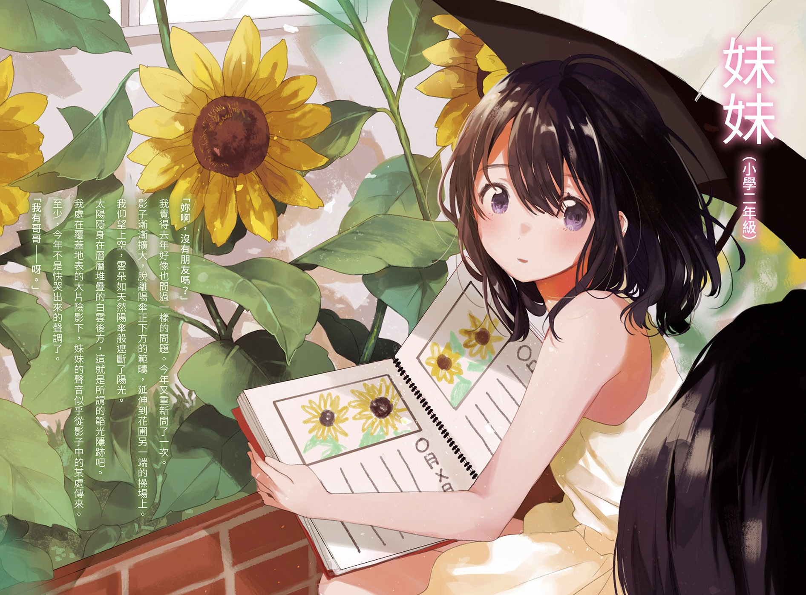
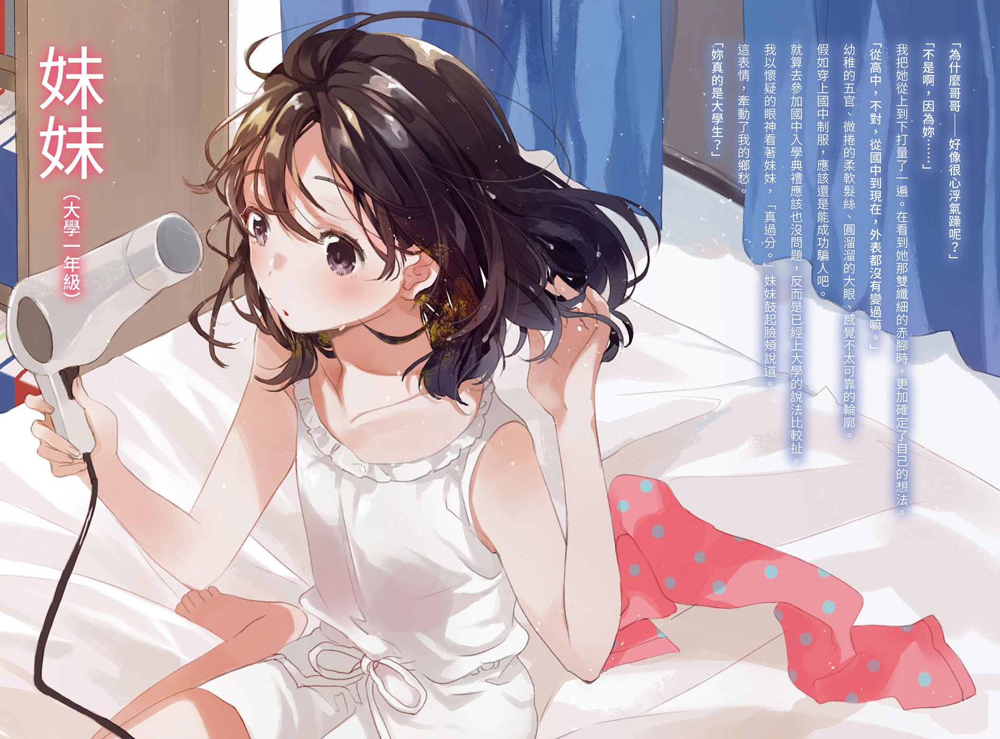
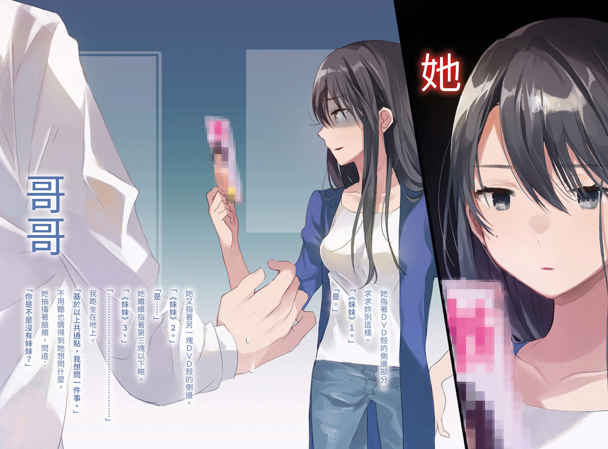
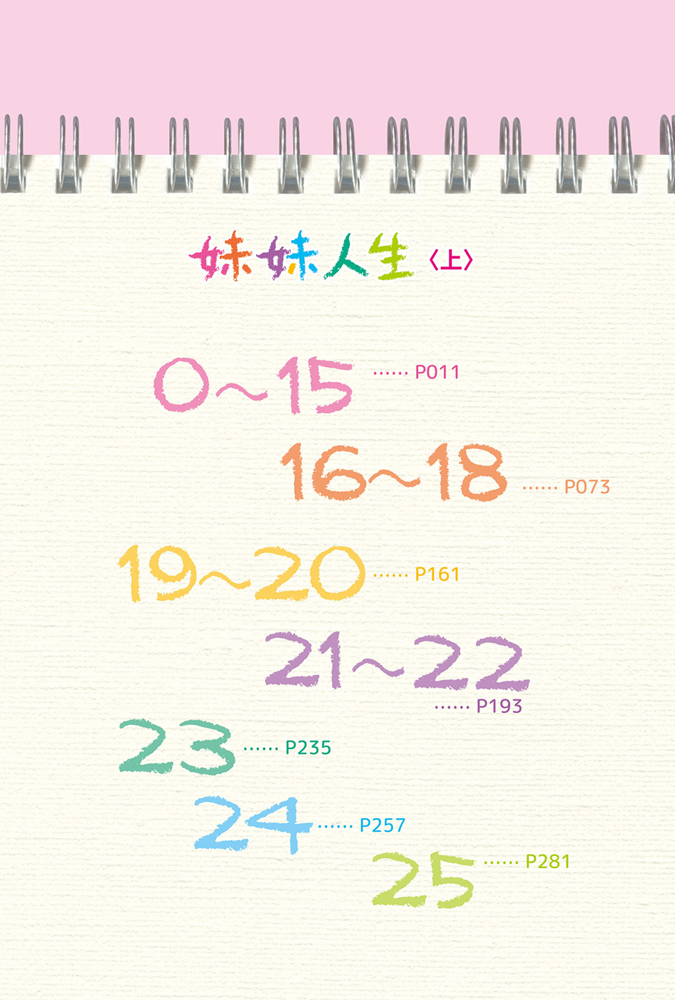
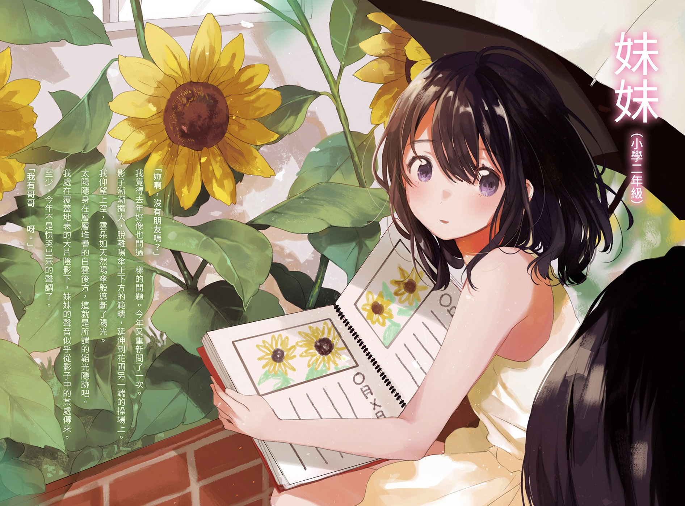
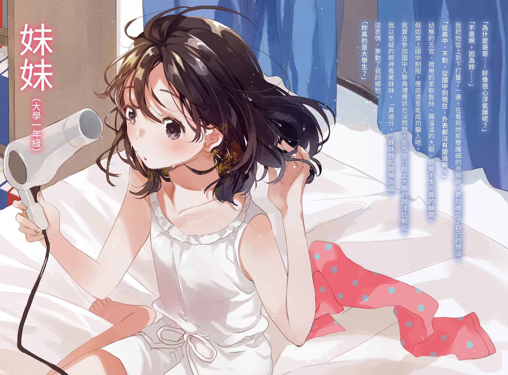
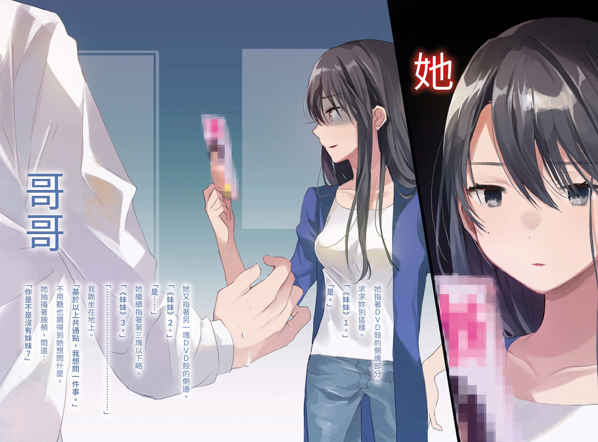
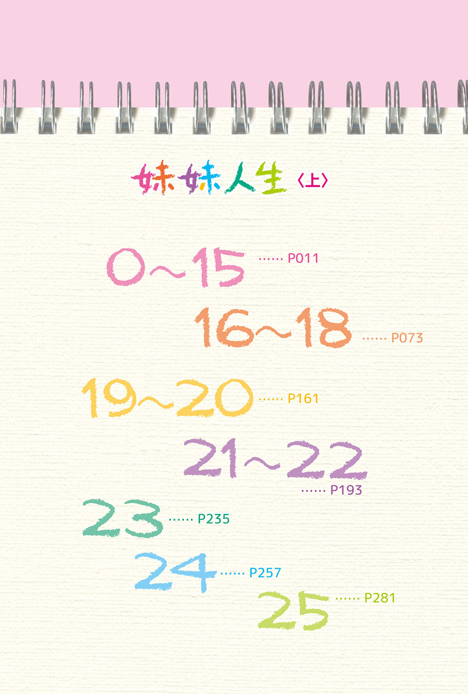
这不是将一生奉献给谁的故事。
人生的道路不管走到哪里，都只能是自己的路。
不论如何抉择，不论觉得这些有多好，或者被多么沉重的事物攀附，
全都是我在活着的过程中得到的，属于我的东西。
因此，只要妹妹能漾起愉快的笑脸，大部分的事我都能以「随便啦」带过。
这就是我注定会走上的路吧。而且，必须经过相当长的时间才能发现，
这种近乎草率的随便态度将会左右自己的一生。
但就算发现了，整个世界也早已建构完毕，没办法进行任何修改了。
所以，我们也只能继续以这样的方式生活下去。
这本书就是这样的故事。
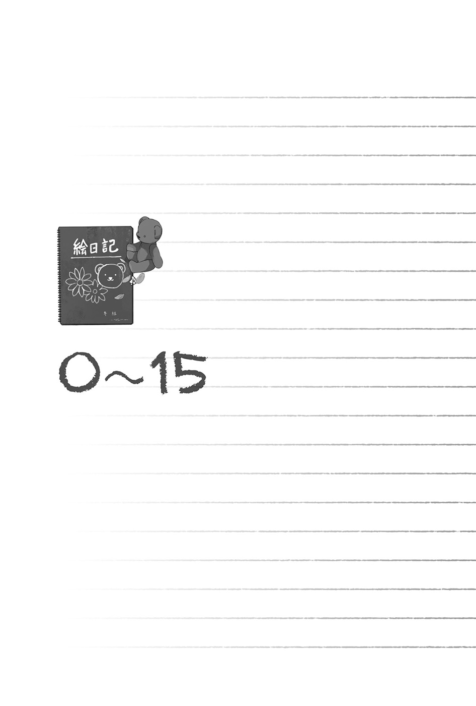妹妹出生的那年，我三岁。那天的事我一直记得，而且我想，我应该也忘不了妹妹的生日吧。因为她是二月十四日出生的。
妹妹出生的前后几天都下着纪录性大雪，但只有她出生的那天，整天晴朗无比。正当大人们因道路与屋顶上的厚厚积雪而忙乱不已时，我担心的只有幼儿园操场上的雪会不会融化的问题而已。这样一来我还能和朋友打雪仗吗？我不戴手套地揉着雪球，一面如此心想。当时我脑子里全是雪的事，就算放学回家后听说妹妹出生了，也只有「哦——」的感想，一点也不关心。
当时的我还无法理解妹妹是什么东西。就算大人说妹妹和我有血缘关系，我也没办法确实地理解这件事。虽然听说妹妹和我一样，都是从妈妈肚子里生出来的，但因为我不记得待在妈妈肚子里时的事，所以还是不懂那到底是什么意思。
家里多了一个人住。自己的房间早晚会因此变窄。
当时，我能理解的就只有这么多。
我也没有到医院探视刚出生的妹妹，因为我父母认为，不能让很吵的小屁孩去医院捣蛋。妹妹出生的六天后，母亲带着她出院回家，直到那时，我才终于第一次见到妹妹。由于我在母亲出院的前一天看到父亲忙着整理床铺、准备各种东西的模样，因此可以理解，妹妹终于要来到我家了。
如此这般地，我与被妈妈抱在怀里的妹妹有了第一次接触。我对妹妹的第一印象是「弱不禁风」。她比寄放在幼儿园的小宝宝更小，有M字秃而且脸颊通红。脆弱得像刚出生的小狗，而且似乎也明白自己很弱小，所以会用哭泣的方式要求周围的人帮助她。
说难听一点，我不觉得妹妹和自己是同一种生物。
整体而言，我对妹妹的第一印象并不好。由于生怕随便碰她一下就会出什么大错，因此不消多久，我就开始有意识地避开她。数年后，尽管有点摇摇晃晃，但妹妹终于能以自己的双腿站立，变成「和我差不多」的生物了。可是这时，我和妹妹之间的障壁已然形成。虽然障壁不厚，是一摸就会粉碎的保丽龙墙壁，但是却会完全阻挡视线，以至于看不到对方。
关于那个年纪的妹妹，我只知道她很怕冷。
也许是因为出生在没下雪的日子之故吧，大约她三岁时，父亲和我们在降雪量大的冬季玩雪橇，才刚玩没多久，她就马上哭着说「好冷、我要回家」。尽管当时我没说出口，不过我心里想的是：真是有够没韧性的家伙。是说，当时的我也没想到，即使在日后，那个评价也一直不曾改变。
由于我不知道该如何对待那个小了自己整整一圈的家伙，而且比起我，她更亲爸爸妈妈，碰到困难时会马上哭着找父母求救，因此一直没有我出场的余地，我甚至没什么机会和她说上几句话。不过除了示弱的时候外，妹妹她不太表现出自己的想法，这种个性也不无关系就是了。我一直是这么以为的。由于我和她之间的交流真的太少，所以也不确定事实是否真的是我以为的那样。
我父母原本打算让妹妹和我一起住在儿童房里，但因为妹妹很黏父母，特别是妈妈，所以后来她还是一直和父母睡在一起。我很高兴房间仍然是我一个人的，并且希望可以一直这样下去。我认为，假如我们同住一个房间，双方都会觉得喘不过气、关系可能因此更加恶劣吧。
那时我和妹妹应该都没有理解到彼此是兄妹。兄妹之间要互相帮忙。虽然这句话不是成文规定，但是至少，我的双亲是如此希望的。尽管我有感受到父母对我的期望，但我故意装成没有察觉；至于妹妹，我想她应该什么也不懂吧。毕竟她还忙着活下去，没多余的心力注意其他事情。
如此这般的，我们在完全没有构筑关系的情况下长大了。
妹妹开始找我哭诉事情，是她六岁、我十岁的时候。
那时正值八月底，已经是暑假尾声了。感觉得出来太阳西沉的时间开始稍微提前，不过比起那种事，在这个时期，「快开学了」的事实更加令人忧郁。明明时间就像游泳池的池水那么多，为什么不知不觉间全部蒸发了呢？暑假结束的事一定是骗人的吧？可是看看自己手臂，肌肤确实有着日晒变黑的痕迹。而我，也只能对于不动如山的铁证叹息不已。
正当我以那样的心情占据于电风扇的正前方，搔着被蚊子叮咬的部位时，身后传来微弱的气息。我回头一看，是妹妹站在我身后。虽然我没发出声音，但内心其实震惊不已，惊讶到连被蚊子叮咬的刺痒感都忘了。
难得主动靠近的妹妹，手上拿着绘图日记本。「帮我……」她目光一与我对上，就战战兢兢地朝我递出日记本，小声地如此说道。听到这要求，我心中浮现不好的预感，而那预感在我不经意地打开日记本后成为真切的现实。
本子上几乎没有关于这个夏天的纪录。哇喔——我摸着洁白如雪的页面，惊叹不已。
不要说图文的部分了，连日期也全是空白的。我隔着日记本看向妹妹，她正以湿润的双眼瞅着我。就位置关系而言，我坐着，妹妹站着，所以是她居高临下地看着我，但不知为何，我有种俯视着她的错觉。这似乎是我第一次发现，妹妹比我小了很多很多。
「暑假作业？」
我问道，妹妹微微点头。我记得自己在低年级时也写过一样的东西。绘图日记这种作业，不论再怎么找借口，没写完都是会被骂的，无法找父母讨救兵。我明白妹妹之所以找上我的原因了。
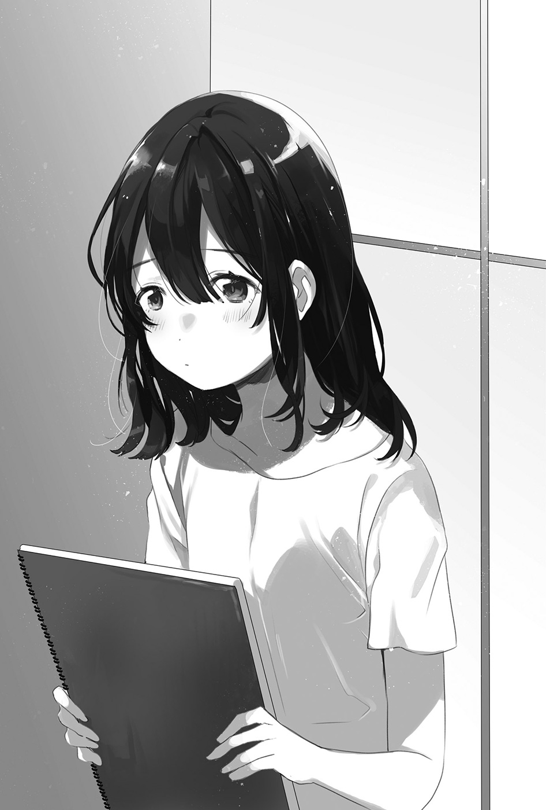除了前三天之外，整本日记全是空白的，让我扎扎实实地理解「三日打鱼，两日晒网」这句话的意思。我困扰地抓头，尽管明白妹妹哭着找我的原因，但就算找我帮忙，我也无能为力啊。我连自己怎么过完暑假都不太记得了，当然完全不清楚妹妹是怎么度过这些日子的。
「你整个暑假都在干嘛啊？」
没有责备的意思，纯粹是基于对妹妹怎么度过暑假感到好奇，所以才发问的。是因为沉迷于什么事物，以致于舍不得拨出时间写日记吗？我想问的是这个。但是听在妹妹耳中，也许觉得像是在责备她吧，泪水开始在她的眼眶里转来转去。「哎哟喂啊！」我慌了起来，这下糟糕了。见到妹妹抽搐着嘴角，泫然欲泣的模样，我背上冷汗直流。要是被待在其他房间的妈妈听到妹妹的哭声，因此挨骂就不好了，我赶紧推着快哭出来的妹妹离开客听。尽管电风扇还在转动，可是我没有多余心力回头去关它了。
「别哭别哭。」上了二楼房间后，我拼命安抚着妹妹，妹妹也努力地吸着鼻子，忍耐不哭。我松了一口气地坐在地上，妹妹也跟着跪坐下来。即使站着时也很渺小的她，坐下来后存在感就更稀薄了。也许是因为她常低着头吧，感觉就像揉成一小团的口香糖包装纸，一不注意，就会被人忽略掉。
我交互看着放在我俩中间的日记本与情绪低落的妹妹。除了妈妈带着刚出生的她回家时那次之外，这是我第一次正眼看着妹妹。当时感受到的弱不禁风依然没变，只有个头长大了一点而已。长长的黑发有如下垂的兔耳似地挂在颊畔。
不理她的话，泪水似乎会立刻从眼里冒出来。见到那样的眼神，我当然不怎么舒服，仿佛连我自己都要情绪低落了。想逃离郁闷的场面，可是身体却无法动弹。
我不是特别有责任感的人，如果是平时，我早就脚底抹油溜走了。
谁管你的死活啊？而且我还会这么想。
可是，现在的我做不到。看着妹妹，我明白那是不可能的事。
为什么呢？原因或源由之类的，我并不清楚，可是——
不能不帮她。我有这种感觉。
该说是生物具有的，本能般的同伴意识吗？还是因为我们血脉相连呢？总之那种东西有如产品序号般地刻在我的体内，在我无法改变的部位要求我必须帮忙，使我难以抵抗。也许，一旦察觉了那种东西，我就只有成为「哥哥」一途了吧。
我拿起绘图日记本，把已经写好的前三页看过一遍。被画在画框中央的全是母亲。以平假名写成的日记阅读起来很不容易，日记上以寥寥数语记录了家中发生的事，正确来说是母亲做过的家事。妈妈做了○○。妈妈做了○○。全是同样的句型。而且对这些事也没有感想。这样的日记连续写了三天。
而我，则出现在第二天的图画框中，不过出现在右边的角落，露出半张脸。虽然难以由图片判断那人是不是我，不过，会被那样草率对待的人，整个家里也只有我而已。那天的日记中完全没提到我的事，单纯是因为我刚好出现在妹妹的视野之内，所以顺便画进去而已。这张图相当精确地表现出我和妹妹之间的关系。
日记的部分全都毫无内容可言，只写了三天就中断了。由于日记只记录了家中的事，没有提到任何户外活动。感觉起来是写了三天差不多的内容，终于写不下去了。我仔细看了一下妹妹，和我不同，她的肌肤完全没有日晒的痕迹，这表示她从来不出门吧？也不去学校的游泳池游泳吗？这么说来，我发现自己从来没有和这家伙一起出门过。如此一来，绘图日记之所以几乎空白，也许不是因为偷懒不想写，而是因为没有题材可以写吧。
「你啊，没有朋友吗？」
我冒失地问道。听到这句话，妹妹的嘴角和脸颊再次抽搐了起来。「别哭别哭。」我再次慌张地安抚她。妹妹也努力地忍住泪水，不过鼻水还是滴了下来。我从面纸盒抽了张面纸，帮她擦去鼻水。妹妹动也不动地任我处置。
麻烦的家伙。老实说，我觉得有点厌烦。
可是，我也相当清楚不能丢着她不管。
「我会帮你啦。」
说完，妹妹立刻抬起头，原本挂在眼角的泪水收了回去。
也许是因为头发不再盖住脸，脸上的阴影变淡的缘故，连表情都充满活力。真是个好懂的家伙。
不过，也用不着在这种快来不及的时间点求救吧。这次换我抱着头，伤脑筋了起来。
一口气写出将近四十天分的日记，可不是件简单的事。但是让我呜！的一声发出惨叫的，是日期下方的天气栏。虽然老师应该不可能记住每天的天气，可是和其他人的日记整合一下的话，就会露出马脚了。家里当然没有一个月前的报纸，没办法调查资料。
我思考了一会儿，决定放弃填写天气状况。「你就随机在上面画笑脸或哭脸吧。」取而代之的是对妹妹做出这样的指示。不是每个人都喜欢晴天，而且有些人还很喜欢雨天。因为每个人的感觉都不一样，所以妹妹对那天的天气有什么感觉，要怎么解释都可以。至于日记的部分，就尽量避免提到天气方面的事，随便找些内容写写就好。
我亲自帮她写的话，字迹一定会穿帮，而且她会的汉字程度也和我不一样。所以日记就让妹妹自己写，我负责画图。虽然说笔触和前三天妹妹自己画的图应该不太像，但如果连那边都重来，整本绘图日记就全是捏造的了。那样一来就不是日记，只是单纯的妄想绘本了。
可是，就算我叫妹妹随意捏造内容，她依然只是要哭不哭地看着我。「没有事情可以写。」听到她以微弱的声音这么说时，果然是这样，我心想。果然是因为没事情可以写，所以才没继续写的。
「你就瞎掰啊。」我说道，但妹妹仍然想不到可以瞎掰的事情似地，微微颤抖着眼角，鼻孔也稍微张大了一点。这样一来，难不成整本日记的内容都得由我来想吗？我觉得自己好像快昏倒了。
我双手交叉在胸前，瞪着墙壁。虽然数量已经减少了，但家里还是听得到蝉鸣。
妹妹的皮肤白皙程度，就算想让她去捉蝉也不行。【录注：补缺】
「真没办法……那么，就编一些和我玩的故事吧。」
妹妹连连点头，开始等我继续说下去。难道说我得从第一句编到最后一句才行吗？这可是比想象中更艰巨的大工程呢。我盘起双腿，两只脚上下抖动个不停。
一直被妹妹盯着看，让我觉得很不舒服。我试着争取时间。
「让我想一下。你先把天气画上去吧。」
如果是这种程度的事，就算是妹妹，应该也做得到吧。妹妹轻轻点头，动笔画了起来。很快地就画出一张笑脸。妹妹拿笔的方式很普通，但是手劲相当强，画出来的笑脸线条也相当深。
大大咧开的嘴巴，和龙猫笑起来时差不多宽大。
接着画的是哭脸。眼角下垂的模样和刚刚的妹妹一模一样。
也就是说，虽然我没看过，但假如妹妹笑起来，其实也会和那张笑脸差不多啰？
我的妹妹啊，一个女孩子笑成那样好吗？我不禁苦恼起来。
废话少说。
局面似乎演变成必须由我掰出每天的日记内容，并且画成图画。如此一来别说今天了，就连明天、后天，仅剩的少许暑假都会因此浪费掉。
只有我的暑假被提早结束，我有一种损失惨重的感觉。
至于妹妹，她正行云流水地画着表情符号，但是画的时候脑中八成什么都没在思考吧。证据就是她在今天的天气栏上画了笑脸。
还真是随便乱画啊。不是哭着来找我讨救兵吗？我傻眼地心想。
我从走廊的窗户朝外看去，阳光穿过薄云，烧烤着对面人家的屋顶。
尽管暑假结束了，但是夏天似乎还会再延续一阵子。
向来有如游泳池的池水那么多的假日，在每一次的眨眼中逐渐蒸发、一如往常的暑假。却在这年的暑假快结束时——虽然这么说有点夸张——忽然冒出了一个妹妹。反过来也是。在妹妹心中，她应该是头一次把我当成「哥哥」吧？正如超市冷冻柜上的肉品对不想买肉的人而言只是商品，但是对想做汉堡排的人而言，则是必要的「食材」。价值观会决定事物的意义。
诞生于我和妹妹之间的，极度微小的什么，成为一切的开始。
我沉默地陪在妹妹身边，看着她把天气表情画完。
这就是所谓的哥哥吗？我觉得有点难以冷静，坐立难安。
还有，这就是所谓的妹妹吗？我目不转睛地凝视着眼前的东西，心想。
暑假结束的两周后，妹妹依然坐在我房间里。这个房间已经从我的个人房变成了儿童房了，因此妹妹坐在这里，也是理所当然的事。开学典礼结束后回到家时，妹妹的书桌和床铺已经被搬进房间里了，我连反对的机会都没有。
究竟是父母强势执行的呢？或是妹妹也同意了呢？真相不明。不论如何，总之这件事没有任何我表达意见的余地。家里基本上都是以妹妹为优先，我则被摆到后头。但是我并不觉得不公平。
因为妹妹是比我麻烦很多的家伙。我已经明白这件事了。
我想起绘图日记时的辛劳。花了三天左右的时间把整个暑假的日记掰出来，写到最后，连我也因绞尽脑汁想题材而对那几天的事记忆模糊。毕竟妹妹的皮肤白到不可能参与任何户外活动，比如游泳之类的，因此可以掰的题材自然地就受限于室内，更进一步地说，是受限于家里。要每天都掰一件家里的活动，而且还要画图……掰到后来，我都快精神耗弱了。幸好直到目前为止，妹妹的导师都没有针对妹妹的日记发怒，所以应该是顺利蒙混过关了吧？如果连沤心沥血掰出的日记也会让老师生气，应该连我都会想哭吧。
放学回来后，妹妹把书包放在桌上，什么事都不做地坐在椅子上发呆。自从我开始正视妹妹后，我终于发现她的坐姿很奇怪：双腿并拢，呈小山型缩在椅子上；双手环抱着膝盖，手掌插在椅面与脚底之间。只要手掌一动，身体就会跟着微微前后晃动。很像我从别人那儿收到的旅行纪念品不倒翁。
妹妹发现了我的视线，转过头：
「怎么了吗——哥哥——？」
听再多次都会觉得耳根发痒的声音。
「嗯——没事。」我含糊地应着，手肘靠在桌上，拄着脸颊。
自从帮妹妹写暑假作业之后，她就开始这样称呼我。在那之前，别说如何称呼我了，我们连话都没说过几句。与那时相比，现在的互动多少比较像兄妹了。比较像，兄妹。由于双亲在见到我们的互动后露出安心的神情，所以我想，这应该是他们期望中的兄妹类型吧。我也只能以这为判断基准了。
可是，我们只是成为「哥哥——」和「妹妹」而已，没有成为玩在一起的同伴。就算住在同一个房间里，我们还是不太常说话。对我来说，妹妹就像漂浮在半空中的，巨大的水泡。也就是说，是一种异物。柔软，湿润，但是异质。
妹妹仍然在发呆，看起来有如晒太阳中的海鬣蜥，感觉起来毫无防备，让人愈看愈担心。应该说，我很怕她脖子以上的器官没有在活动。
如果又要找我帮忙写作业我就惨了。我试探性地问道：
「你不写功课吗？」
「等一下再写。」
她看了我一眼后说道。我没有帮忙写绘图日记之外的暑假作业，但是妹妹的导师似乎也没因此发火，表示其他作业应该都有乖乖写完，不是偷懒不写作业的小孩吧。这让我有点安心。可是再这样下去，明年暑假说不定还是会重蹈覆辙。我们学校规定一、二年级生在暑假时都得写绘图日记，我有种难以避免此事的预感。看妹妹那副悠哉的模样，似乎无法期待她在短短一年之内成长为能自动自发地写完日记的勤奋小孩。
我看看妹妹的侧脸，又看看时钟。指针行走的声音比我们制造出来的声音更大。离晚餐开饭还有一段时间，因此我打算先把作业写完。虽然今晚我没有预定要做的事，但假如突然出现想做的事，却因为作业还没写完而不能去做的话，感觉一定会很呕。我就是会未雨绸缪这种小事，器量不怎么大的人。
不过，有不少大人因此误以为我是认真负责的小孩，让我在大人间的评价意外地还不差。虽然是误会，但因为是被高估，所以没必要修改他们的想法。反正就结果而言，我总是会早早地完成作业，这是事实。
我开始写起国语习题，原本发呆中的妹妹也面向桌子，把脚放下，挺直背脊，改成普通的坐姿。接着她从被扔在桌上的书包里拿出蓝色的数学习题本，开始写起作业。
握笔方式还是一样用力，笔压应该很强吧。我侧眼看着妹妹写字，心想。
「你不是晚一点才要写吗？」
「我在学哥哥——」
妹妹目光不离开作业簿地答道。我稍微思考了一下她到底在说什么。
「为什么？」
「因为哥哥——很会写日记。」
妹妹的回答相当简短，也缺乏说明，但还是能从她的回答中明白，她自己也对日记的事有所反省。为了能像我一样写出整本日记，所以开始模仿我。可是我写的那个，与其说是日记，还不如说是绘本创作。好孩子不可以学。
「我觉得，哥哥——度上升的话，好像就可以写出来了。」
那是虾米东东？妹妹心中似乎存在着我从来没听过的衡量标准，但是突然说出来，也只会让我不知该如何反应而已。话说回来，身为妹妹的人提升哥哥——度要做什么？妹妹这种东西，该提升的不是妹妹度吗？
尽管我不懂妹妹的想法，但总之她有改进自己的想法。努力克服失败或达成原本做不到的事，这种心态很正面，很值得鼓励。虽然我是这么想的，可是又觉得她努力的方向好像不太对。
算了，既然是学着我提早写完作业，应该也不算坏事。
写了一阵子习题后，我起身准备去上厕所。妹妹也抬起脸，起身走到我身后。不会吧？我边想边迈步，妹妹还真的跟了上来，而且连走路方式都模仿起来了。
「我觉得这么做没啥意义哦？」
「先做再说。」
妹妹嘴巴上回道，身体依然模仿着我的举动。她的双眼笔直地注视着我，该说是有行动力呢？还是固执呢？或者是冲动鲁莽呢？到底是哪一种呢？我烦恼了起来。
我们一前一后地下了楼，妹妹原本还想跟进厕所里，但是被我挡在外头。上完厕所后，妹妹又学着我一起洗手。
「这样做没意义哦？」
「好凉哦。好舒服哦。」
妹妹的心情像飞溅的水花般飞扬了起来。这是无所谓，但是擦手的方式太随便了，我只好抓起她的手，帮她把水擦干。这时母亲刚好经过，被她看到我们的互动，我有一种睫毛重到快把眼皮拉下来的感觉。
这就是所谓的困窘难堪吧。大概。
我们回到二楼。又过了一阵子，写完数学习题的妹妹向我说道：
「哥哥——我要念课文，你来听。」
她拿着国语课本和朗读卡，朝我走来。
「哦，国语的作业吗？好啊。」
以前似乎都是朗读给母亲听的，不过今天好像连我也可以。妹妹坐在房间中央的电灯正下方，我则坐在她对面。她打开课本后，静止了半晌。
「怎么了？」
「哥哥——你先念。」
她说着，把课本朝我递过来。为什么？我在问出口前意会了过来。
「……要学我？」
嗯。妹妹点头。这不是脱裤子放屁——多此一举吗？
这样到底算是有主见呢？还是没主见呢？
做事务求贯彻到底应该是好事，但假如一直这样下去，妹妹成长到明年时真的没问题吗？我相当担心。
自己也会受到牵连，不过又没有夸张到会影响将来。
尽管如此，会替妹妹考虑未来，我的哥哥度也挺高的嘛。是说，哥哥度，那是什么东西啊？
和哥哥——度相比，哪一种比较像样呢？我不禁思考了起来。
该说历史是会重演的吗？隔年暑假，我早早地就发现妹妹手上拿着绘图日记本。「那边那个妹妹！」之所以会用这种奇怪的方式叫住她，应该是因为我内心相当震惊吧。
「哥哥——什么事——？」
感觉起来毫无进步的说话方式。会这么想，表示我已经习惯她这样讲话了吧。
「那是绘图日记对吧？」
妹妹身子一颤，无言地把日记本朝我这边递来。「慢着。」我伸出手掌制止：
「你的哥哥——度没有上升吗？」
虽然不知道那是什么东西，但毕竟是妹妹以前说过的话，因此我试着如此问道。「那是什么？」结果妹妹反而一脸莫名其妙地看着我。这小子，连自己以前说过什么都忘了吗？顺带一提，那模仿哥哥的行为只做了三天就没下文了。我的妹妹似乎还挺三分钟热度的。
「总之现在离我登场还早……你果然还是没有事情可以写？」
妹妹轻轻点头。也许是因为暑假才刚开始没几天，所以表情虽然忧郁，但不到要哭的程度。
得在她哭着求救前做好防范对策才行。
「那不然……对了。不如来写观察日记好了。你觉得呢？」
妹妹的问题在于缺乏写日记的题材。既然如此，只要自己创造题材就行了。我随意地举例，可是妹妹却歪着头：
「观察什么？」
连这部分都得由我来提议吗？我搔着头发，想了想后：
「如果要观察，向日葵怎么样？植物类的话，就算没有认真观察也可以写出来。」
「那就向日葵吧。」
好快。明明连自己想题材都做不到，下决定时倒是果断到异常。
不管做什么都行，却没有任何想做的事吗？
「真的要观察？」
「要。」
妹妹打开日记本，虽然几乎是空白的，不过日期和天气已经从第一天起就写上去了。
至少有一点点成长，我对这件事有点感动，可是又觉得哪里不对。
算了，不管是向日葵还是什么都好啦。
「学校的花圃里应该有向日葵。」
我在轮值日生时曾经帮花浇过水。当时花是开着的，但假如之后的值日生偷懒不认真浇水，有可能已经枯萎了。是说如果是那样，还是能以枯萎的向日葵为题材写日记。记录已经枯萎的花，说不定还挺特别的。
「要去学校吗？」
「嗯，是啊。不去的话就没办法写嘛。」
「哥哥——也会去吗？」
为什么会这么想？我可不帮你写日记哦。我移开目光。
「唔，你自己去学校不就……」
我说到一半，发现妹妹只是圆睁着眼，瞬也不瞬地仰望着我。
我立刻明白那眼神是什么意思，但是得花上一点时间才有办法问出口。
「我也要去吗？」
「要去。」
好像就是这回事。应该是要我接送她吧。
毕竟是自己主动问起的，所以很难拒绝她的要求。
你已经小二了哦？虽然我想这么说，但是在想象了一下妹妹单独外出的场面后，我只觉得提心吊胆。恐怕是因为没看习惯那种场面吧，而且妹妹平时也从不出门。而我自己，除了和妹妹一起上学之外，也没有带着妹妹出门过。
妹妹带着日记本、画图用具以及一把伞来到玄关。伞的表面是白色的，里面是黑色的，看来是把阳伞。只不过是去学校而已，祭出这种装备是不是很夸张？
「你不喜欢被晒黑？」
和母亲一样。应该说正是因为模仿母亲，所以才不想晒太阳吧。
「这样才有美肌效果——」
妹妹语调平板地回答。应该是从谁那边学来的说法吧。
我喔了一声，随口应道。尽管我不知道那个美肌是什么意思。
成人用的伞又大又重，妹妹努力地把手伸到最直，打开伞，不只她，连我都被笼罩在伞下。不是雨天却站在伞下，那种微暗的感觉让我觉得头很沉重，仿佛被人压着头顶似的。
我和妹妹在阳伞制造出的阴影下前进。妹妹不会骑脚踏车，父母不准我们双载，所以只好用走的。但是骑车到学校要三分钟，走路也只需要五分钟，两者没差多少就是了。
假日期间，在不是要去游泳的情况下到学校，感觉很奇妙。骑车出门时仿佛会把肌肤烤焦的灼热日光被阳伞阻断，身体周围弥漫着纯粹的闷热。焦化、凝滞后的大气包覆着我的肌肤，有种连自己也被卷入夏日景色中，一起融化般的感觉。
妹妹摇摇晃晃地拿着伞，伞骨时不时撞到我的头，我忍耐着不出声。
我们从学校后门走进校园，可以看到设置在校舍那头的花圃。每班种的植物各不相同，向日葵生长在四年三班的花圃里。虽然有点枯萎，但花丛整体还是健在的。其他班级的花圃里有干掉的丝瓜、不敌酷暑而凋零的各类花朵。泥土地上布满了大大小小的花瓣，看起来琳琅满目。植物多的地方昆虫自然也多，尽管我不怕大多数的昆虫，但是蜜蜂我就不行了。因为被螫到好像会很痛。我见到在丝瓜那头绕来绕去的蜂群，心里害怕，有点不敢走近。
妹妹似乎没看到那些蜜蜂，她平静地拿出写日记的用具。可是绘图日记必须天天写，这表示我得天天陪她来吗？虽然日记是由她自己写的，但是天天陪着妹妹到校也很麻烦。早知道就别讲向日葵，应该讲家里院子种的花。我有点后悔。
不过，我也不知道家里院子开的花名字叫啥。
我帮妹妹撑着阳伞。「哥哥——好高哦——」妹妹仰头说道。很高是指我的身高吗？被说个子高的感觉还不赖。妹妹打开日记本，用力握着自己带来的铅笔，开始画起向日葵。比真花更锐利的花瓣，伸手去摸的话，说不定会被割断手指头。
与花朵给人的柔软印象天差地别的，尖利的花朵。不过算了。
因为这就是妹妹笔下的花。
我趁着妹妹画向日葵时观察妹妹。长期不晒太阳而显得苍白的肌肤、与我同色的黑发。但头发比我长很多，而且有点卷曲。与柔和的脸庞配在一起，有种平稳的感觉。从表情可以看出，她不是很有主见的人。再加上个子比我小了一个头以上，老实说，我觉得妹妹和我长得一点不像。
长大之后，妹妹应该会比我受欢迎吧。我心想。
可是，以后会长大啊？我又涌起这种感情。看着妹妹，会觉得如果她一直这么娇小，我好像就能一直沉浸在放暑假的感觉里。
从早到晚不变的酷热、漫长的白日、蝉的鸣叫声。
夏天总是给人一种时间会持续到永远的错觉。
但是，暑假从来没有持续到永远过。
每年的暑假都是在我的引颈期盼下开始，发出各种色彩的光芒后消失。
今年暑假的色彩，应该是向日葵的色彩吧。
如此这般地，我开始天天目睹去年暑假中一次也没见过的向日葵。
「呜噫噫！」
耳边传来昆虫的振翅声，我反射动作地逃开。与那昆虫拉出一段距离后，我压低身子回头向后看。果然是蜜蜂。橙黄与黑褐相间的身体，在阳光下鲜艳到可怕。
一旁的妹妹仍然不把蜜蜂当一回事地继续画图。可是负责撑伞的我逃走了，纯白的日记本反射着阳光，让她因刺眼而皱起了脸。为什么不觉得害怕呢？我心里惊讶，急急地向她招手。
「你快点过来。」
「这是不会螫人的蜜蜂哦。」
妹妹看着飞到自己眼前，似乎是来观察自己的蜜蜂说道。有办法一眼就分辨出来吗？就算蜜蜂停在妹妹肩上，她也不以为意。最后，蜜蜂自行离去，应该是回巢了吧。我确认那蜜蜂飞远后，回到妹妹身边。
向日葵观察日记已经写了一周，这次的绘图日记没有只写三天就放弃。「哥哥——我们走吧——」只要听到妹妹这么说，我就无法开口拒绝。身为哥哥，就是这个样子吗？开学后去问问家里有弟弟妹妹的同学好了。
话说回来，我觉得每天画的向日葵全都长得一样，是因为我的感性太低落吗？
「哥哥——你会怕蜜蜂吗？」
妹妹以纯真的眼神问出让我觉得刺耳的问题。被她看到我没用的那一面了。
「不是会怕，只是不喜欢。你呢？你不怕昆虫吗？」
妹妹的视线飘向右方，停顿了一下后摇摇头。
「我讨厌蟑螂。」
「唔——我也不喜欢蟑螂呢。」
在学校做扫地工作时，有时会看到蟑螂出没。女孩子会哇哇乱叫地作鸟兽散；男生们则会一拥而上，像猫咪玩弄猎物似地，把蟑螂踢来踢去弄死它。蟑螂的生命力虽然强，但是耐力很差。我从没看过被踢到不会动之后，和其他垃圾一起被丢进垃圾桶里的蟑螂复活过。
我一面警戒着蜜蜂的接近，一面因太闲而旋转起阳伞。配合着伞的形状，影子在地面跃动了起来。我注视着影子的变化，鼻尖感受到些微的凉风，累积在体内的暑气似乎也因此被吹跑了。是炎阳下短暂的舒适时光。
但是转过头的话会让人分心。妹妹对此不甚满意。所以不能一直转个不停。
「唷——你在干嘛？」
蓦地，有人叫着我名字。我回过头，朋友骑在脚踏车上，隔着苍白的铁丝网朝我这边看来。还不到八月，这名加入少年足球队的朋友已经黑得像焦炭了。
被朋友看见我与妹妹在一起的场面。我莫名地萌生一股焦躁之情。
觉得很尴尬。尽管那朋友不是我平时会特别在乎他想法的对象。
「呃——有点事……」
我含含糊糊地说着，无法流畅地辩解。因为对方离这边有段距离，所以没办法好好地说明吧。稍微停顿了一下后，朋友一面抹去脖子上的汗水，一面问道：
「我现在要到阿垣家打电动，你要来吗？」
被朋友如此邀约，使我心生动摇。有种伞杆融化变形的错觉。另一方面，类似焦躁的感情也更强烈了。之所以会觉得不自在，八成是因为被朋友看到了自己平常没让他们看到的一面，才会变得坐立难安吧。不是平常身为同学或朋友的我，而是身为「哥哥」的我。是因为我不是那种充满自信的人，所以在被其他人看到自己不为人知的一面时，才会感到如此羞耻吧。
由于也有这样的感情在内，要说我没有扔下阳伞和朋友一起去玩的冲动，就是在说谎。
「啊——呃……可是我现在有点事。」
我指着妹妹，含糊地说道。也许是因为一直待在大太阳下很难受吧，「哦——是这样啊——」朋友也随口应着，很快地就骑车走了。车轮转动的声音渐行渐远。
这么说来，今年暑假到现在，我都还没和朋友出去玩过。
害我无法和朋友出去玩的元凶早已停下手，抬头仰望着我。刚才之所以会觉得尴尬，一部分原因也是那视线的缘故。那视线有如丝线，钻入我的肌肤里，拉扯着我，让我行动。
「那是哥哥——的朋友吗？」
「是啊。」
我点头答道，开始旋转阳伞。站太久，脚掌和膝窝都开始发热。
「你啊，没有朋友吗？」
我觉得去年好像也问过一样的问题。今年又重新问了一次。
影子渐渐扩大，脱离阳伞正下方的范畴，延伸到花圃另一端的操场上。我仰望上空，云朵如天然阳伞般遮断了阳光。太阳隐身在层层堆叠的白云后方，这就是所谓的韬光隐迹吧。
我处在覆盖地表的大片阴影下，妹妹的声音似乎从影子中的某处传来。至少，今年不是快哭出来的声调了。
「我有哥哥——呀。」
妹妹的回答，等于故作积极地承认了这个事实。
「虽然没有朋友，但是我有哥哥——」完整的句子应该是这样吧。
朋友和哥哥应该要分开看吧？我心道。可是，这些话卡在齿缝间，说不出来。
所谓的兄妹关系，是足以取代朋友关系的关系吗？
话说回来，人际关系是可以这样自由置换的东西吗？
我站在重新露脸的烈日光辉下，思考起这种和自己不相称的问题。
向日葵观察日记只能在晴天时写。因为雨水会淋湿日记本。
基于这样的理由，雨天时就不需要出门了。晴天时撑着伞出门，雨天时待在家里，这不是挺奇怪的情况吗？
每当植物观察因下雨而中断的日子，我都会陪妹妹一起玩。
因为得制造写日记用的题材才行。
但是这样一来，不就变成是为了写日记，特地找活动来做了吗？我对这种本末倒置的行为感到有点疑惑。
是说，连下雨天都陪着妹妹，说不定我其实是个很了不起的好哥哥？我老王卖瓜地想着。
「换哥哥——了。」
妹妹以摇杆戳着我的腿，说道。「哦哦。」我抬头仰望电视萤幕，不先确认球场地形就随意挥杆，小白球因而差点掉进水池里。好险啊——我瞪大眼睛心想。
以雨声为背景，我的心跳暗自加快了。
我们今天玩的是高尔夫游戏。之所以挑这游戏玩，是因为对妹妹而言，高尔夫的比赛规则很简单，比较容易理解玩法的缘故。基本上，只要把球打进球洞里就可以了，比起时投时打，攻防立场换来换去的棒球，规则单纯了许多。虽然我比较喜欢棒球就是了。
要是赢太多，因此弄哭妹妹就伤脑筋了。得像陪客户应酬那样放水才行。我原本还如此托大地盘算着，没想到妹妹出乎意料地强，让我没余力放水。应该说，我甚至为了维护身为兄长的尊严，为了不输给妹妹而认真起来。但就算认真起来，小白球的飞行距离也不会因此变长，击球点也不会因此变准确就是了。
高尔夫游戏是以飞行距离和打击时机来决定输赢的，而妹妹很会抓时机。与其说很会抓时机，还不如说她把时机背起来了。该等多少秒再按下按钮，妹妹似乎把这些秒数记得很清楚，而且还能相当程度的重现时机。每当妹妹挥杆时，「好球！」电视就会传来热闹的欢呼声。打空杆的次数相当少，我有一种和笔直飞窜的蛇赛跑般的感觉。
尽管如此，我还是和妹妹玩得旗鼓相当。因为妹妹选错角色了。妹妹选了爆发力低，最长飞行距离很短的老头角色。由于妹妹的打击时机很精准，要是她挑了虽然难用但是飞行距离很长的角色，我就输定了。呵呵呵，连我都觉得因此暗爽窃笑的自己有够难看。不过，要是让妹妹知道选角有技巧，那我就连比都不用比了。
假如反过来被妹妹放水，我应该会大受打击，三天之内无法振作吧。世界上没有比哥哥优秀的妹妹。虽然我不会说那种话，可是身为一个平时都在照顾妹妹的兄长，为了维护自己的尊严，使点狡猾的小手段也是无可厚非的。
但是，那只是我期望成为的「兄长」姿态，至于妹妹，她对我的期望又是什么呢？
我呆呆地瞥了一眼正在挥杆的妹妹。
柔嫩的脸颊。
总之，目前的她应该对于我愿意陪她玩的事感到很满意吧。
那天的绘图日记，我的身影出现在图画框里。和去年某日的情况不同，画中只有我一个人。
一眼就能看出妹妹画的是没什么特征的我。对此感到麻痒难耐，算是一种错误的反应吗？
连续下了好几天的雨后，某天，我忽然兴起一个念头。
那是学校老师和双亲老是叨念着要我做的事。所以想换个立场，由自己命令别人去做那件事。我承认自己有一点这种想装了不起的动机。不过最主要的原因，还是为了让妹妹不因缺乏日记题材而伤脑筋。
我从放满漫画的书柜最边缘抽出了被父母硬塞进书柜，外观因此变形的儿童文学。封面因为硬塞而变得皱巴巴的，虽然父母把书硬塞进书柜，但我当然也不会把它拿出来重新收好。
总之能阅读就没问题。我把那本书递到妹妹面前。
正在眺望窗外景色的妹妹看着皱巴巴的封面，歪头问道。
「这是什么？」
「没有啦，只要看了这个，就能变得很会写日记哦。」
我猜啦。妹妹打开我塞过去的书，仿佛第一次接触小说似地，惊讶地瞪大眼睛。
「没有图吗？」
「这种书本来就是没有图的哦。」
「欸——」
妹妹像是看到不爱吃的蔬菜般皱起眉头。我很明白她的心情。
「不过啊，看完之后搞不好会觉得很好看哦。」
我不负责任地道。「唔——嗯……」妹妹眼神有点迷惘。
「哥哥——觉得这种书很好看吗？」
「咦？哦，嗯——是啊。」
我毫不犹豫地说谎了。虽然眼神飘忽，但妹妹似乎很相信我的话，「是这样啊——」她垂下视线，看向书本，以手指捏着皱巴巴的封面，摇头晃脑起来。身影看起来相当不安定。
妹妹总是这个样子。所以我才放不下她。
「呐，哥哥——」
「嗯？」
「就算看了这个，变得很会写日记……」
她扭扭捏捏地抬眼，自下而上地瞅着我。
「哥哥——还是会和我一起出去吗？」
「嗯，会啊。」
我搔着头发，点头表示肯定。妹妹的不安仿佛一扫而空似地，恢复成柔和的表情。
「那我去看书了。」
妹妹离开窗边，坐在房间角落，立起膝盖，打开书本开始阅读起来。所以说她担心的是我不陪她出门的部分吗？我觉得鼻尖有点发痒，一股怜惜之情油然而生。我当然会和你出去啊。我看着窗外，一面想象今后放晴的日子，一面喃喃地道。
我只是把刚好想到的，平凡无奇的东西推荐给妹妹而已。可是在不知不觉间，却有种善尽兄长职责的感觉。
暑假总是在日复一日重复的活动中消失。今年的暑假，我是和妹妹一起度过的。偶尔经历一次这样的夏天也不错。我心想。
不这么想的话就会感到后悔，所以我没有选择的余地。
今天我也陪着妹妹去画向日葵。尽管我从来没看过有谁频繁地去照顾那些花儿，但向日葵还是生长得欣欣向荣。是说，有些花瓣已经开始变色、枯萎了，不知妹妹画日记时，是否连这些部分都详实地记录上去了呢？
天气预报说从明天起会连续下好几天大雨，雨停时多半已经开学了，所以这应该是最后一次的向日葵观察日记吧。这活动已经变成我日常生活的一部分了，突然中断，再加上暑假即将结束，使我失落感倍增，有种全身都变得空荡荡的感觉。
与向日葵的凋谢相同，盛夏结束后，蜜蜂也开始减少。听说蜜蜂为了取水而飞到游泳池那头，和当初的我一样，许多人对蜜蜂的出现大惊小怪，因此遭到驱除。不会螫人的蜜蜂数量骤减，吵人的振翅声不再出现于耳畔。但是，少了会动的生物，花圃的景色仿佛也跟着剥落了一大片似的。
花儿周围没有昆虫，感觉起来果然很不自然。
但这只是视觉方面的感想。实际上，没有人想被蜜蜂螫到。
见我陪着妹妹一起出门，父母似乎也放心了。虽然他们没有直接说出口，但是态度很明显。八成是因为我从妹妹还是小婴儿的时期起就一直逃避与她相处，就算后来妹妹长大了一点，也还是几乎不和她说话，让他们相当担心吧。假如没有特殊的意外，父母应该会比我们早离世；假如在临终之前，我们兄妹俩的感情依然很糟，他们一定会抱憾而去吧。
「完成了——」
仰望天空，画出圆圆的太阳后，妹妹扬声宣布日记完成。
每天不厌其烦地画写同样的主题，究竟写了些什么呢？我有点感兴趣。
因为我只知道片断的内容。
「让我看看。」
我一开口，妹妹立刻把日记本交给我。我随意翻阅着，每一页都是向日葵。
有种把向日葵田整个搬进日记本中的感觉。由于妹妹的笔触强劲，以彩色铅笔涂抹出来的向日葵，意外地相当有生气。
就这个角度而言，图画本身是很不错的，可是——
「唔——……」
至于日记的部分，内容几乎一模一样。虽然说做的是同一件事，内容重复也是难免的，但是至少要有点变化吧。给她看的儿童文学似乎没有发挥作用。就算把内容稍微改编一下也好，总之不要连字面都一模一样嘛。形容词几乎都是很大、很漂亮，然后就没了。很漂亮吗？就在我交互看着日记本与花圃中的向日葵做比较时，视野边缘有什么东西在活动。
有人从教职员室朝这边走来。我很快就猜到是值日的老师。那老师似乎找我们有事，毫不犹豫地朝我俩走近。「啊。」妹妹叫了一声。
「你们班的导师？」
我从她的态度猜道，妹妹轻轻点头。原来如此。不过，她找我们有什么事呢？
那是一名脸上泛着薄汗，脸型和身材都微胖的大妈型老师。这是无所谓，可是我不太喜欢会特地弯下身体和小孩说话的大人，因为我觉得这种人太特意了。
「哥哥，你也是我们学校的学生对吧？」
老师向我问道。妹妹很自然地后退一步，躲到我身后。
「是的。」
「这样啊。每天都陪妹妹来，真是个好哥哥。」
老师眯起眼，和善地笑道。这么一笑，与其说是中年大妈，不如说更像祖字辈的姨婆。要是继续待在这里，负责面对她的人将会是我而不是妹妹，这让我觉得如坐针毡。
「既然你已经写好了，我们就快点回家吧。」
我旋转着阳伞，催着妹妹快走。妹妹来到我身旁。
「哦，再见。路上要小心哦。」
老师并不挽留，而是挥手目送我们离去。
等我们离花圃有段距离后，我向妹妹问道：
「喂，你去年的导师也是她吗？」
我们学校是每两年重新编一次班，照理来说，一、二年级应该都是同一位导师才对。
「是啊。」
妹妹直率地点头。这样啊，去年的导师也是她啊？这么说来，她看着我时那略带深意的眼神，原来是那么回事啊。当初我在捏造日记内容让妹妹写时，没有考虑到连遣词用字都特地模仿妹妹的口吻。
只要把去年和今年的日记做比较，原本的怀疑应该会变成肯定吧。
「算了，总之这次确实是本人写的……所以应该还好吧。」
也许不明白我在嘟哝着什么吧，妹妹只是以有着柔和圆弧的眼眸看着我。
「我只是在想，回家以后要做什么而已。」
现在是上午，尽管暑假所剩无几，可是光就今日而言，还有半天以上的空白时间。
今年新开通的大马路，路边的部分还是裸地，尚未铺设完毕。即使瞭望远方，也看不到道路的终点，举目所及，上下左右的风景全都无限延伸到视线的尽头。青空的边缘形成和缓的曲线，成为统括所有景色的穹顶。我和妹妹行走在这样的田园景色之中。
阳伞的另一头，飞机的引擎声在湛蓝的画布上画出一道又长又直的白线。
随处可见的夏日风景。在这种景色中，共享着那带着焦味的空气的，是血脉相连的兄妹。
对了，妹妹也和我一起住在同一个房间里。
「回去之后要一起玩吗？」
这是我第一次对妹妹做出这种提议。
妹妹那有着柔和圆弧的眼眸变得又大又圆。似乎相当意外我会这么说。
但是一会儿之后，那份惊讶仿佛被阳光蒸发似地消失了。
「哦、哦哦。」
我不由自主地发出明显受到动摇的感叹声。
阳伞在我手中，有如在风中摇曳的花朵，旋转个不停。
妹妹笑了。
嘴唇微微上扬，眼角微微下垂。
她笑了。那是我从来没见过的表情。我深受震撼。
背脊也因而弯成可笑的弧形。
「我要和哥哥——一起玩——」
这是她第一次冲着我绽放笑容。
什么是命中注定呢？
比如说要往右或往左时，命运不是从一开始就强制我走哪个方向，而是引导着我，让我选择它希望我走的方向。这样一来，人们就会误以为「我是走在自己决定的道路上」，没有察觉那其实是一开始就决定好的路。
假如。
假如命运是以那种方式决定人的一生。
那么我在暑假结束时看到的那抹笑容，也许就是一种「引导」吧。
很久很久之后，我忽然领悟到这件事。
我以为这样的时光会一直持续下去。
我和妹妹都是小学生，只要夏天来临，我们就会那样子过暑假。
尽管我没说出口，也没特别深思过这件事，但是最根底的想法就是那样，以那样的想法为基底，日复一日地生活。可是，随波漂流之下抵达的终点，当然不会是同样的景色。
对这件事产生真实感，是从那个夏天算起的第五年。
是妹妹成为国中生，我成为高中生的春天。目睹觉得永远都是那么幼小的妹妹穿上制服时，我发现妹妹和自己其实没差多少岁，并因这个认知上的落差而暂时说不出话。
从裙底伸出来的双腿、于发尾与制服领子之间若隐若现的颈子，让我有点头昏眼花。
「哥哥——？」
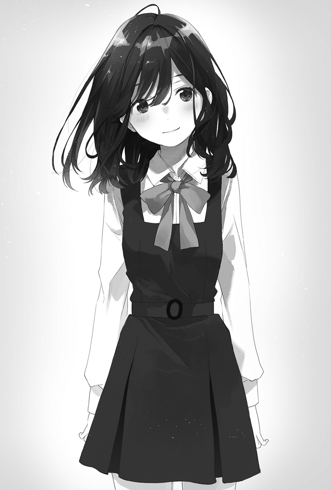妹妹把翘起来的领子翻好，朝我走来。被个头瞬间拔高了许多似的妹妹接近，我觉得呼吸有点不顺畅。但是，由于她呼唤我时的声调，以及叫唤我的方式都与昨天我认识的那个妹妹如出一辙，因此我虽然有点动摇，但还是能勉强稳住心神，有余力面对现实。
「你在做什么？」
「我被吓到了。」
我说着，妹妹转头察看四周。确认没有其他候补对象后，指着自己：
「被我吗？」
「对。」
「我吗？」
「因为在我心里，你一直是那么小嘛。」
我老实地吐露心声。妹妹把手放在自己头顶上，接着让手掌水平移动，轻轻碰到我的胸口。我的心脏有如经历了惊涛骇浪般狂跳不已，有种快晕船的错觉。
「我还是很小啊。和哥哥——比的话，还是很矮。」
「是这样没错，不过我不是那个意思。」
我说道，可是妹妹似乎无法理解我在说什么。什么意思？她以眼神问道。
光滑柔顺的发丝，这部分也和小时候一模一样。
「帮我写日记——你以前还那样哭着找我呢。」
「那是多久以前的事啦～～」
妹妹不高兴地鼓起腮帮子。对本人而言，那应该是难堪又可耻的往事吧。
「不要老是记着以前的事哦，哥哥——」
听到了吗？妹妹说完，再次轻捶了一下我的胸口，为了确认书包内容而跑开了。
可是在我心里，那不是「多久以前的事」，所以追不上妹妹的实际成长速度。
目送不是背着小学生书包的妹妹走出玄关时的那种复杂感情，即使开学典礼结束，走出体育馆，在蓝天下吹风，仍然无法拂拭。
我是不是希望妹妹永远和当年一样小呢？
那种想法太自以为是了。可是岁月如梭的现实不由分说地朝我冲撞而来，让我倍感困惑，使我发现自己平时多么缺乏思考，活得有多糊涂。理所当然地成为国中生时，我烦恼着国中生该有的烦恼；如今，我理所当然地成为高中生，是不是也要继续理所当然地烦恼高中生该有的烦恼呢？我觉得很头痛。
不，如果人生能那么顺利，当然很好，我担心的是，那搬运着自己的，波流般的东西，是否能一直具有润滑的机能。假如少吸入一点空气，假如阳光稍微强烈一点，假如月亮朝地球多靠近一分……任何细微的走位，都有可能导致立足点崩塌。人类每一分、每一秒都走在薄冰上。我们是被某种模糊难明的「什么」保护着，才得以远离那种危险，活到现在。只能这么想了。然而，被那种真相不明的东西载运，并对那样的生活感到安稳，是不是缺乏名为危机意识的心理呢？我一边听着导师说话，一边思考着。
很明显是自我意识过剩。
我怀着那种纠结回家。当我见到妹妹一如往常地把手垫在腿下坐着时，我安心了下来。只有身体长大，其他地方全都没变。妹妹不是穿越时空成为国中生，而是从那个我熟悉的娇小身影慢慢成长过来的。我总算产生了这种真实感。
不只坐姿，日常习惯这种东西，有时甚至能让心灵保持祥和。
我们依然住在同一个房间里。尽管随着时光荏苒，身体有所成长，视野也变得宽广，在同居时增加了一些不便之处，可是我们都没有把那些事说出口，同居关系因此拖拖拉拉地延续到现在。尽管我不知道这种情况是好是坏，但是已经能够察觉，假如把自己和妹妹住在一起的事说给班上同学听，一定无法得到善意的回应。躯体变大之后，忌讳与束缚也变多了。
这样真的能称为成长吗？
「对了。哥哥——我们去买东西吧。」
「嗯？」
我收拾好书包，正以手撑着脸颊思考时，妹妹邀我出门。她坐在椅子上，愉快地上下弹动着身体。
「上次你说过要陪我的。」
「……不要老是记着以前的事。」
我把今天早上听到的句子拿来作为挡箭牌。至于说出那句话的本尊，妹妹再次不高兴地鼓起腮帮子。
「坏心眼。」
「这样讲就太过分了，是你自己要我忘记的哦。」
「有些事不用忘记也没关系啦。」
妹妹身体前屈，哼哼哼地以鼻孔用力呼气。我的妹妹还真是任性。
但即使如此，仍然具有使我扬起微笑的魅力。
其实我没有非拒绝妹妹不可的理由，只是单纯地想捉弄一下妹妹而已。
从怜惜之情中略微萌生的，名为坏心眼的攻击性。戳一戳对方，看看对方会有什么反应。希望对方看着自己，希望对方注意到自己。与小男生喜欢招惹在意的女孩的心境相似，笨拙的沟通方法。
我与妹妹分别穿着制服的时光，平淡而隽永。在这段时间里，值得一提的大约就只有父亲那边的祖母过世，以及妹妹交到朋友而已吧。
祖母是在妹妹国二时离世的。那时候盛夏已经结束，是暑气开始减缓，早晚有些微凉的仲秋之时。长期住院的祖母在最后一刻，是以什么样的心情咽气的呢？我不想死吗？有没有在临终时痛苦万分地挣扎呢？没有人知道。不过至少，我在殡仪馆见到的祖母侧脸很端正，没有可怕的扭曲。
其实我在更小的时候就经历过死亡了。幼儿园时期，班上有一名男孩死去。丧礼时，同班的孩子全都出席参加告别式，但是对我来说，那不过是每天散步活动的延长而已。当时的我还懵懵懂懂，尽管被丧礼中不明确但阴晦的气氛震慑，但是很难称得上理解何为死亡。
所以，祖母的死算是我第一次认识到人类的死亡，而且是认识的人物的死亡。
丧礼中，我和妹妹一齐上前献花。我俩都没有流泪。因为与祖母见面的机会原本就不多，最重要的是，我对祖母晚年的模样印象太深刻了。最后一次见到祖母，是正月过年时。当时她已经不太会认人，虽然没说出口，不过应该认不出我和妹妹了吧。她看着我俩的眼神中带着困惑，话也不多，可是双方都顾虑到彼此，因而没把这件事说出口，是段尴尬的探病时间。
所以我想，就算我和妹妹前来献花，祖母应该也不会因此感到开心吧。
睡在棺材中的祖母脸上完全没有痛苦的神情，可是——
脸上没有血色，看起来油尽灯枯，累积在指尖上的死亡，仿佛染湿手指的水分，隔绝了体温，让人感受不到热度。失去光泽的头发与肌肤模糊了生与死的界线，找不出躺在棺材里的人还活着的证据。
尽管这种形容方式不好，可是我觉得，祖母看起来就像出生之前「正在制造中」的人类。
这就是，生命的终点。
我觉得自己似乎窥见了少许时间带给人类的影响。比起失落感，我首当其冲感受到的是恐惧。总有一天，所有人全会变成这个样子。不论是父母，或是我，甚至是妹妹。
稚嫩、幼弱，全身充满生命力与光辉的妹妹，总有一天也会老朽、枯竭成那个模样。体认到这个事实后，我开始想象眼前凋零的祖母当年也曾拥有过的青春年华，总算因此滴下少许眼泪。即使再长寿，也免不了衰老一途。但即使明白这点，我还是不想死得太早。
该如何是好呢？从这时候起，我开始模糊地思考起死亡。
一名人类的死亡，成为潜伏在水底的暗流，静谧地对我造成影响。
那影响渗进我身体，盘根错节在体内，成为转机，则是更之后的事。
再来要提一下妹妹的朋友。
到头来，妹妹在小学时期还是没有带任何朋友回家过。虽然不知道她在学校有没有朋友，可是放假时，她也从来没有出门去哪个人家里玩过，所以我想，妹妹应该是没有朋友的吧。虽然在家时还满多嘴的，可是她在外头时，总是不说话。
这样的妹妹交到的第一个朋友，年纪很小，外表很幼稚，而且很可爱。
相当符合妹妹的喜好。
妹妹朋友的名字，叫做宝宝熊。
「宝宝熊说它去樱岛旅行了。好厉害哦，明明还那么小。」
妹妹经常把玩手机。但不是用来作为通讯手段，而是为了和宝宝熊交流。宝宝熊是手机内建的app，只要一开机，画面就会出现以熊为原型的可爱角色。手机主题和桌面背景也会变成宝宝熊的风格。
简单来说，就只是这种小游戏。由于还能以各种道具布置宝宝熊的房间，妹妹玩的就是那些部分。宝宝熊偶尔会寄信给妹妹，说自己去哪里旅行，或是提醒妹妹今天是什么的节日。此外还会送新的桌布给使用者等等。
妹妹经常秀那些画面给我看。确实很像她会喜欢的东西。
她原本就非常喜欢以熊为原型的可爱吉祥物，应该说，不是熊也无所谓，比如她最近很着迷的是名为「小丽豆腐」的可爱角色。说白了只要够可爱，她什么都喜欢。不过我也没有看过公然宣称自己讨厌可爱东西的人就是了。
想要否定已经升华的概念，是很困难的事。说不定是因为这个缘故吧。
缩在椅子上抱膝而坐的妹妹抬起头，腼腆地笑了起来。
「如果是我，一个人的话，连名古屋都去不了呢。」
我轻而易举地想象出在车站迷路，眼中含泪的妹妹身影。
「可是去那边只要搭上电车，不用换车就能到了耶。」
「我连车票都没有买过啊。」
妹妹前后摇晃着双腿，大声笑了起来。这种事可以说得这么开心吗？我心想。
上了国中后，家里帮妹妹办了手机。父母似乎也对妹妹没有朋友的事暗自担心，觉得要是有手机，应该比较容易和其他人取得联络。由于家人之间可以享有通话折扣，所以全家干脆一起换了新机，每个人手机里都有宝宝熊的app，但只有妹妹对宝宝熊爱不释手。就连同样喜欢可爱东西的母亲，也在玩一周后就腻了，我和老爸则是从来没打开过那个app。唯独妹妹一直玩到现在。
「宝宝熊说它会一直和我当朋友的噜。」
妹妹学着宝宝熊说话时的特殊语尾，转头看着我，大大地咧开嘴笑道。
她很少露出这种表情，光是看到就会觉得目眩神驰。虽然宝宝熊说会一直当朋友，可是再过个二、三年，换新手机时……尽管我想到了这件事，但是见到妹妹脸上泛着薄红，欣喜地漾开笑容的模样，我也只能说「那真是太棒了」而已。事实上，只要妹妹觉得开心，那就是值得高兴的事。妹妹开心，我也开心。身为兄长，这是相当普通的反应。
就算见到妹妹明显长高、长大，我也不再出现她刚升上国中时的那种动摇了。可能是因为我和妹妹的互动完全没有改变，所以觉得不需要在意吧。这种情况该称为稳定呢，还是停滞不前呢？总之，除了身体长大之外，妹妹完全没有改变。
至少，我是如此让自己接受这个事实的。
话说回来，就像我烦恼着各种事情，妹妹也有她的烦恼。
某天，我躺进被窝里一阵子后，妹妹向我说道：
「哥哥——」
「嗯？」
「交了摸不到的朋友，是很奇怪的事吗？」
起初我以为妹妹该不会有阴阳眼吧？不过我马上意会过来，她指的是宝宝熊。的确，想摸宝宝熊是不可能的任务。
可是，把摸得到对方作为交朋友的条件，这种事我从来没有听过。
话说回来，有条件的朋友又是什么东西呢？
「不过你很喜欢宝宝熊，不是吗？」
「嗯。」
「你很重视它对吧？」
「嗯。」
「那就行了。不管是猫狗还是人，或者是电子生命，只要有认真想对他们好的想法，重视和他们的互动就没问题了。人啊，还是要老实一点才好。」
基于利害得失的算计去交朋友才奇怪吧。和那种「友情」相比，妹妹和宝宝熊的友情反而显得更加纯净又纯粹。因为双方无法进行物理方面的接触，只能以心灵沟通，有比这更纯粹的交流吗？
「哥哥——说的真好。」
也许是觉得佩服吧，妹妹如此赞叹道。还好啦，我咬着被子似地含糊回道。要不是因为发问的人是妹妹，我才不会回答得如此贴心呢。假如这问题是学校里比较熟的朋友问的，你白痴喔？我应该会这么吐槽兼打发掉对方吧。
想到这里，我觉得自己相当自我中心，因而觉得有点自我厌恶。
但同时，自己什么时候变成如此爱护妹妹的哥哥了？我也不禁回顾起自己的人生。
妹妹的被子传来一阵翻身似的窸窣声，是转向我这边呢？还是面对墙壁呢？我们从以前就是把床被并排着睡觉，天冷时，「好冷哦。」妹妹有时会这么说着，钻进我被子里。今年呢？还会再钻进来吗？
当我们不再同衾共枕时，我和妹妹的关系应该会出现变化，某种什么应该会就此结束吧。
妹妹开始发出均匀的鼻息，我觉得有点安心。因为要是她继续追问相关的问题，我可能会招架不住。喜欢啦。重视啦。尽管那些话是我自己说的，不过我事到如今却开始难为情了起来。既然是这样，我开始思考。
我对妹妹的手足之情，是纯粹的爱吗？
是不求回报的爱吗？我凝视着昏黑的墙壁自问。每当和妹妹在一起，我的心灵就能保持安宁。总是痛苦彷徨的心，只要看到妹妹的笑容，就会有如来到应许之地般，身心获得安息，心境也能因此宽缓。这就是我想从妹妹那里得到的回报吗？我无法判断。
献出自己的一切，却不希求对方给自己什么，那叫隶属。
也许有人会把那种心态称为不求回报的爱，但是，我不想要那样的关系。
我把被子当成抱枕，闭上眼睛。就这么陷入沉眠中，醒来，迎接明日。
在心里祈祷着世上真的有永远不会改变的风景。
希望这样的时间可以一直一直持续下去。
可是，每当回想起丧礼中的祖母，现实就会狠狠砸碎我的愿望。
我知道。
不可能一直如此持续下去。
先不论我对这件事究竟有多深的理解，但是嘴上已经知道要这么说了。
成为高中生后，活动范围和交友圈自然会变广。
尽管如此，放学后我还是会尽快回家。因为妹妹在家里。虽然她不曾当面对我说过，可是我总觉得她在等我回家。以我对妹妹的熟悉程度，可以说这绝对不是错觉。我对各种感情没有那么一窍不通。
可是，这么做是正确的吗？我也如此怀疑。我回家得早，妹妹也会因此回家得更早。这样不就变成恶性循环了吗？妹妹的人际圈之所以如此狭隘，当哥哥的人不用负责吗？我有这样的疑问。而事实上，我也真的对妹妹造成各种大大小小的影响。
假如我以当个好哥哥为目标，该如何发挥自己的影响力，才是正确的做法呢？
正当我烦恼着这种事时，一上高中就和我混熟的朋友约我去玩。在这之前，朋友们早就邀过我不知道多少次了，每次都被我找各种理由推掉。「不了。」这次我本来也想这么说，可是我却张着嘴，视线在半空中徘徊。我迷惘，烦恼了起来。
我想试着反抗波流。
害怕一成不变的生活会磨耗自己，让自己愈来愈单薄。
这一刻，应该是我人生第一次选择「不以妹妹为优先」的一刻。我反抗了自从暑假帮忙写绘图日记起，总是以妹妹为优先的习惯。我感受到了价值观受到动摇，被连根拔起似的失落感。为了转移注意力，与朋友们去闹区玩时，我故意表现得比平常更开朗。
原来你是这种嗨咖啊？朋友们很惊讶，但也接受了那样的我。
感觉并不差。
可是当天，我比平常晚回家，走进房间时，妹妹不出所料地待在房间里。
身上穿着我已经看习惯，不再觉得排斥的制服。
正在歪头把玩手机的妹妹，注意到我回来了。
「欢迎回家——今天比较晚回来呢。」
被说回来得比较晚，让我有点良心不安。晚归的定义是什么？有规定在哪边吗？
比起混乱，我更觉得焦躁。我稍微沉默了一会儿，吞吞吐吐地回道：
「嗯，我和朋友出去玩。」
无法直视妹妹的脸。明明没做什么坏事，不对，好像有做？
我有种背叛了什么似的感觉，心底满满的全是愧疚般的感情。
「这样啊——」
妹妹回头继续玩起手机。
反应太小，难以窥探她的真正想法。可以当成她在随意打发我，也可以怀疑话中是不是另有深意。而且，晚归的我本人受到的打击比妹妹还大。
我觉得妹妹没有什么特别的意思。可是我产生了罪恶感，一方面相当沮丧，另一方面又想反抗这种沮丧的心情，两种感情互相拉扯，让我很烦躁。这是怎么回事啊？
纠结难耐的感觉。很想抛弃心中所有情绪，把头用力压在墙上。
「哥哥——？」
由于我一直杵在门口不动，妹妹疑惑地问道。
光是听到她的声音，侵蚀着我的东西就强而有力地搏动起来。不论这样的反应是好是坏，假如能向身为原因的妹妹问出心底话，假如能和妹妹好好谈开，也许就能找出自己这些情绪的真相了。可是——
「嗯——不……没事。」
我把话吞了回去。收回从疑问之海探出的手，让那只手啵啵啵地沉入海底。
不知该怎么做才好。害怕知道答案。理智和怯懦交错在一起。
但是，我也有一种后悔的感觉。
直到我成为大学生，才终于理解，我当时感受到的歉疚是什么。
我成为大学生时，妹妹成为高中生。与她升国中时一样，我们错身而过，没机会同校。妹妹就读的高中是我的母校，仿佛是沿着我走过的路追上来似的。
我借着升大学的机会，离开老家。以学校离家太远，不方便通勤之类的理由说服父母，过起一个人租房子住在大学附近的生活。
并非特别想念这间学校，或者有什么非念这里不可的原因。虽然不至于在老家住得不耐烦，但是我有点想试试看，试着去反抗原本什么都没想地泡在其中载沉载浮的波流。我对原本想选择能简单考上、轻松毕业的大学的念头做出反省。不要随波漂流！自从我意识到这件事后，我总是怀着焦躁之情。假如不想随波漂流，势必得离开这个地方，在别处生活。现在正是好机会。就是现在。我如此鼓励着自己，最后得到了久违的个人房间。
房间里没有妹妹。独居的当初，我感受到独特的寂寞。没有说话的对象，也听不到其他人的声音。假如自己不主动做事，房间就会一直保持着寂静。非常新鲜的感觉。
所谓的个人房间，就是这样的吗？
我下定决心，只带着钱包晃悠出门。不需向谁报告自己要去哪里，不会被谁责怪，也不会被谁约出门。所谓的自由就是这样子吗？我一边想着，一边漫无目的地信步而行。与其他人擦身而过时，我会把自己和那些急急忙忙地爬坡的上班族，或是谈笑风生着下坡的学生族做比较。为什么我现在会在这里闲晃呢？开始思考起这种问题。
想回顾自己的动机，就必须回忆起高中时期与妹妹的互动。
愧疚感、罪恶感，以及义务感。
我应该是因为想反抗那时候感受到的，会把身为兄长的人卷走的波流吧。所以才故意减少与妹妹相处的时间，和朋友出去玩，在外头念书……所以，我现在才会在这里。
我觉得自己的努力多少有了成果。
名为妹妹的存在感稍微变薄了一点，所以我才能意外顺利地成功离开老家。
不过，没有好好地和妹妹说明这件事，让我有点挂念就是。
妹妹现在正在做什么呢？会因为使用空间变多而开心吗？还是……
照理来说应该渐渐淡化的，想为妹妹奉献自己的念头，在离开老家后反而更强烈了。在意妹妹到这种地步的哥哥，真的很常见吗？
「……不对，不是这样的。」
我喃喃着不知从哪听来，被传染上的口头禅。
我真正在意的不是妹妹本身，而是身为兄长的自己的将来。
是要成为妹妹心目中的理想哥哥呢，还是要成为自己理想中的模样呢？
对我来说，妹妹究竟是什么呢？人生的枷锁吗？普通的家人吗？或者是生活方式的指南呢？
说不定，我该好好面对妹妹，两人一起找出答案。
可是我想单独摸索答案，因此离开了老家。
以寻找其他道路为借口来逃避答案，说不定也有这种心态在内。这时的我还不明白这点。
转机的来临是在六月，即将进入梅雨季前的阴天。
我站在大学正门对面的可丽饼摊前。摆摊的店员长得很正，我不禁多看了她几眼，结果不小心与她四目相对，被她出声招揽，无法推辞的我只好掏出钱包买可丽饼了。以可丽饼作为午餐是没问题，但如果我这么禁不起引诱，说不定哪天会被坏女人欺骗吧。我有点担心。
说到坏女人，从我眼前经过的这名女性应该算吧。
如果要问哪里坏，就是姿势很坏。身体像虾子一样整个向前弯，在这种情况下居然还能笔直地行走，让我有点佩服。不是这种坏啦，我搔着头，什么都没想地看着她走路。那名女性即将经过我前方时，身体突然摇晃了起来。「喂、喂喂？」我不禁起身抓住朝马路方向歪倒的她，把她带到人行道这一头。是喝醉酒吗？我看向她的脸想确认状况，只见她头冒冷汗，忍耐痛苦似地紧咬着牙根。
接着「呜！」的低喊一声后，身体整个软了下去。
一起目睹事情经过的可丽饼摊店员想离开摊子过来，「啊，不用，不用，我来就好。」我伸手阻止她，观察起倒在地上的女性的情况。那女性似乎还有意识，立刻回看着我，双手抱住自己身体，嘴唇颤动不已。看来不是撑一下就能忍过去的问题，得去看医生才行。
和她之间的距离太近，没办法假装没看见，只好帮她了。
比起叫救护车，应该先把她带到离这里最近的医疗设施才对。
但是，「呃啊！」我在仰望着大学前的上坡路时，不由得心生退意。自己一个人的话也就算了，我还是第一次背着人爬坡。「我们一起走吧！加油！」而且我也没办法一脸爽朗地对正在痛苦呻吟的那女性做出这种提议，不得已，也只好硬着头皮上了。
我的目标是大学的保健室。把她带到那边，让保健老师处理她的事。
为了把问题丢给别人，我朝着上坡跑了起来。就在这时，原本沉重的负担忽地变轻了。我回过头，店员小姐正扶着那女性的腿。
把摊子丢着不管好吗？我心想。「当然不好啊。」店员坚定地说道。真是个好人，我差点就要迷上她了。
不过现在不是这种时候，我和店员小姐一起把得了急病的女性送到保健室。
……然后。
过了大约十分钟后，那名生病的女性正坐在保健室的床上。
原本苍白的脸色已经恢复生气，也不再有痛苦的神色。
不需要找保健老师处理。
因为她的症状是腹痛……还不如说是吃坏了……还不如说……
一言以蔽之，就是只要跑一趟厕所就能解决的问题。
「业业已。」
她一面咔咔咔地嚼碎药锭，一面向我道谢，让我不知该作何反应。
顺带一提，可丽饼摊的店员小姐已经跑回摊子那里了。真是个爽朗的好人。
「总之，幸好不是什么大病。」
「是呀。」
这样是好事。她点头道。那有点事不关己般的态度，让我不知该怎么回应才好。
说不定她真的如我隐约感觉到的，是个怪人。
「可丽饼招牌上的照片成了最后一击，真的是好险呐。」
咔咔咔，只要嘴巴一空下来，她就会把药锭扔进嘴里补充弹药。
「那是什么？」
「营养锭。」
「…………………………………………」
听起来有点诡异。也许是察觉我的眼神吧，她看了自己手上的药锭一眼：
「维他命。」
「为什么要订正啊……」
这样一说反而更可疑了。瓶身上写着超级什么什么，又是怎么回事？
那个什么什么，该不会是她的名字吧？我心想。
「用道上术语来说，是要我展现一些诚意吗？」
要钱吗？她问道。我看起来像是会讨钱当谢礼的人吗？
「不用，只是……」
我含糊其辞，不经意地凝视着她。有点锐利的眼形。
女性化，但整体稍微向上拉提的轮廓，带着一股俐落感。刚才已经问过了，她和我是同一所大学的学生。虽然同样是一年级，可是她给人的感觉更年长、更成熟一点。略长的，带着光泽的黑发给人沉着冷静的印象。举手投足都有一种干脆果断的感觉。
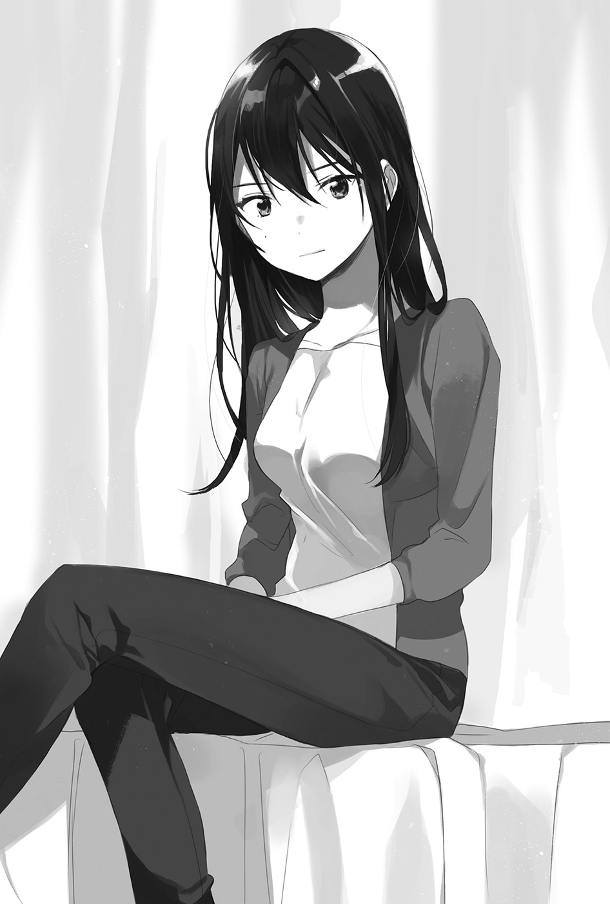聪明伶俐的脸庞，在咀嚼药锭时不断变形。
我的目光禁不住地被她鼓起的脸颊吸引。
「只是？」
她追问道。我有点难为情地脱口而出。
「我觉得你很漂亮。」
她瞪大双眼。暂时停住咀嚼的动作，缓缓合上眼皮。
「你还真诚实耶。」
「不装客气谦虚一下，坦然接受这种赞美的你也很诚实不是吗？」
「觉得我很漂亮的人不是你吗？既然如此，我没有理由否认你的个人意见呀。」
她说着，自满似地扬起嘴角，最后不禁笑了出来。
藏不住的可爱，使我不禁目眩神迷。
「仔细想想，这算不上回答呢。」
她以老师般的态度责备道。不是大学老师，我联想到的是高中老师。
也许是因为大学的教室太宽敞了，所以老师也给人一股距离感吧。
「说的也是。唔——不对，唔嗯……就算叫我要求谢礼……」
不管要求什么，都会被当成别有居心吧。这使我难以回答。
「你国语成绩是零分吗？」
「幸好现代国语不是我的必修……是说，咦，你要走了？」
她把侧背包挂在肩上，站了起来。单手拿着药瓶从我身边走过，接着得意地笑了起来。冷不防出现的表情，使我吃了一惊，僵住了。
「下次让我教你国语吧。」
作为答谢。言下之意似乎是这样。
下次，有下次吗？我觉得自己因为那句话而有些飞扬。
她得意地微笑着，咬碎营养锭。
这就是，我和她相遇的过程。
假如与妹妹的相遇是一切的开始，那么这就是第二个相遇。我心想。
据说人类无法一个人生活。
那么，我该和谁一起活下去呢？
总觉得她说不定能告诉我答案。当时，我是如此认为的。
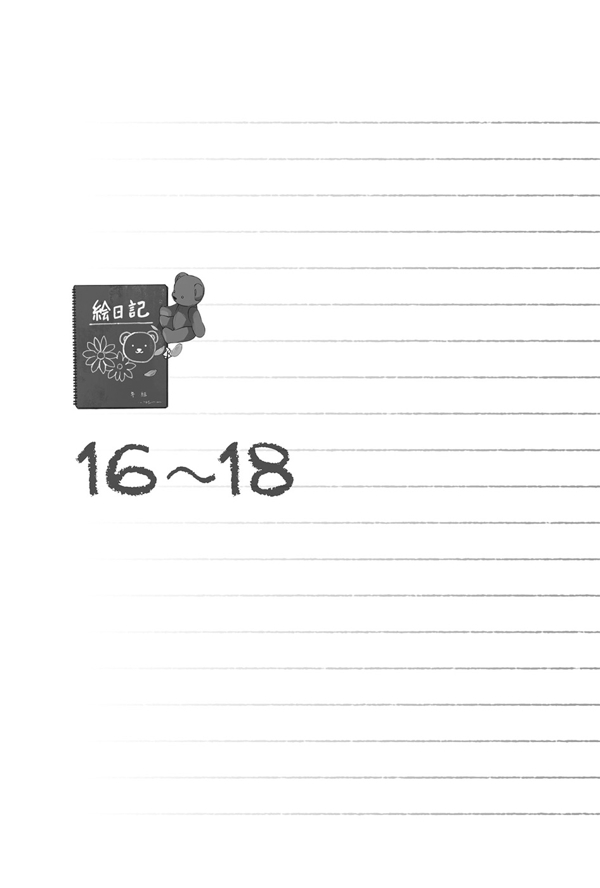所谓的爱，究竟是什么呢？我经常思考这个问题。
「是什么呢？」
「就算你问我，我也不知道要怎么回答呀。」
坐在我对面，正咔咔咔地喀着药锭……咬碎营养锭的她移开目光，说道。
我们正坐在大学设置的露天遮阳伞底下喝茶。我一面听着她咬碎营养锭的声音，一面问她与爱有关的问题。如果在平时，我一定会觉得问这种问题根本莫名其妙，可是在暖洋洋的春风里，就有种可以糊弄过去的感觉。安宁的日常能够容许大部分的事物，我想所谓的天气真好，就是指这种宽容吧。
坐在我身边的她，就是那个她，因腹痛而结缘的她。两人的学院不同，住处间的距离也很遥远，但也许是因为我们都觉得，在那次基于善意的萍水相逢之后，从此不再有交集很可惜，所以才会借着念同一所大学的这个奇迹般的共通点，继续有所联系吧。认识她是大一时的事，大二时，她成为不同意义的「她」。不过我们从来没有正式说过「喜欢」，也没有明确地做过「从今天起正式交往」之类的约定就是了。
和她发展感情的过程改日再来回想，重点是现在。
「可是，不问你的话好像就不会有答案啊。」
我硬是拉回被打发掉的话题，她一面倾倒着装着营养锭的药瓶，一面说道：
「你也真是厚脸皮，说得出这么可耻的话耶。」
「我一直都这个样子，不是吗？」
不过有时她也会正经地回答我问题。而我，因为期待听到她的回答，所以总是向她发问。
只要和什么人在一起，就能得到回答。我纯粹因这个事实而感到欢喜。
「差不多该走了。」
见两人的杯子都空了，我提议道。「也好。」她点头同意。
将垃圾收拾完毕后，我们踏上大学正门口的坡路。不是要去上课，而是前往我的房间。离她下一堂课还有不少时间，可是回家又嫌太远，因此改成到我房间打发时间。我的话，由于今天已经没课了，刚好可以配合她。
乘风下坡的脚步轻盈，没有任何停滞感。
「有种顺风扬帆的感觉呢。」
「你今天心情很好嘛。」
也是有这种时候呀，我边笑边走下坡。
我们一起回到我住的公寓。这是她第三次，还是第四次来我房间吧。由于她只有心情好时才会答应来我房间，所以我现在的心情当然也很好。这就是良性循环吧，我心想。
哇哈哈——呼呵呵——由于她不陪我一起耍白痴，结果只有我一个人在自嗨。
来到我房间后，她并不坐下，反而凝视着房间中的某一点。
「唔嗯——……」
她将手指放在下巴，盯着墙边的书柜直瞧。我脸上挂着笑容，心里暗暗焦急，那里是我最不希望她注意到的地方。
「怎么了？有想看的书吗？」
「不是。之前来的时候，我就很在意这个了。」
她指着书柜一角的某样物品说道。呜噫噫——我在心里惨叫着。
「只是辞典啊。GENIUS出的嘛。」
「这区全是英文书，夹着一本德文教材，感觉很奇怪。」
呜！果然不该贪小便宜买德语辞典的。
反正拿到学分后就没用了，想节省教材费的小气行径反而造成了恨事。
「你在这方面明明还满神经质的……」
「啊！」
她将指尖放在辞典的纸盒顶端，朝自己身体方向一勾。虽然她没有勾得很用力，但由于盒子里装的并非辞典那类沉甸甸的厚书，因此轻易地就被她勾落了。纸盒垂直旋转着掉在地板上，收在其中的光碟散落一地。
我的三魂七魄也跟着飞散了。
注视着不论怎么看都不是辞典光碟该有的DVD外壳，她的嘴唇抽搐了起来。
「很GENIUS的内容嘛。」
「……是。」
「这是高中生藏东西的方法吧。」
她苦笑道，但是似乎没有特别厌恶。
「嗯啊……男人都是这样子的嘛，不管到几岁都没有成长。」
虽然她看起来对这种东西的态度似乎相对宽容，不过，在发现「标题」之后，是否还能这么豁达呢？
得在她注意到标题之前把东西收起来才行。
「话说回来，男生一个人住，会有这种东西也是当然的吧。」
「嗯啊，谢谢你这么宽宏大量。」
我快手快脚地收拾着，可是——
「嗯？嗯嗯？嗯嗯嗯嗯？」
她往地上一趴，介入我和光碟之间，在极近距离眈眈注视起DVD壳。还有什么问题吗？我心惊胆颤地想着，她维持趴着的姿势抬起头，自下而上地瞪着我：
「有个部分我很在意，可以发问吗？」
「如果是我回答得出来的事。」
我下意识地直眨眼睛。她指着DVD壳的侧边部分。求求你别这样。
「《妹妹》1。」
「是。」
她又指着另一块DVD壳的侧边。
「《妹妹》2。」
「是……」
她继续指着第三块以下略。
「《妹妹》3。」
「…………………………………………」
我跪坐在地上。
「基于以上共通点，我想问一件事。」
不用听也猜得到她想问什么。她抽搐着脸颊，问道：
「你是不是没有妹妹？」
「呃……」
就算能预料，但亲耳听到时，仍然是很可怕的问题。
我知道能够度过眼前危机的最佳答案。
但是，要骗她说我没有妹妹吗？
开什么玩笑。光是想象，我就觉得快吐了。
那种谎话，我说不出来。
就算那是最佳答案。
「有啊。我有一个妹妹。」
个子小小的，很可爱的妹妹。
她的脸唰地变得面无血色，我赶紧辩解道：
「不过这种东西和现实是两码子事哦！」
只是在依喜好选片子时，刚好和现实重叠了而已。
我可没有一天二十四小时都在想妹妹的事哦。应该没有。
「骗人的吧？」
「你的嘴一直在发抖耶！」
「因为缺乏养分吧！」
嗯！她拿出才刚收起来的药瓶，把营养锭往嘴里猛塞。
「……要喝水吗？」
「唔瓮呃。」
她口齿不清地拒绝，一口气把卡在喉咙的锭剂吞咽下去。
成功吞下营养锭之后，她转头看着我。
总觉得她眼睛下方好像长出了原本没有的黑眼圈，是我的错觉吗？
「对不起，我的营养锭没了，所以今天要先回去了。」
「欸？」
从没听过这种回去的理由。
「啊啊，伤脑筋……」
她空泛地喃喃自语着，可是脚下动作却相当迅速，三步就来到玄关，双脚往鞋子里一套，直接跑出房门。目送嗑了太多营养锭导致精力过盛的她离开后，我茫然如不倒翁般旋转着身体，最后躺在地上。从这一刻起，我又开始怀疑自己是不是把什么不正常的事误以为是正常情况了。
而且，自从那天之后，她就再也不肯来我房间了。
是我的错觉吗？
是的话就好了。
我觉得，好像有人这样拍我的肩膀。
虽然也曾发生过那样的事，但我和她的关系大致上还是不错的。
至少我是这么认为的。
感觉起来，我的大学生活几乎被她填满。
自从认识她后，为了引起她的注意，第一年的时间转眼就过去了。与她熟识之后，为了进一步加深感情，又花了一年的时间。第三年，我旁敲侧击地想完全攻陷她，却以失败收场。没有什么比倏忽即逝这个词更适合形容我的大学生活了。
只要和什么人在一起，时间就会过得特别快。也许我意外的是个害怕寂寞的人吧。
明白这个事实，是在我大四的春天时。
是漫长的春假即将结束，非得正式踏入名为求职活动的急流中不可的时期。
那天早上，门铃响了起来。
是新搬来的邻居过来打招呼吗？我心想。当时正好是新房客频繁住进来的季节。
所以我稀松平常地、毫无警觉心地打开门，接着，被始料未及的突袭惊得手足无措。
就结论而言，那确实是新来的房客。
有问题的地方在于，新房客住进的是「我的房间」。
扛着大大的行李，因春阳而汗水淋漓的身影极为耀眼、炫目。
「哥哥——我回来了。」
毫无预警地。
自己一个人的话，连名古屋都去不了的妹妹，一个人来到我住的公寓房间门口。
事先没有任何通知。所谓的攻其无备、出其不意，绝对就是这种情况。
看着妹妹坐在房间里，我有种连地板都旋转起来的错觉，使我焦虑难安。妹妹在这里。坐在我的房间里。
被三、四个行李包围，她整个人看起来像是快被行李堆埋住似的。
穿着连帽衫的身影，与过去的影像重叠在一起。
「哥哥——你生气了？」
见我沉默不语，妹妹怯怯地缩着颈子问道。生气……不，怎么可能呢。
我只是对突如其来的重逢感到迷惘罢了。
「没有……不过你也该先说一声，让我做好准备，可以笑着开门迎接你啊。」
「咦？妈妈说有通知过你了耶？」
「妈妈？不对啊，她完全没……」
话说到一半，我想到一件事，把后半段的话吞了回去。
「等等……大概五天前好像……」
母亲难得主动打电话给我。她和我聊了一些无关紧要的事后说「我会送些东西过去」。由于母亲的口吻相当平淡无奇，所以我也没认真把那些话听进去，没想到，呃？送来的是妹妹？我以眼神发出疑问。
是说，用送的，不就等于无视我的个人意志不是吗？
虽然这么说，但就算向母亲抗议，很明显地也只会被她四两拨千斤地打发掉，还不如干脆面对已经发生的现实。
妹妹，人在这里。三年来从没见过面的妹妹，以及庞大的行李，占据了我的房间。
「这些行李……看起来不像只是来住几天而已？」
「嗯。我要住在这边，从这里上大学。」
「大学？大学生？你吗？」
我眼睛瞪得极大，反射性地立起单膝想仰天大叫。从年纪算来，这是理所当然的事，可是，我还是惊讶到无法言语。
「大学，是指那间吗？」
我朝附近的拉面店一指，大学也座落在同样的方位上。「是啊。」妹妹点头。
「和哥哥——同一间学校哦。」
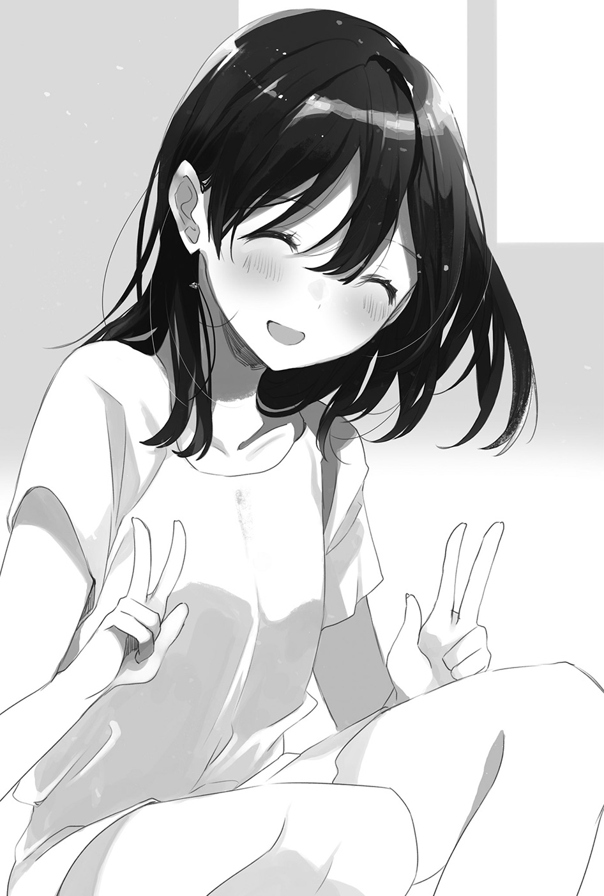耶——她双手软绵绵地比出V字。看着她那模样，我全身无力地坐回地上。
再一年，我就要毕业了，之后的三年你要怎么办啊？不对，这么说来我曾和母亲讨论过找工作的事。你要在老家这边还是学校那边找工作？我那时的回答是，要在学校这边找。
……是这么回事吗？直到妹妹大学毕业为止，都要让她和我一起住在这里吗？
我看着妹妹，她的手仍然维持着V字，而且还附加了极为灿烂的笑容。看着那模样，我恍然大悟——
妹妹是为了和我一起生活，才会报考这所大学的。
……如果真的是这样。
我该对离家到外地求学的决定感到后悔吗？
到外地念书后，我找尽理由不回老家，已经快要忘记面对妹妹时该做出什么样的表情了。而且，虽然我是主动离家的，不过一旦意识到这件事，萌生的感情却与罪恶感极为相似。再加上只要想象起当初离家后，留在家里的妹妹可能会有什么样的表情，就会变得裹足不前，愈来愈不想回老家，仿佛在害怕妹妹一样……不，不对，不是这样的。
和妹妹在一起时，相当于我的本质般的东西就会被暴露出来。而我，害怕那种情况。
想逃离原点。可是到头来，我还是回到原点了吗？
「为什么哥哥——好像很心浮气躁呢？」
「不是啊，因为你……」
我把她从上到下打量了一遍。在看到她那双纤细的赤脚时，更加确定了自己的想法。
「从高中，不对，从国中到现在，外表都没有变过嘛。」
幼稚的五官、微卷的柔软发丝、圆溜溜的大眼、感觉不太可靠的轮廓。
假如穿上国中制服，应该还是能成功骗人吧。就算去参加国中入学典礼应该也没问题，反而是已经上大学的说法比较扯。我以怀疑的眼神看着妹妹，「真过分。」妹妹鼓起脸颊说道。
这表情，牵动了我的乡愁。
「你真的是大学生？没有骗人？」
「等我一下。」
妹妹转身在行李中翻翻找找，「你看——！」她从行李侧边口袋拿出一张皱巴巴的纸片，嗖地伸直双手，将那张纸展示在我面前。是大学的入学通知单。
「哦哦，好怀念啊，我入学时也有拿到这玩意儿。」
妹妹准备得极为周全，连系所也和我相同。
「入学典礼的会场是……和我那时候一样嘛。老爸和老妈会来吗？」
「他们说，叫哥哥——带我去就好。」
「欸？我是监护人？」
妹妹点头。这样真的可以吗？虽然我从以前起就一直做着类似妹妹监护人的事没错，可是现在……现在又是如何呢？又是如何呢？我连续自问了两次。
仿佛连当年的空气也被搬来这里似的，可是，这样真的好吗？
是说，这样又有什么问题呢？
「哥哥——？」
「没事……」
我移开目光想蒙混过去，可惜已经熟悉到生腻的房间里没有值得注视的事物，不得已，视线只好重新回到妹妹身上。
我感受到与她成为国中生时不同意义的冲击。应该说，不需要穿制服后，我甚至有种她时光倒流成为小学生的错觉。而且连我自己，都差点被拖回当年。
也许是因此，才会让我心浮气躁吧。
「你已经会自己搭电车了啊？」
应该不是徒步走来的吧。教她搭电车的人是谁呢？或者是自己学会的呢？
话说回来，那是需要特地学的事吗？我轻笑了起来。
「有变得像大学生了吗？」
妹妹搔首弄姿地摆出雕像般的动作，具体来说，是把手放在后脑勺，露出腋下的部分。
我把在学校见过的女大学生和眼前的妹妹交互比较。
「嘻嘿。」天差地远到害我发出奇怪的笑声。
「什么啦——」妹妹再次鼓起腮帮子，一面噘嘴，一面开始整理行李。
真的想住下来啊——我心道，同时意识到「她」的存在。要是被她知道我和妹妹同居，不对，比起这个，要是被妹妹知道她的事……比起这个？这算「比起这个」吗？
冷不防地发现自己心中的优先顺序，使我备感困惑。
黑色的线头自脑中窜出，就算用力抓头，还是黏得死紧，拔不下来。
「这是怎么回事……」
暗地里进行逃避的高中时光、分离的三年。这些过往影像有如照片，与现在重叠在一起。着急与焦躁在胸口窜动不已。假如是真正的照片，还可以借着扔掉它们来发泄情绪，可是这些影像全是脑内幻影，只能眼睁睁地看着它们在眼前晃动却无可奈何。
总之，得找机会把藏在辞典里的那些东西丢掉，或者转让给别人才行。
我一边想着，一边以目光追随忙碌地整理行李的妹妹。她的第一件事就是拿出蓝色手机与充电器，把充电器插在插座上充电。是国中时父母买给她的那只手机。
「你很爱惜物品嘛。」
「因为这是我朋友呀。」
不算回答的回答。但我连同妹妹的笑容一起接纳了。
如此一来，肩膀上紧绷的力气也跟着松懈下来。原本前弯的背脊也总算有办法挺直，重新坐正。
困惑，是有的。忽然上门，而且有过去，有疙瘩。
今后会变成什么样子呢？我对未来产生忧虑。
另一方面，妹妹光是待在这房间里，就让我在不知不觉间感到安宁。
假如套用不久之前看过的电影中的对白，就是「能够感受到温暖与安详」。
如果说，「她」是从外部吸入的清新空气，那么妹妹就是原初中更加深沉的什么。
有种沉睡在内心深处的情感取回了热量，因此撼动根源般的感觉。
假如我大吼大叫或暴跳如雷，也许妹妹会就此离开我房间吧。
可是我做不出那样的事，我的独居生活也因此宣告结束。从今天起，至少有四年的时间，妹妹会住在这个房间里，和我一起生活。尽管事出突然，而且似乎会因此抛弃很多事物，不过人生就是这么一回事吧。
只要用力一拍双颊，喝斥彷徨的心，大部分的事就能坦然接受。
好了，接下来是令人惊讶的事第一名。
妹妹她会做菜。正确来说，是变得会做菜了。
她现在正在准备晚餐。
「为了一个人住，所以我很努力学做菜哦。」
呵呵呵，她得意地笑着。不是一个人住，还有我在耶。我举手抗议，但是被她无视。
「是和妈妈学的吗？」
「是啊——」
眺望着妹妹脚穿小熊拖鞋站在流理台前忙碌的模样，我有股冲动，想摸摸她的头，称赞她做得好棒，好了不起。与其说是妹妹，还不如说更像看到女儿或孙女长大般的心境。
「真是吓了我一跳。」
「我也被这房间整齐的程度吓到了。没想到哥哥——还挺爱干净的嘛。」
「嗯，是啊。」
是为了随时都能邀她来房间，所以才勤于打扫的。但是这个动机要保密。
「需要帮忙吗？」
「那，帮我把盘子和筷子放在桌上吧。」
被妹妹当成小孩打发了。我的确不擅长做菜，而且流理台很小，同时站两个人会嫌太挤，很没效率。虽然心里明白，可是实际上被这样对待时，还是会觉得很不是滋味。看来身为兄长的意识已经在我心中根深蒂固了，就算三年来没克尽兄长职责，这种意识仍然很强烈，没有枯萎。
住在老家时的那种理所当然，仿佛只是昨天的事，无缝接轨地延伸到今天。
不过，中间确实有一大段空白的时光。
穿越过那段时光，只为了从当年直接与今日做衔接。
为了在大学时一个人住，吗？为了那种事，特地花费高中时光学习料理吗？
为了再次与我同住。
「…………………………………………」
基于焦躁感，轻率地离家到外地生活。对这件事萌生出的，与罪恶感极为相近的感情。
该对妹妹道歉吗？不过就算道歉，又能如何呢？
道歉这种事，与其说是在觉得自己对不起对方时，还不如说是在希望自己被对方谅解时，才会想做。
难道说，我希望得到谅解吗？不是被妹妹谅解，而是被自己谅解。
「哥哥——筷子。」
「哦，好。」
对不起我在发呆。我急急忙忙地摆放餐具，不再闷头烦恼那些事情。
妹妹以平底锅炒出来的韭菜与豆芽菜被摆在正中央，周围放着各种料理。白饭是微波后就能食用的速食白饭，其他料理看起来也都是冷冻食品。但是——
看着正冒出蒸腾热气的那些料理，我不禁愣住了。
「哥哥——？」
坐在我对面的妹妹讶异地看着发呆的我。
「唔，没有啦……」
虽然不到感动的程度，但胸中还是有股难以名状的感情在翻腾。
我在分不清天南地北的情况下双手合十：
「我开动了。」
「请用请用——」
尽量吃尽量吃。妹妹摆手说道。
是在学母亲的动作吗？我笑了起来，拿起筷子。
妹妹并不拿起筷子，而是观察着我的反应。
我咬了一口妹妹炒的菜，咀嚼起来。哦？怀念的滋味让我不禁咂嘴赞道：
「有家的味道。」
「因为今天的食材都是从家里带来的嘛。妈妈让我带了一大堆吃的过来。」
我探头看向放在右侧的行李。
「哦——有有有。」
想当年，我刚搬到这里时，母亲也常寄各式各样的补给品给我。还以为她现在已经不想寄东西给我了，没想到是干脆把妹妹直接空投过来。真是输给她的变通自在。
「之后得去买菜才行呢。那个样子，连早餐都做不出来哦。」
妹妹看了一眼外观与内在同样寒酸的冰箱，苦着脸说道。冰箱里放了啥东西？我抓头回想，但是完全想不起来。总之就是，由于冰箱的内容太过贫乏，因此妹妹没有发挥厨艺的空间。
「……是说，你连早餐都打算做吗？」
「请问大爷有什么不满吗？」
「没有，完全没有。我只有满满的感恩。不过——」
我咀嚼着豆芽菜，流出的汁水渗入牙龈深处，总觉得自己似乎又差一点被那波流带走了。
「感觉起来真不可思议……但是很好吃。」
「好忙碌的感想啊。」
的确是。我深深点头，把豆芽菜吞下肚。
饭后，我和妹妹一起收拾餐具。
趁着妹妹洗澡时，我帮她铺好床被。她连床被都自己带来了。两人分的床被几乎占满了整个房间，就算想再多塞一个人也没办法。
「…………………………………………」
我有女朋友了哦。要是这么说，妹妹会有什么反应呢？
「是吗——」是会像这样轻轻带过，或是马上离开这里呢？不对。我微微摇头。
难以预测结果。但是可以想见，不论剧情如何发展，肯定无法走到大团圆结局。一定会有人受伤，一定会有人离开我身边。妹妹和她不可能同时存在。为什么我能如此确信？我觉得，这问题的答案应该藏在我那个「所谓的爱，究竟是什么呢？」的疑问里。
与她共度的时光。妹妹为了搬来这里而花费的时间。
说来离奇，两者同样都是三年。
「…………………………………………」
原本空旷的书柜被妹妹带来的书塞满。有些是漫画，但大多是小说。唯有这个部分，可以看出一点点大学生的样子。
「……啊，这么说来……」
因为事出突然，直到现在我才发现忘了回应。
虽然那是很奇怪的问候语，不过我想，一定是指精神方面的情境吧。
等妹妹洗完澡后，要记得对她说刚才忘了说的话。
——欢迎回家。
在校生担任新生入学典礼时的监护人，应该是很稀罕的情况吧。至少，同席的监护人里找不到和我一样年轻的脸孔。只有我一个人特别醒目。
不过，在新生里特别娇小的妹妹也是同样的情况。不只在我印象中，与其他新生实际坐在一起时，她很明显小了其他人一截。尽管穿着笔挺的套装，正襟危坐，但还是有种来错地方的感觉。顺带一提，早上妹妹问我对那身打扮的感想时，我诚实地回答「一点也不适合」，让她很不开心。
昨天，妹妹来到我房间，而且过了一夜。
良好的睡相、起床时呆愣的表情、换衣时的习惯……所有我熟悉的一切，全都有如真空包装保存，放到今日似地，接连展现在我眼前。毫无变化到让人想问到底怎么回事？高中时代到底是怎么过的？虽然有想到这问题，不过应该什么事都没发生吧，就算不问，我也知道。
没有任何改变的妹妹。
而我，也确实为此感到安心。
入学典礼结束，接着要举行的是说明会。由于离说明会开始还有不少时间，所以我带着妹妹到大学附近的餐厅吃饭。大学附近有许多商店，其中有不少是以学生为主要对象的平价店家。妹妹食量很小，当然不可能带她去以大分量为卖点的餐厅，所以我打出安全牌，前往大学正门口对面的咖啡厅。这间店的料理颇为美味，可是出餐的动作非常慢，配上妹妹吃饭所需的时间，刚好可以把等待的时间打发掉。
「哦哦，好贵啊。」
妹妹把菜单从右到左看了一遍，惊呼道。店员朝我们这边瞄了一眼。
「和早餐套餐四百圆的店差好多哦。」
老家附近的店都是那种价位，当地特色就是那样。
我和妹妹都点了当日特餐，等着服务生上菜。店里没有其他客人。性急的学生族和忙碌的上班族不会选择来这里吃饭，就算再怎么委婉，也难以称得上生意兴隆。但是很神奇地，这间店一直没倒，店里总是有一股通风的感觉。
我眺望着充满岁月痕迹的白色墙壁，察觉妹妹的视线落在我肩膀上。
「怎么了？」
「哥哥——和我都穿得这么正式，感觉起来好像变成熟了呢——」
会意识到这种事，就表示那个人不够成熟啊。我不禁苦笑起来。
「啊！」妹妹的嘴角下垂成ㄟ字型。
「哥哥——想说我不成熟对不对？真伤心。」
「你不要未审先判啦。」
不过全说中了就是。
我们聊着天，这次果然也结结实实地等了好一段时间，服务生才终于上菜。
我三两下就把料理吃完，开始欣赏妹妹吃饭的模样。
「你吃饭速度还是一样慢呢。」
不只怕烫，而且动作还很缓慢。虽然说现在时间够多所以不要紧，可是——
她这个样子，真的有办法在忙碌的现代社会生存吗？我实在很担心。
「哥哥——你才是，要细嚼慢咽，对身体才好啦。」
「说的也是——」
不过我已经没食物可以细嚼慢咽了。我欣赏了一会儿妹妹的用餐模样后，提醒道：
「小心酱汁沾到衣服。」
「哥哥——你以为我几岁了啊？别老是把我当成小孩子啦。」
那句话似乎让妹妹相当怏怏不平。看来不能轻易回答五、六岁。
不过事实是，她衣服上已经有两处沾到酱汁了。还是暂时别说，等回去之后再告诉她吧。
对于与妹妹同住的事，我确实仍然相当迷惘，但同时又对于如此没有生活能力的妹妹离不开我的事实感到安心。身为兄长，这样的我是不是有什么问题呢？
在那之后，我帮喊饱的妹妹解决没吃完的热狗。
虽然我的肚子也因此变得有点撑，不过悠闲地享用午餐的感觉也不赖。我们又在店里待了一阵子，最后带着开始有点想睡的妹妹离开咖啡厅。再来就是在学校里打发时间了，我一边想着，一边踏上眼前长长的上坡路。
「好久没来学校了。」
听我这么说，妹妹双眼圆睁地看着我。
「哥哥——你是坏学生？」
「不是。因为之前在放春假啦。」
「哦——」
「还有就是因为已经大四了，该修的学分都修完了，所以不用上课。」
「哦哦——」
后者有什么好惊讶的吗？不过我想妹妹自己八成也不知道在惊讶些什么。
我们爬着斜坡向上走。我完全没想过会有这么一天。仔细想想，由于年龄的关系，从小学之后我们就没有同时念同一间学校过了。而小学时代离现在，已经将近十年了。
十年……十年？所谓的十年，不是很长的一段时间吗？
可是我却完全感受不到那漫长与沉重，以及真实感。
今后，我也会继续像这样虚度光阴，糊里糊涂地过完一生吗？想到这里，我觉得有点可怕。
「哦哦——是露天咖啡座耶——」
在校园里走了一会儿，见到右手边的遮阳伞林与吵闹的学生们，妹妹兴奋了起来。
你从刚才起就对各种事物惊讶个不停耶？话说回来，我第一次听到有人把这些桌椅称为露天咖啡座。
那是位在中央塔状建筑旁，地势较低的场所。校方在有许多建筑物阴影的该处设置了一些遮阳伞与桌椅，可以把在建筑物中购买的饮料食物带到这里吃。与她见面时，我们也经常约在这里。有时还会有音乐社团在这里大声表演，炒热气氛。这个时节，他们应该为了拉新生进社团而增加表演的次数吧。我在走下短短的阶梯前远远地眺望着那区块……这么说来，的确是露天的，又是咖啡座，为什么从来没人以露天咖啡座来称呼这里呢？我对学校的谜团感到不解。
「还有一些时间，要不要喝点什么？」
「好啊。哥哥——要请客吗？」
「嗯，就当成你考上大学的奖励好了。」
抢在对方要求昂贵的礼物前，用便宜的东西摆平贺礼。
妹妹点了乌龙茶和杯装冰淇淋。不久之前不是还在嚷着已经吃不下饭了不是吗？
买好饮料走出建筑物，眼前刚好出现空位。似乎是因为没有阴影可以躲避阳光，所以没人想坐，不过我们无所谓地坐下。妹妹擦了擦椅子的边缘，靠着前方浅浅地坐下。
我一面看着坐下来后更显袖珍的妹妹，一面轻抚着被阳光照射的桌面。
阳光很暖，但是山丘上的风有点冷。
宛如春季自后方追赶着疾奔而去的冬日留下的飞沫似的。
先不管这个。妹妹拿着杯装冰淇淋东张西望，一副毛毛躁躁的样子。
「怎么了？」
「周围的人看起来全都很像大人呢。」
和你相比，所有人都像大人啊。我硬是抿紧想说出真心话而蠢蠢欲动的嘴唇。
「我当年也是这样，不过很快就会习惯了。」
听了我的场面话，「说的也是。」妹妹放心地吃起冰淇淋。仿佛被冰淇淋的甘甜浸透，妹妹的脸也跟着变得甜滋滋的。我看着那样的她，心境转为祥和。
原本被时间之流卷走造成的焦虑，如今有如发芽生根似地稳定、和缓了下来。
「哥哥——也要吃吗？很好吃哦。」
「好啊，那就分我一口吧。」
妹妹舀起一口分量的冰淇淋，「来。」将手凑到我嘴边。我没多想地张口含住汤匙，吞下冰淇淋。甜甜的，还不错吃。
这里不是老家，也不是我租的公寓——正当我吞下冰淇淋时，我陡然惊觉这件事。
就连和她在一起时，我也从没在外头做过这种事。要是被认识的人看到……想象到这里，我不禁冷汗直流。不是单纯的想象，而且有种一定会发展成事实的预感。
「嗯啊嗯啊。」
妹妹似乎毫不在乎周遭的眼光，继续挖掘冰淇淋。
动作与神态都带着稚气，到底几岁了？让人不禁这么想。感觉起来还是得写绘图日记的年纪。这样的小女孩居然和自己是同一所大学的学生，周围的人会相信吗？已经超过青涩，而是稚嫩了。不过，就算是这样的妹妹，总有一天也会和四周座位上那些家伙差不多的男人翻云覆雨吗？
「呜恶……」
种种感情搅拌在一起，使我产生排斥反应。不行，这是怎么回事？
光是想象那种场面，就有一种脸皮被剥下来般的丧失感。还好吗我？
觉得自己的身体有如枯柴，无力又不可靠。
特地保持距离了三年，似乎反而让症状更加恶化了。
「…………………………………………」
这算保护过度吗？但是，我还是不能不说。
「你可别被奇怪的男人拐走哦。」
我用尽全身力气装出平淡的样子告诫道。正以吸管搅动冰块的妹妹抬起头。
「我？」
「是啊。」
除了你还有谁。妹妹圆睁着双眼，缓缓点头。
「嗯……」
啊，这是根本不知道我在说什么的点头方式。这样不行。我追加警告道：
「听好了，大学这种地方啊，可是住了一堆眼中只有钱和女人的败类的魔窟哦。」
我加油添醋地道。不过一般来说，男人确实喜欢金钱也喜欢女人，所以我不算说错话。
可是不说成这样，我家的妹妹是听不懂的。
「哥哥——也是那样吗？」
被戳到痛处。但假如否认，这话听起来就没有说服力了。
说起来我自己也有……我脑中浮起她的脸庞。花了一点时间，才想起她这个人。
为什么呢？
「是也有一点啦。反正你不要随便让男人接近，也不可以随便答应男人的要求哦。」
我敷衍过去，再次叮咛道。其实我还想说明得更具体更详尽的，不过剩下的部分等回去之后再慢慢说吧，否则就不用参加说明会了。
另一头的妹妹则是露出灵光一闪的表情。
「要是真的那么担心，哥哥——可以来接送我上下学啊。」
真是个好主意。我差点立刻点头答应。可是，不行不行。我摇头。
我还得投履历找工作，怎么能把时间全花在妹妹身上呢？
那不就变成纯粹的傻哥哥了吗？
「做不到。」
「欸——……欸——」
连续唉叹两次。妹妹自下而上地凝视着我，双眼仿佛想诉说什么似地。
那构图，与找我帮忙写绘图日记时的身影重叠在一起。啊，我想起来了。
我家的妹妹，基本上就是喜欢赖着我做所有的事。
「……只有放学时哦。」
我让步道。妹妹喀啦喀啦地搅拌着冰块，眉开眼笑：
「那就万事拜托了！」
「……嗯。」
光是这样就足以让我睁只眼闭只眼无视各种问题。我以手抚额，对自己的反应感到无奈。
难道说——
我真的对妹妹保护过度了？
当天傍晚，我照着约定去接听完说明会的妹妹。
我在坡路下方挥手，妹妹一见到我，立刻抱着说明会的资料跑来。
别跑到跌倒滚下来啊，我内心紧张不已。并非我杞人忧天，是真的发生过那种事。幸好妹妹安然无事地来到我面前。不过还是没必要用跑的不是吗？
「等很久了？」
「还好。」
我事先问过说明会大概什么时候结束，所以只等了一下子而已。毕竟妹妹没有手机，无法即时联络。很久以前办的那只手机，因为电池太老旧，不一直接着充电器充电的话，撑不到几分钟就会没电。也就是说和固定电话没什么两样。所以做哥哥的我才会这么担心啊。
「是说，你没睡着吧？」
我半开玩笑地问道，妹妹表情严肃了一瞬，又立刻笑了起来。
「好像要做什么选课的事才行，不过我听不懂要怎么做。」
妹妹开朗地说道。我傻眼道：
「听不懂的话就要问啊。」
「嗯，我正在问。」
现在进行式？妹妹笑咪咪地抬头看着我。
「要教我哦，哥哥——」
「……好啦好啦。」
还不如由我来帮她弄更快。我甚至出现这种想法。
回到公寓后，我等着妹妹准备晚餐。独居时期烦恼着要去哪里吃晚餐的时间变成了等待晚餐做好的时间，应该是很令人艳羡的情况吧。虽然很容易被忽略，不过这段发呆等待的时光，是一个人生活时不可能会有的时间。
不，我不是一个人。我还有她不是吗？
为什么脑中像是起了云雾似地，差点把她给忘了呢？
「今天的晚餐是炒乌龙面哦——」
「太棒了——」
妹妹神气扬扬地端了两个盘子过来，上面蒸腾着美妙的热气。
就在我接过盘子时，仿佛看准了时机，一道声音响了起来。
嘟噜噜噜，那是让我手部肌肉为之一颤的电子声音。
颈部肌肉痉挛了起来。
「电话？」
「嗯，好像是……」
我伸手想拿起手机，但是当鼻尖碰到晚餐的热气后，又把手收了回去。
「算了，等吃完晚餐再说吧。」
「可以吗？」
「不然面会冷掉的。」
我有预感，这通电话无法在三言两语内结束。铃声停止后，我开始吃起乌龙面。
「这也是很怀念的味道呢。」
与母亲的炒乌龙面同样的滋味。里面放了鸡肉和青葱。
妹妹和昨天一样，前倾着身体等我的感想。
「还在觉得不可思议？」
「唔——……已经比较习惯了，所以只有觉得很好吃而已。」
「听哥哥——这样说，又觉得有点不太够呢。」妹妹露出开心的困扰表情。
……好了。
晚餐后，我拿起手机，确认打来的人是谁后，胃袋开始收缩起来。
「……我去打个电话。」
洗完碗之后，我对摊开说明会资料的妹妹说道。
「等我打完电话再跟你说明选课的事。」
「嗯……电话，不是妈妈打来的吗？」
「是学校的朋友。」
我简短地撒谎后走到门外，坐在公寓的楼梯上，按下拨号图示。
电话和预想的一样打来了，是她打来的。【录注：补缺】
电话马上就接通了。我本来还希望能有几秒调整呼吸用的缓冲时间的。
『晚安。』
「……是。」
接电话的人的声音很僵硬。预感转变为肯定，有如石头般砸向我的侧头部。
必须做出觉悟才行，我趾尖用力，踏在地板上。
『我今天听说了非常不可思议的事。』
「哦。」
『听说你带着国中嫩妹到学校里到处炫耀嗯？你这个死变态。』
即使口出偏激之词也不奇怪。电话中的声音如尖刺般扎进我耳中。
看样子，我们相处的场面是扎扎实实地被什么人给看到了。
话说回来，看在周围其他人眼中，我妹妹果然和国中生没什么两样吗？
「那是我妹妹啦，我陪她参加入学典礼和说明会。」
『……妹妹？』
「对啊。」
『欸欸欸欸欸！』
「你那是什么反应啊？」
听到是妹妹，不是应该安心吗？
『因为你，你妹妹……』
不管什么事都直言无讳的她难得地欲言又止，但是我大致上知道她想说什么。
「我以前就说过了，那种东西和现实是两码子事啊。」
虽然我如此辩解，不过我也知道听起来绝对没有说服力。虽然知道，可是——
没错！其实就是这样！附和她的话，理直气壮地如此主张，又有什么意义呢？
『你啊……』
无法化为言语的愤怒借着无言的沉默，确实地传达到我这里。
还真的有无法以语言表现的感情呢。我无视时间场合，无关紧要地对这件事起了共鸣。
『我们需要好好谈一谈。我现在就过去找你。』
从声调也能明白，她正前倾着身体准备站起来。
「等一下，现在不太……」
『怎样？』
呜噫，好恐怖。
「我妹现在在我房间。」
『啥？』
「我们以后会住在一起。」
『…………………………………………』
她的呼吸声远离了电话。
「喂？」
电话被挂断了。我等了半晌，不见重新打来的迹象，虽然很迷惘，但也只好自己打过去。
『…………………………………………』
虽然她马上就接起电话，但仍然默默无语。
「你说话啦。」
『呜哇！』
「你反应别这么夸张啦……」
我陪笑道，可是她声音里的不善之色还是没减少。
『你是怎样？比起和我，更想和妹妹住在一起是吗？』
不是那样。
「我没那么说。」
心声与说出口的话，有点像又不太像。
『然后？既然妹妹来了，为什么不约我出来一起见个面？』
「咦？不是啦，因为，因为那个……」
我狼狈得说不出话。因为没有具体的理由，所以也无法做出说明。
因为我觉得妹妹好像会因此受伤，这么说的话，她能接受吗？
也许是对我迟疑着无法回话的态度感到不满吧，她的声调潜入地底似的，变得更低了，又硬又冷。
『你啊，如果有一把菜刀，一定是让妹妹拿刀柄，让我拿刀身对不对？』
「为什么要那样？如果真有那种时候，轮流用刀子不就好了吗？」
『我才不要。』
「不然就再买一把刀子？」
『你可以分裂成两个人吗？』
举的例子与实际的解决方法出现擦撞，导至对话无法成立。但是我还是多少明白她想表达什么，该感谢她那混入了强烈感情的遣词用字吗？
「因为事情太突然了嘛。昨天她忽然出现在我房间门口，可是我事先完全没听说过这件事，所以老实说，我这边现在也是一团混乱，没时间和你联络。我们要不要暂时保持距离，冷静一下，等问题整理得差不多后再来谈？」
我提议道，企图为自己制造逃生路线。但我想这提议应该不差。假如正在气头上的她直接闯来我这里，后果究竟会如何呢？我只知道情况绝对会变得难以收拾。
对她而言，这提议似乎值得考虑。虽然她的鼻息还是很紊乱，但似乎陷入思考之中。最后，『说的也是。』她以稍微不再那么冷硬的声音同意道：
『等情况稳定一点之后，我再和你联络。』
如果稳定得下来的话。她追加道，再次挂上电话。
既然个性有点别扭的她那么说，就表示她还不打算结束和我的关系。我内心有部分的感觉是松了口气。
我凝视着手机，僵在原地好一阵子，回想她说的话，开始想象。
假如她和妹妹拿着同一把菜刀。
「……确实是那样呢。」
她的愤怒与比喻都相当中肯而正确。因为妹妹是我的家人。
可是，以家人为优先，是那么教人恶心的行为吗？
对世人而言，哥哥可以爱护妹妹到几岁为止呢？
而且话说回来，爱护妹妹还有年纪限制，这想法本身不就是歧视了吗？我在心里埋怨着，握紧手机走回房间。妹妹立刻出来迎接我。
「哥哥——欢迎回来。」
「嗯，我回来了。」
这时我才想到，她没在电话里把我骂到狗血淋头，是基于对妹妹的顾虑呢？或者是知道我太玻璃心，承受不起呢？
我坐了下来，苦思了一会儿后，搔头站了起来。
想独自抱头烦恼。这时我发现妹妹的气息，回过头。
「咦？哥哥——又要出门？」
「我去散步一下。」
想要毫无意义地度过这一夜。「那我也要一起去。」妹妹说着，跟了上来。
我停住脚步，回头看着她，又坐了回去。
「还是算了。」
正在拿外出用上衣的妹妹听了，也不把衣服收回去，钻到我面前坐下。
「哥哥——真任性。」
「要是你出事就不好了。」
即使在夜里出门，也不太可能被卷入什么事故里。出事的机率应该非常非常低。
可是，不出门的话，机率一定更低，所以还是别出门好了。
「出什么事？」
「所有发生在你身上的不好的事。全部通通不行。」
我张开双臂，止不住地继续说下去：
「我啊——」
说到这里，我有点迷惘。一方面是觉得难为情，还有就是——
一旦把接下来的话说出口，我的心应该就不会再有任何动摇。
可是，那些话至少要说个一次才行。
虽然我对你的确是保护过度没错，但那是因为——
「对我来说，世界上没有比你更重要的人，而且我想，以后应该也不可能出现比你更重要的人。」
就连对她也不曾说过的，让人觉得像花言巧语的肉麻发言。
感人至深的美好亲情。世人会如此赞美我吗？
妹妹张大了嘴，愣了半晌后开始拍手：
「哇啊，哥哥——说了好棒的话噢。」
「……好棒，吗？」
「对我来说是这样呀。」
妹妹合上原本张大的嘴，脸上笑意盈盈。嗯啊，是没错。
在那之后，直到就寝为止，妹妹的心情一直非常好。一般而言，这种年纪的妹妹听到哥哥说那种话后，会觉得恶心吗？话说回来，一般的妹妹根本不会想和哥哥挤在同一个房间里住吧。妹妹一定不愿意，哥哥应该也会觉得很困扰。
可是，我们两人都不是那种反应。正是因为两人都不排斥同住，这种情况才能成立。
一块变形的金属片无法直立，但把两块放在一起，很神奇地就能互相扶持。
我想，那样的关系是奇迹般的偶然。
没有比妹妹更重要的人。
刚才那句话没有半点虚假。
正是因此，我事到如今地对轻率离家的事感到相当后悔。
自己到底在做什么啊？
无法把支离破碎的过去与现在整理出头绪，我默默地被自己逼到走投无路。
难以呼吸。觉得问题与困难全都逆流涌上喉咙。
那种感觉持续到洗完澡、上床就寝之后。
难以成眠的我看着天花板继续思考着。脑中似乎有光线闪烁，思考停不下来。
我喜欢她。至于妹妹，假如不需要顾虑被人误解的话，我会说，我很爱我妹妹。
这两种感情应该是可以和平共存的。可是，我却对两种感情共存时的处置方式感到困扰，以至于现在觉得非常不舒服。虽然我不是不擅长打扫的人，可是，我翻过身，搔着头。
我做错了什么吗？
或者该说，那错误本身就是我的本质，只是我不愿意承认而已呢？
说起来，对异性的爱与对家人的爱，两者是可以放在一起比较的吗？不行，那是当然的。因为两者分别适用在不同的状况里，井水不犯河水，各不相干。可是我和她似乎都把这两者视为同质的问题了。感觉起来，误解和致命难题就是潜藏在这种想法中。
我看着身旁卷着被子睡觉的妹妹。她的睡相是如此安稳，软绵绵的，柔嫩的表情。
好想捏捏妹妹的脸颊啊。我单纯地这么想着，但同时又惊觉，不能把我和她之间那无声燃烧的火焰延烧到妹妹那里。
之所以有这样的想法，是为了妹妹好呢？还是为了自保？
「…………………………………………」
从刚才起就一直纠结在复杂难解的情境里，不过简单来说就是——
该以妹妹还是以她为优先？我面临的，就是这种极为没有意义的二选一问题。
把状况愈解释愈复杂，一定是为了逃避这种简单又露骨的问题吧。一般来说，不会把这两种关系的女性放在天秤两端做衡量。我想应该不会。可是我，不是所谓的「一般」。
不同种类的感情有不同的色彩。只要能分辨出那些颜色，应该就不会发生这种问题。
那就是所谓「一般」的感觉。可是——
说不定，我缺乏那种分辨感情色彩的能力吧。
我在不惊动妹妹的情况下悄悄爬出被窝，把身体挪动到墙边抱膝而坐，把手掌夹在脚掌与地板之间。我模仿着妹妹的坐姿，面对这个盘根错节在本质里的问题。
所谓的爱，究竟是什么呢？
得出答案时，我应该会伤害到什么人吧。
据说人类无法一个人生活。
那么，我该和谁一起活下去呢？
总觉得终有一天，我必须面对这个问题。
深思熟虑后，我决定用卖的，不是送人。
我在早上四点醒来，坐在被子上，双手抱胸思考了三十分钟，做出这样的结论。关于以前被她发现的那些东西的处置方式的结论。既然要与妹妹住在一起，就没有把那些东西留在家里的余地。虽然这么说，但是丢掉又很可惜，不管是哪种类型的作品，都一定有作者，我不想糟蹋作者们的心血。可是送给朋友或认识的人，基于物品的特殊性，等于送出「我的性趣是这样那样」的名片，而且收到那种名片的人应该也不会觉得多高兴吧。所以还是不让任何人知地道处理掉好了。
万一被妹妹看到那些东西，她会有什么反应呢？
尽管我觉得害怕，但同时又有点好奇。不过还是算了吧。
妹妹躺在旁边的被窝里，发出安稳的鼻息。夏天时睡到早上时会踢被子，不过这个季节的睡相还不错。她揪着垫被，缩成一团沉睡，仿佛胎儿……幼童？似的。真的是大学生吗？我不由得笑了。
是大学生了啊……接着，我又因时间的流逝而有点失落。
就算没注意到自己本身的变化，周围的情境还是会灵敏地反应给自己知道。明明直到不久之前，妹妹都还在背小学生书包。这种刻板印象让我不胜感喟。是说，就算现在妹妹背起小学生书包，看起来应该也没不会有哪里不协调吧。
我扳着手指数了起来，妹妹搬进来我这儿，已经过了四天了。说实话，被人按住后脑勺的感觉仍然没有完全消退。因为过去的三年里，我一直是一个人住在这房间里。不过像这种事，早晚还是能习惯的。
从现在起，四年吗？直到妹妹大学毕业为止，我们都会像这样一块儿生活吗？我今年就要大学毕业了，不过应该会留在这边工作吧。如果找得到工作的话。假如在遥远的将来，妹妹也在这边工作的话，我们兄妹俩会一直相依为命地住在一起吗？既微小又宏大的情境。
虽然是很久以后的事，但是我想，未来一定会理所当然地倏地来临的。
……话说回来，现在该处理的是目前的问题。
就是关于她的事。看样子她相当生气。我明明只是陪妹妹参加入学典礼，带妹妹稍微参观一下校园而已，可是每件事她似乎都非常看不顺眼。而且她八成后天就会来找我了。交往了这么久，我大致上猜得出她会给出多少冷静期。假如让她和妹妹见面，会出现什么样的对话呢？光是想象，嘴巴里似乎就充满胃酸的味道。为什么整件事，不只她们，包含我自己在内，为什么会变成这样呢？我苦恼起来。
不能让妹妹和她有任何交集。不用等到两人见面，我已经相当肯定这件事了。
而原因出在我身上，这我也承认。
想珍惜她的念头。把妹妹当宝的心情。
理所当然可以同时成立的两种想法，不知为何，成为烦恼的来源。
与其说是烦恼，还不如说是成为问题。
明明有问题，却拖拖拉拉地不好好解决，除了说是失败，还能说是什么呢？
「…………………………………………」
喀啦喀啦，似乎听得到脑袋空转的声音。
我可能，要失败了。
「哥哥——好像没有长大呢。」
早餐吃到一半，妹妹看着我的头顶说道。
「长大？」
「就是——和刚成为大学生时几乎没有变呀。」
「因为我是大学生了嘛。」
就算有可能再长高，也不是能瞬间抽高的年纪了。
「咦？成为大学生之后就不会再长大了吗？」
妹妹放下筷子，把手放在自己头顶上。哦哦，是在说这个啊，我理解她的意思了。
「可是大学里有很多很高大的人呀。」
「哦，那是因为那个啦！」
「那个是哪个？」
我两颊塞满食物，含糊地说道。因为有个体差异，我本来是想这么说的，可是又发现这样似乎暗指妹妹天生矮小，不可能变高大。有没有什么关于矮小的委婉说法呢？
「一早就有热呼呼的食物可以吃，感觉很丰盛呢。」
「在老家时不是一直都这样吗？」
「是没错，可是我一个人住在外头很久了嘛。」
我说完，妹妹把饭碗举到与眼睛齐高的位置：
「以后哥哥——就不是一个人了哦。」
「……说的也是。」
饭菜的热气在我俩之间蒸腾。
与冬季呼出的白雾相似，但很温暖，不让人觉得厌恶。
「然后，那个到底是哪个？」
争取时间的战术告终，我低着头，假装自己正专心吃饭，做出结论：
「要是能长大就太好了呢。」
「是啊。」
解决了。这餐，妹妹的食量比平常稍微多了一点点。
吃完早餐，收拾好餐具与床被之后，我在门口等妹妹做好出门的准备。
……虽然说只有一个房间，但是二八年华的妹妹在我面前大大方方地换衣服，还是很有事吧。别说脱到只剩内衣了，连内衣都脱下来了。这行为根本和小学时一模一样嘛。但假如我说到门外走廊等她，又可能让妹妹意识到奇怪的事，失去发言机会的我只好一直在房间里待到现在。兄妹就是这么一回事吧。我心想。不对，真的是这样吗？
我瞄了一眼藏起来的物品，胸中感情复杂。
「唔。」
正在穿袜子的妹妹察觉我的视线，抬起头，不知在想什么地只穿着一只袜子站了起来，将手分别放在头顶与腰侧。
「嗯呼～～」
口中发出似是而非的状声词，拧转腰身。
与其说是扭转，还不如说是拧转。
是发现我在看自己，所以故意搔首弄姿吗？
但我只觉得像是宠物犬突然蹦蹦跳跳起来而已。
「……快把袜子穿好。」
「是。」
妹妹急急忙忙地回去穿戴衣物。我则是把拳头抵在腰侧，用力忍笑。
发生过那种事之后，我拖着不协调，仿佛快散开似的身体，和妹妹一起离开公寓。妹妹前往大学，我则是陪着她一起去。
现在还是加退选的期间，算是筛选喜欢课程的试听期，不过妹妹很认真地选了所有的课，每堂都乖乖地去听。她在包包里放了好几本看到一半的小说，应该是没有除了看书之外打发时间的方法吧。看样子，妹妹还是和以前一样，与交友无缘。不管是国中、高中，甚至到了大学，都是如此。这么说来，我大一时也因为紧张而有这种倾向，但是习惯了大学生活后，从大二起就开始会和朋友出去玩了。
原本说好只在妹妹放学时来接她，但是在不知不觉间，变成连早上都会送她去上学了。为什么要送妹妹上学呢？只要稍微想一下就知道了，因为变态也是有可能在早上活动的。我有误会什么吗？
来到通往大学正门口的长坡道下方，我简单地叮咛道：
「听好了，要是有奇怪的团体想拉你加入，你绝对不能理他们哦。」
「好啦好啦。」
不对，回答的态度要更严肃一点。
「还有，如果有男人和你讲话，也要小心提防。我不是说不能交男性朋友哦，我不是想管你管得死死的。我的意思是要慎选对象，因为你自己看看嘛，会被你外表吸引的男人基本上——」
「够——了——啦——」
妹妹双手乱挥，打断我的话。
「这些话我昨天已经都听过了。前天也听过了。听——过——了——」
「可是你好像听完就会立刻忘记嘛。」
「我觉得哥哥——刚才好像说了很过分的话哦？」
「那是你的错觉。」
我转移视线。不小心把真心话说出来了。
可是男人这种生物，对可爱的女孩子表示亲切时，多多少少都是居心不良的。对我这个妹妹怀有那种邪念的家伙，毫无疑问是世界公敌。
萝莉控里没有好人。认识的大小姐也是这么说的。
正确来说，是她认识的大小姐。
我一个人对不存在的敌人气愤不已，原本气呼呼的妹妹反而笑了起来。
「怎么了？」
「哥哥——这么关心我，我觉得很高兴。」
她掩着嘴，软绵绵地开心笑道。
正面看着妹妹这样的笑容，我的心被狠狠揪紧。
必须好好保护她才行。我涌起这样的使命感。
其实我甚至想陪着妹妹一起上课，不过假如真的说出口，妹妹似乎真的会同意，只好忍下来不说。而且我自己也知道那么做确实保护过头了，太宠溺妹妹，反而会妨碍她独力自主。可是妹妹好像也没有独立自主的意思，所以不成问题。如此坦然地接受、表现出自己的依赖性，就某方面来说，也算是一种终极的生活方式。
假如妹妹很想独立自主的话，我看到的景色，应该会与现在截然不同吧。
「那我走了——」
「嗯。傍晚时我会来接你。是到第五节对吧？」
我对朝上坡路前进的妹妹挥手，目送着她那渐小渐远的背影，觉得非常不安。要是下课时，妹妹和男人一起走下来，我能保持平静吗？不难想象，到时候自己一定会露出相当可怕的表情，而且胸口一定会痛到有如被挖出一个大洞。对于不知会受到多严重打击的自己，我反而更加不安。
虽然我多多少少有点感觉，不过我似乎真的有点过分重视妹妹了。
是说，真的只有「多多少少」而已吗？
尽管有这种自知之明，但我还是沉溺在过于重视妹妹情绪里，并对这样的自己感到陶醉。我就是害怕那样的自己，才会想要反抗波流，离家生活的。尽管如此，才短短四天，我好像就快变成当年自己害怕成为的那种人了。
与生俱来的本质，是无法对抗的吗？
所谓的命运，出乎意料地可能不是从外部推动自己，而是潜藏在体内的一部分……话说回来，为妹妹操心到这种程度的哥哥，我在大学里从没见过。
明明在成年后又过了将近两年，自己却像退化成青春期少年般不安定。
「那个样子，真的不是国中生吗？」
身后突然传来说话声，我吃了一惊。感觉腰部有些发凉，我回过头，果然是她。除了寒意之外，我又多了毛骨悚然的感觉，膝盖不禁开始发软。
她站在人行道上像金刚一样站着，对路过的每个人来说都稍显碍事。【录注：补缺。原文「仁王立ち」，“仁王”指的是哼哈二将、金刚。是安置于寺门或者佛坛两侧的一对金刚力士像。庙宇的守护神。叉腰同时双脚打开很有气势地站着】
「唷、唷。」
「唷。」
充满男子气慨的回应。接着，「给我过来一下。」我身不由己地被她叫去做个了结。光看字面描述的话仿佛被恶棍找碴了似的。她背对着通往大学的坡路走了起来。她也已经修完必要学分了，不必特地大老远跑来学校，和我见面的机会因此也渐渐减少。这样的她，专程来到这里的理由只有一个。
我无法违逆她的话，只好跟在她身后走着。
「原来你这么爱操心啊。」
「咦？」
「你碎碎念了一大堆话提醒她不是吗？我好像从来没有被你那样担心过呢。」
她猛地回头，狠狠瞪我。刚才那些话好像被她听到了。她很快地又回头看着前方行走。
「那是因为你比我还能干，所以我讲不出那种话嘛。」
「哦？」
让人不知该如何反应的反应。我缩起肩膀，她又回过头问道：
「那女孩就是你妹妹？」
我回想着在坡道上愈变愈小的妹妹背影，点头。
「是。」
「就是那个我喜欢我喜欢我好喜欢的妹妹？」
「不、不是那样。」
「你和妹妹起床时会做早安的亲亲对吧？」
「啥？没有，没有哦！」
这可是欲加之罪，我当然要奋力辩解。「开玩笑的。」她脸上不带笑意地说道。
「要是会做的话我马上就和你分手。」
「所以说我们没有……没有。」
分手。这个词慢了一拍才对我造成打击。哔剥。胸口的皮好像少了一块似地，我因这种失落感而焦躁起来，心里觉得很不安稳，很像随时会失去平衡摔倒似的。虽然好几天没见面了，但似乎不能期待能有和睦的场面。
原以为她要去搭地铁，不过她很快地变换方向转弯，来到位在大学附近，周围满是绿荫，墙上爬满蔓藤的咖啡厅。我以前也来过这里好几次，每次都是以明朗的心情踏进店门。可是，现在心情却很沉重。
有如被蔓藤缠住手臂似的。
服务生把我们带到靠近店门口的位子上。坐下来后，我有种身体被椅子吸住，再也站不起来似的感觉。就是这种特殊的沉重感。
是人际关系有如气血循环不顺般，出现阻滞时特有的沉重感。
她点了两杯咖啡，接着轻叹了口气。
我不是那种具有敏锐感性的人，但是我也感觉得出来——
气氛相当紧张。
她以手指碰着水杯上的水珠，眯细眼睛。
「……然后？」
「什么然后？」
我不得要领地回问，本来以为她会生气，但她只是苦着脸：
「这个嘛……其实我也不知道要逼问你什么。」
「喂喂。」
「但是我可以肯定，我现在充满想痛骂你的心情。」
言语之刃的刀尖还是直指着我。
「我有做过什么该被痛骂的事吗？」
「有哦，而且八成是现在进行式呢。」
她纠正我使用的时态。是现在进行式吗？话说回来，为什么会变成现在这样呢？我思考着让我们的关系出问题的原因，接着想起妹妹。和妹妹同住之后，我和她的关系就冷却了。
我只觉得她相当排斥我妹妹。
为什么她会对妹妹那么不满呢？虽然我有这种疑问，可是假如立场对调，她（似乎是独生女）有弟弟而且极度宠溺弟弟，我看着姐弟亲亲热热在一起的场面，会觉得愉快吗？唔，不会呢。
稍微想一下，就能明白她的反应很理所当然。
可是，我能在那种理所当然中生存吗？
服务生送上咖啡。她抢劫似地把杯子拖到自己正前方，哗啦啦地加了一堆砂糖进去。但是既不搅拌均匀，也不把杯子凑到嘴边饮用。
「你和妹妹住在一起呢。」
她冷冷瞪着我。气氛险恶，不是我的错觉。
「是这样，没错。因为住一起可以省房租啊。」
「哼，反正表面上的理由当然是这样的嘛。」
她讥讽道。似乎已经对我妹妹看不顺眼到极限了。
是基于对我的反感吗？或者是基于对我妹妹的警戒呢？
「表面上……不然还有其他理由吗？」
「你妹妹只是单纯想和你住在一起而已，不是吗？」
她声音里又多了几分不善。妹妹想和我一起住，有什么问题吗？
「就你们兄妹俩的年纪来说，一起住在那么小的房间里，可是很奇怪的情况哦。」
仿佛从我眼中看出我心里的疑问，她斩钉截铁地道。
就世人的角度而言，她的说法应该是相当理所当然的吧。我也明白这点。可是我家妹妹的外表与年龄间的落差太大，所以我实在没有办法打从心底认同那样的想法。我从小就是像这样照顾妹妹的。不过，就算把我照顾妹妹的事迹详细告诉她，她应该也只会露出嫌恶的表情吧。
可是对我来说，那是日复一日地延长到今天的生活。
就她而言，我妹妹只是突如其来，有如天灾般的祸害；但我无法产生那种想法。所以，妹妹刚住进来时的别扭感才会一下子就消失了。
她再次把砂糖倒入咖啡里，沉默不语。由于她没有动口喝的意思，所以我也配合着她，不去动我那杯咖啡。墙上的蔓藤被风吹拂，干爽的声音从我们之间飞驰而过。阳光从攀爬在窗框的蔓藤之间射入，倾注在餐桌上。就在那光线盈满杯中液体深沉并带着艳丽色泽的表面时，她开口了。
「今天有什么预定要做的事吗？」
「不，没有。」
似乎有，但是我有种感觉，最好不要在这时候记起来。
「反正我都特地来这里一趟了，干脆顺便去哪边走走吧。」
也许是因为怒气稍减，她如此说道。这主意不错。我也赞同。
「我们已经很久没直接见面了呢。」
「是啊，真的很久了。」
她眼尾眉梢柔和了下来，伸手想拿起咖啡杯，但是不知为何，又开始添加砂糖。
喂喂喂，虽然这么做看起来很勇猛，可是那杯已经算不上咖啡了哦。我烦恼着该不该指出这件事，但就算说了，她也不会承认吧。
她就是这种个性。顽固，爱逞强。热爱营养锭。
最后那点无关紧要就是了。
「你都不来找我。」
「不是啊，可是上次去找你时，你不是急得手忙脚乱吗？」
「因为你没说一声就来了啊。」
她以夹带着友善的视线瞪了我一眼。我的确是一时兴起跑去找她的，可以说是突袭，不过也因此在门外等了很长一段时间才得以进门。
这样一想，我做了和妹妹一样的事呢。这就是血缘吗？
对了，说到妹妹。
我天光乍现似地想起预定要做的事，接着冲口而出。
「啊，不过只能在一起到傍晚哦。」
因为我有无法取消的预定。
态度开始趋缓的她，瞬间又变得满身敌意。
「你有『什么』预定吗？」
问题中带着又稠又浊的昏黑。尽管早已察觉是什么样的预定，却故意在发问时不说明白，对于这样的她，我只能诚实地回答她的问题。
因为，不管怎么打迷糊仗，「妹妹优先于她」的这个事实，无论如何都会和「不够重视她」划上等号。
「妹妹下课后，我得去接她才行。」
哈哈哈，我做出发笑的嘴型，但是发不出笑声。
她的眼神就是如此冰冷。
她从袋子里拿出钱包，沉默不语地掏出零钱。
接着用力把硬币拍在桌上，顺势起身。
「我要回去了。真是够蠢的。」
不管怎么看都是吵架分手的状况，我有种快昏倒的感觉。我伸出手想挽留她。
「慢着，等一下，所以说——那个……」
「再见了，恶男。」
无视其他在场的客人，她挥开我伸出的手，以激烈的言词否定我这个人。荆棘般的视线缠绕在我脖子上，超越厌恶与难过，是憎恨的眼神。
「心里有其他比我重要的女人。这种男人我才不要呢。」
她说的极有道理，我差点就要惭愧地垂下视线。响亮的声音重重压在我头上，感觉非常不舒服。被人看透本质。比想象中的令人更加难受。
停下动作的她怨毒地说道：
「你比较喜欢你妹妹，对吧。」
没那回事。假如我能毫不犹豫地那么回答，说不定还有改善的空间吧。
可是我却迷惘了起来，没办法立刻接话。
看着我的模样，「果然吧。」她嘴角上勾眯起眼睛，绝非出于开心。
她转身离去。其实我可以当场拉住她，也可以追上去力挽狂澜。我知道该想办法安抚她、说服她，化解最恶劣的情况，回避最糟的结果。我的理性，总是以最佳化为目标运作着。
可是我却没有任何动作。
老实说，就算追上去，她也不会攻击我。可是，仍然无法解决任何事情。
因为，我无法达成她的期望。这是在挽留她前就再清楚也不过的事。
由无数的失败堆积而成的底座，就算目前看似稳定，早晚还是有崩塌的一天。
我把她的杯子拉到自己这边，啜饮着自己那杯还没凉掉的咖啡。尽管感觉得到其他人的视线，不过有种感觉，好像只要低下头，头发就能把自己隐藏起来似的。
灼热的液体与身体似乎合不来，那些液体一面伤害我的五脏六腑，一面流入体内。
仿佛是她的刀刃与荆棘带来的疼痛。
她的直觉，可能很敏锐吧。
比较喜欢妹妹，就某方面而言，这句话直指核心。
把对妹妹和对她的爱拿来相比，不对，这种把爱拿来做比较，加以排名的作法本身就是一件毫无意义的事。然而很现实的就是，爱是有优先顺序的。我一面看着咖啡表面的深沉色泽，一面思考起平常不说出口，也下意识避免去想的这件事。
最要好的朋友。最亲的家人。第二名、第三名、第四名。
每个人心中都会有这样的排名。所以这部分不成问题。
我和她的关系之所以会产生龃龉，是因为排名方式。
就算爱有优先顺序，可是，人们会先分门别类再做排名。
例如运动会的比赛项目有趣味竞赛、短跑、拔河等等，有各种类别。大家是在不同的类别中竞争，决定排名。伤脑筋的是，我好像没办法分门别类。
短跑的第二名，绝对不如拔河的第一名。
假如有无法分辨爱的种类的人类，那个人就是我。
那是比疾病更根深蒂固的，和心肺、肠胃这些器官一样与生俱来，从出生起就一直在活动的，但是难以处置的东西。在世人眼中，也许会把我这情况视为先天性的缺陷或障碍吧。
可是，又能怎么办呢？
社会无法接纳这样的我。我自己也知道。就算想找人商量，也只会危及自己的立场而已。比如她，不就是因为受不了这样的我才提分手的不是吗？
就客观面而言，自己能得到什么样的评价呢？事到如今才意识到这件事，让我坐立难安。
烦躁感在眼耳鼻舌中打转。
存在于我本质的根柢之处的感情，就像没整理的抽屉一样，杂乱无章。
很想把那些东西一把抓起，全部带到远方。
我如此希冀着，拿起她没动过的咖啡，稍微抿了一口。
糖分如砂粒般沾黏在我的牙齿上。
是她企盼的甜蜜。
在那之后，我回到公寓房间里，无所事事地虚度时光。
明明有许多非做不可的事，可是身心有如被暴露于严寒中似的，蜷缩成一团，无法活动。被强大的波流捉弄，因波痕而痛苦不堪。
一合上眼，就被一种仿佛会在不知不觉间睡着般的疲倦感包围。
觉得心里出现一个大大的空洞。
就算隔着衣服揪住胸口，那空洞也依然不断地宣告自己的存在感。
这种空虚感，和刚喜欢上她时的感觉相似。对那空洞感到焦虑、浮躁与麻痒，所以我才会产生行动力，不厌其烦地做些徒劳无功的事。
可是，现在的情况，与那时似乎又不太一样。
该说原本就有空洞呢，还是现在出现了空洞呢。
同样是空洞，也有不同的意义。
「……啊。」
我终于想起来，忘了把那些东西处理掉。今天预定要做的事一项都没有……啊，还是有完成一件事，就是送妹妹去上学。晚点也必须去接她回来才行。
差不多是妹妹下课的时间了。我意识到这件事的同时，沉重的身体也开始动了起来。
接妹妹回家。
得把该做的事做完才行。就算是天天都得做的日课也一样。
我在送她上学的同一个坡道下方等她。学生们陆陆续续地从长长的坡道走下来，用下山形容颇为适合。从底下向上看，走在坡道右方的人数压倒性地多，应该是因为地铁的出入口在那一侧吧。她也是往那边走的呢。我想起和她一起下课时的往事。而她，应该再也不会突然出现在我身后了吧。
「…………………………………………」
我们的关系说不定会就此结束。
虽然明白有这样的可能性，但我的危机意识却完全没有启动。
必须做点什么来挽回。完全没有这种主动采取对策的念头。心的侧面仿佛被甩了巴掌般麻痹了，所以会犹豫该不该采取行动。
这样不行啊，成年人恶劣的一面跑出来了。
觉得人际关系很麻烦。这明明才是最恶劣的念头。
我搔着头，发现妹妹的身影。她也发现了我的存在，朝我跑来。唔。
我将人抱在怀里似地接住猛地向下冲的妹妹，训诫道：
「用跑的很容易摔倒哦！」
我认为这些告诫相当合情合理，但是妹妹却不满地鼓起腮帮子。
「哥哥——我都不知道说过多少次了，我已经是大学生了哦。」
我和你，一样都是大学生。她以食指轮流指着我和自己。我凝视着她那粉嫩的指尖，困扰地苦笑起来。
「别强人所难啊。」
「哪里强人所难了？」
「就算是大学生，会摔倒的一样会摔倒。而且摔倒的话可是会擦伤的哦。」
在那么可爱的膝盖上留下伤口，岂不太暴殄天物了。
妹妹依旧鼓着脸颊，「讨厌啦！」气鼓鼓地说道。但是又马上绽开笑容。
「不过我很高兴哥哥——这么关心我哦。」
「这些话早上已经听过了。」
「哥哥——还不是每天都说一样的话。所以我说也没差啊。」
妹妹做出莫名其妙的主张。我走在路上，稍微思考了一下，露出苦笑。
关心，吗？
她也希望我如此对待她吗？关注的话，我想是有做到的。她有点难以讨好，应该说有些部分很倔强，所以我着实花了不少精神力气去关注她的想法。
可是，那种做法是否与她希望得到的对待方式一致，我好像从来没有想过这点。
如今似乎也是同样的情况。妹妹对我的叮咛和担心感到不满。再这样下去的话，我应该会产生自己不是真的想关心他人的自觉。会变成一味地把自己觉得好的东西硬塞给别人，自以为是的人。而她，应该就是不认同我那自以为是的部分吧。
找遍全世界，可能只有妹妹能容许、接受我的自以为是。
「有等很久吗？」
「大概三分钟吧。」
妹妹一上完课就会立刻离开学校，所以时间很好抓。
「唔——？」
妹妹抚摸着下嘴唇——
「哥哥——你好像没什么精神？」
她端详着我的脸问道。我现在的表情有那么好懂吗？
「不，没什么。倒是你，上课是不是很累？」
「为什么这么问？」
「因为你脸上有衣服的压痕。」
这就真的非常好懂了。
回到公寓后，妹妹背着包包直接跑到镜子前。
「呀啊啊。」
她摸着脸上的压痕，满脸通红。八成是因为一路上顶着这样的脸回家吧。
接着她急急地跑了回来，也许是洗过脸了吧，刘海的部分有点湿。她有些焦急地辩解道：
「这不是哦。」
「你的讲话方式怪怪的耶。」
看起来相当动摇。不对不对，妹妹摇手。
「我可是比哥哥——以为的更像大人哦。」
「具体来说呢？」
应该不会说出其实我男朋友多到要编号才记得，之类的话吧。
我有点心惊胆跳。
妹妹将双手交叉在胸前，歪着头思考起来。现在才要开始想吗？
「呃——会喝酒，吧？」
「喔。」
「还有——会抽烟，吧？」
「喔喔。」
不是自己的事吗，为什么每句都是疑问句？
「啊！我已经可以去打柏青哥了！……干嘛？」
「嘿——」
最后一项不算说谎，不过一踏进店里肯定立刻会被店员丢出来吧。或者是被问说，小妹妹你来找爸爸吗？之类的。绝对是这样。
妹妹一面以袖子用力擦着脸上压痕，一面问道：
「哥哥——你不喝酒吗？」
「嗯？是啊。因为我不觉得有什么好喝的。」
而且她也不喝酒。所以除了和大学同学聚会时之外，不会特别想喝。
「不好喝吗……哦——」
妹妹眼神飘来飘去，也许是想象了酒的味道吧。不是说已经会喝酒了吗？我把脸转向一旁偷笑。
「而且好像也没有在抽烟。」
妹妹从房间里的空气做出结论。现在这个房间的气味应该和老家二楼很相近吧。连父母都很少上来的，只属于我们兄妹俩的空间。
那房间的气味，随着妹妹带来的物品，一起被运来这里。
掀着鼻子四处闻闻嗅嗅的妹妹回头，露出明朗的表情。
「和我记忆里的哥哥——味道一模一样呢。」
她说着，开心地绽开笑容。
其实妹妹也是觉得很不安的吧。见她那个样子，我不禁心想。毕竟分开了三年，我在远方独居的期间成为化蛹期间，脱蛹而出的是形态完全不同的生物，这种事也是有可能的。对妹妹来说，那应该不是能让她安心的情况吧。
我也有类似的想法，所以能明白妹妹的感情。
晚餐过后，趁着妹妹进浴室洗澡时，我一个人沉吟着。
我盯着排放在眼前那些原本想在今天之内处理掉的东西，烦恼起来。
我是喜欢她的。所以会想和她做这样那样的事。但假如问说，你也想对妹妹做那些事吗？绝对不想。我敢发誓，我连一丝一毫的那种念头都没有。
可是我深爱着妹妹。这也是事实。
爱一个人时，会想在对方身上冀求什么呢？这就是我现在面临的问题。
这个问题应该有各式各样的答案吧。例如想被爱、想待在某人身边、想有孩子……等等。但是我想，这些全都只是过程而已。不论动机为何，到头来都是为了追求满足感，所以才会产生爱的。这是我的想法。
而我，想透过对妹妹的爱，求得什么样的满足感呢？
依答案，会决定要爱他人或者爱家人，可是结论都是一样的。
如果能借着爱某人而得到满足感，那么对象不管是谁都无所谓。
不一定非得伴随行动或结果这种具体的东西，才能叫做爱。
听到浴室门打开的声音，我回过神，急急忙忙地把那些东西藏回原本的位置。虽然想象不出妹妹看到那些东西后会有什么反应，但绝对不会是什么温馨和平的场面。既然如此，就别让有可能掀起风波的不安因素被看见比较好。得尽快把那些东西处理掉才行。
妹妹一边擦着身体一面走出浴室。也许是嫌热吧，她除了内裤之外什么都没穿。别让我看到胸部好吗，我无奈地眯起眼睛。妹妹来到我旁边坐下，浴室的热气氤氲在她的鼻尖与额头，连带也将一丝热气传到我身上。为什么要坐在我身边呢？我看向抱膝而坐的她。
隔着浴巾可以看到湿润的头发与红冬冬的脸颊。我自然地伸出手。
「哥哥——？」
「嗯……」
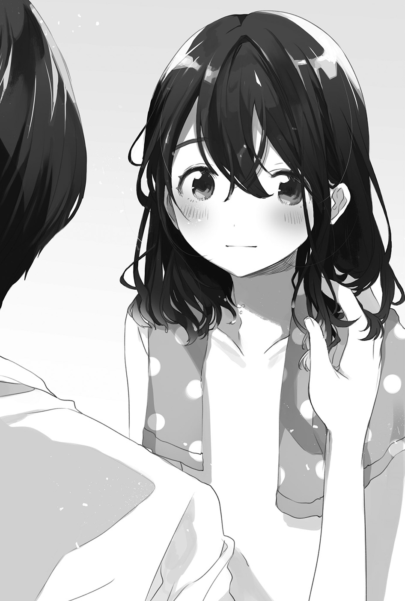我摸了摸刚出浴的妹妹的脸颊，相当光滑。我搓了搓那细柔的发丝，很湿润。
与外表给人的感觉完全相同。又温润又柔嫩。
比起可爱，应该说会让人涌起怜惜之情。
想好好保护她。我打从心底这么想。为她杜绝一切伤害、一切危险、一切恶意。
类似焦躁的使命感在心头热烈地翻腾着，几欲破胸而出。
可是……怎么说呢。
我正伸手摸着赤裸着上半身的妹妹的头发。
要是被她看到这种场面，就百口莫辩了。应该说就算没见到这种场面，也已经被她指责到百口莫辩的程度了。原来如此，也许她早就看出我会对妹妹做这种事了。
我对妹妹的态度有露骨到那么好懂吗？
「哥哥哥哥——你在做什么呀？」
也许是觉得我沉默无语地一直摸她很奇怪吧，妹妹跳了起来。
「哦……嗯。」
我含糊地点头，把手收回。「不不不，这样我不懂啦。」妹妹露出困扰的神情。
我也不懂。大概是因为思考了太多困难的事情，所以绕不出来了。
不然，把情况简化得单纯一点，只叙述事实就好。
说白了，我就是超超超超级喜欢妹妹，除了妹妹之外什么都无所谓的人种啦。
……怎么说呢，比起钻牛角尖地绕圈子，这种说法似乎更接近本质呢。
「话说回来，哥哥——白天时做了什么事呢？」
妹妹一边擦着头发，一边问道。就是一直坐在这里发呆啦。
「唔——……做求职的准备，之类的。」
如果有在准备的话就好了。我在心里加注。「哦哦！」妹妹感叹地佩服起来。
「感觉起来哥哥——好像比较有大人样了。」
「比较有是吗……唔，也不算有错呢。」
毕竟只差了四岁，这样的表现算是贴切吧……四岁？十八岁？
有些东西，不是光用年龄就能解释的。
比如这个妹妹，即使想购买未满十八岁禁止购买的商品，在法律上也是完全没问题的。
但是不管怎么看，还是犯罪行为啊。
「哥哥——从明年起就要成为社会人士了呢——总觉得好神奇哦。」
「嗯啊，如果找得到工作的话。」
「要在这边找吗？」
妹妹问了和母亲差不多的问题。
「如果找得到的话。」
我重复道。也许是在学校里被各方人马恐吓过的缘故，我对找工作的事有点没有信心。如果真的找不到工作，就得回老家住了。不过对了，妹妹在这边。
考虑到妹妹今后的生活，我非得在这边找到工作不可。
啊啊，压力又增加了。
「哥哥——加油哦——」
「好。」
今天没有加油的罪恶感涌了上来。我垂下头，只以眼睛看向一旁的妹妹。
「那你呢？」
「咦？」
「虽然还早，不过像是工作类型之类的……你有什么想做的事或梦想吗？」
毕竟是与梦想或希望完全无缘的我的妹妹，虽然这么说很不客气，但是会认为妹妹缺乏想像力，也是理所当然的想法。被我一问，妹妹露出欲言又止的表情，把手放在双腿之间，移开视线。
下巴朝左右扭来扭去，应该是为了把原本想说的话吞回肚里吧。
「现在还不能说。」
「哦？」
看来似乎是有想做的事。不过老实说，我没想过妹妹对未来有计划或展望。
因为是梦想，所以一定是梦幻般的愿望吧。
多少可以明白不想告诉别人的心情。
既然太久远之后的事没啥好讲的，那么就来聊近一点的事吧。
「你明天没课对吧？」
明天是周四，所以我如此猜测。「对啊。」妹妹点头，这个问题就能马上回答。
「没有课要上。是说哥哥——真清楚耶。」
「因为我和你同一个系啊。」
所以大致上知道学校是怎么排课的。我闭上眼睛。算了，随便啦，反正船到桥头自然直。我干脆地看开了。
「要不要出门去哪逛逛？」
我提议道。妹妹停下动作，双眼圆睁。但是又立刻漾开笑容。
「怎么搞的。哥哥——居然主动提议出门去玩，好稀奇耶。」
的确。住在老家时，一向都是妹妹挨过来要求我陪她出去玩的。
究竟是怎样的心境变化呢？我也对自己的一时兴起感到疑问。
「唔，反正就是想这么做嘛。」
才刚被说求职活动要好好加油哦，就提议隔天去哪玩，这样真的好吗？尽管我也有这种想法，不过妹妹倒是挺高兴的。
既然如此，那就没关系了。而且我那被不安与各种问题捆绑的心，也需要深呼吸一下。
「当然好哇。地点就让哥哥——决定吧。」
妹妹靠在我肩上，大大地咧开嘴笑了起来。好轻啊，我对妹妹的头产生奇怪的感动。
对了，头很轻不是指脑袋空空哦。
「全都丢给我做？」
「因为这一带我不熟嘛。」
说的也是。虽然我曾带着妹妹逛过超市之类的地点，不过游乐场所和那些地方又不太一样。
要去哪里玩好呢？就在我又多了另一个课题时，妹妹迅速擦干头发，三两下换上睡衣，快手快脚地把换洗衣物丢进篮子里，一个人在房间里忙碌不已。才刚把汗水洗掉而已，这样一来又会满身大汗哦。
「干嘛这么急？」
「因为今天要早点睡才行。」
妹妹冲满干劲，小跑步着跑向浴室。想法单纯好懂到让人想发笑。就像是远足……不对，妹妹不会为那种学校的活动感到兴奋。应该说像是家庭旅行的前一晚吧。
妹妹极度怕生，我几乎没看过她和家人之外的人说话。
直到现在，似乎还是没有改变。
……有办法在大学里交到朋友吗？
「太早睡的话，天还没亮就会醒了哦。」
就算在那种时间出门，顶多也只有便利商店可以逛哦。
我一面说笑，一面感受着心底的冰凉。
轻易地拒绝了她的邀约。主动约妹妹出门。
在自我反省的同时，我突然出现了一个疑问。
她究竟是喜欢我哪一点呢？
并不是专程去某处玩，而是找个什么地方逛逛。我带着妹妹在外头乱逛着。
「这算是想不到要去哪玩的借口吗？」
「是啊。」
我开诚布公地道。妹妹一如往常，在六点时起床。
以前那个早上起不来的妹妹，现在变得比我早起了，而且还会扫地和准备早餐，手脚俐落地做家事。看着她的身影，我有点困惑，又感受到妹妹的成长。
「这些都是妈妈教的吗？」
「嗯。妈妈教了我很多事哦。」
「……是吗？真了不起。」
尽管我自己无法明白，具体来说是哪个部分让我觉得了不起，但我还是直率地如此赞美道。
妹妹坦然接受了我的赞美，笑开了。
之后，我带着妹妹在外头乱逛。
仿佛要覆盖住与她一起走过的道路的回忆似的，我和妹妹行走着。
云量有点多，但反而适合在户外活动。
「大哥，今天好像是情侣日哦。」
妹妹指着路边有点老旧的电影院前的看板说道。上面确实写着情侣日几个字，我继续看着下面的说明，有种难为情的感觉。情人的日子，光是看到那几个字就觉得心浮气躁。都是那不知是否已经过时，或者仍然在流行的，意义不明确的广告词让我产生尴尬感。
妹妹灵光一闪，露出恶作剧似的笑容。先指指自己，再指着我。
「行得通吗？」
起初我没意会过来，不过在理解她的意思之后，我用下巴指了指电影院的看板：
「情侣？」
「情侣享有折扣，两人两千圆。」
妹妹模仿着售票人员的口吻说道。反正本来就没预定要干嘛，看看电影也好，可是……
唔，总之比买敬老票合理多了。
「……只要你不露出马脚，应该就不会有问题吧。」
「哥哥——女人天生就会演戏，这可是常识哦。」
她说着，学着路上那些放闪的情侣，搂住我手臂。老实说，我只觉得做作到很可疑而已，但我还是和妹妹一起走向售票口。边走边回忆起还住在老家时发生的事。每当全家一起去吃到饱的店时，母亲总是把已经国二的妹妹说成小学生，贪图多享有一点折扣。母亲说谎说得脸不红气不喘，不过店员也从来没有怀疑过。但是想当然耳，妹妹对此是很不满的。虽然说她现在喜孜孜地假冒情侣就是。
是说，假如售票员真把我们当成情侣，我会被安上什么罪名呢？
大学生的我和貌似国中生的小女友。不可能不成为问题吧。
「情侣票，对，两张。」
从来没想到自己有在意识清醒的情况下被逼着说出这句话的一天。
借着被搂住的手上传来的振动，可以知道妹妹正在偷笑。既然说自己很会演戏，你就主动开口买票啊！
就在我拿出钱包时——
「啊，哥哥——我们各付各的就好。」
喂。「啊！」妹妹双眼圆睁，发现自己露出马脚。售票员也敏锐地瞪向我们。
完全如我所料，分毫不差的失败。我拼命忍笑，连傻眼的时间都没有。
妹妹挤出僵硬的笑容，狼狈地设法蒙混过去。
「哥、哥、柯特——！噢！柯特——！Honesty is the best policy.」
为了把我扯成老外，硬是把我改名为柯特——？小姐你哪位啊？
虽然售票员觉得我们更可疑了，但也许这设定勉强说得通吧，对方故意不看着我们，迅速地完成售票作业。为了维持假象，我们离开售票口时，妹妹还是挽着我的手臂。
是说，比起挽着我的手臂，更像是吊挂在我手臂上就是了。
「很成功呢。」
妹妹笑容满面地道。
「最好是。」
不是所有事情都能靠着笑容来合理化的好吗？
而特地冒充情侣买票看的那部电影，我只记得开头十分钟的剧情。长时间坐在黑暗中，又不能自由活动，眼皮就会愈来愈重。还来不及抵抗，我的意识就飞到远方了。醒过来时，厅内灯光已经全亮，结果我花了钱，买到一段睡眠时光。
四处闲逛的过程中也有这样的事。
之后。
「哥哥——你不会想结婚吗？」
妹妹一面吃着冰淇淋与装饰在冰上的香蕉片，一面问道。原本正以汤匙舀起冰淇淋的我停下手上动作。
看完电影后，我们依旧在外头乱逛，在路上发现名为Yogorino，似乎是把优格和冰淇淋打在一起制成的甜点。由于妹妹说喜欢吃，所以我也陪着她吃了起来。冰淇淋本身甜度不高，口味很清爽，但配料和酱汁颇甜，搭配起来很调和。最重要的是那冰凉的感觉很适合醒脑。
先不管这个，总之妹妹突然问起那种事。
由于天气不错，我们是在店外的座位吃冰，可以看到其他商店的情况。也许是看到家长带着孩子到旁边的甜甜圈店购物的场面，所以想到那种事吧。我跟着瞥了那边一眼，思考起自己有多久没吃过甜甜圈了。
「没有那种预定呢。」
「以后呢？」
「目前完全没有那种念头。」
结婚这档子事，得先有对象才行。她的身影在我脑中一闪而过。
「啊嗯。」我向前探出头，吃下妹妹以汤匙挖了递过来的冰淇淋。
因为是兄妹，做这种事没什么好难为情的，但我在张口时，想起了印象愈来愈薄弱的她。
在大学的露天咖啡座做这种事，当然会让人误解。
事到如今，我才开始后悔应该诚恳地向她道歉。
「这个好甜啊。」
「因为淋了焦糖酱嘛。」
是妹妹喜欢的浓厚滋味。和我点的奇异果加柳橙的水果酱汁截然不同的风味。
我也舀了一口自己的冰给妹妹，妹妹也同样探出上半身含住冰淇淋。如果我们的年龄分别只有现在的一半，应该是很温馨的场面吧，但是这个年纪，周围的人会怎么看我们呢？
如果让电影院的售票员看到这种场面，会相信我们真的是情侣吗？
「那么有过『好想结婚啊——』的想法吗？」
妹妹含着汤匙，抬起眼睛自下而上地观察着我，问道。
还要继续这个话题吗？虽然同样的事回答好几遍有点烦，但我依然否定道：
「没有。我连工作都还没找到呢。」
「是没错，要先出社会……」
妹妹嘟嘟哝哝地把焦糖酱汁送进嘴里。这个样子，四年后要出社会吗……总觉得愈来愈不可能了。
「不然你呢？」
一味地被刨根究底问问题很没意思，所以我反问道。
妹妹并不因反问而惊讶，反而露出略带阴郁？消沉？的表情。
「……PASS……」
这对话的走向是怎样？煞有介事似的苍老口吻让我觉得很不愉快。
「是说你为什么要问这种问题？老实招来。」
我挥着手，以叫人过来似的手势催她说下去，妹妹有点沉重地开口：
「因为哥哥——没有带着女朋友之类的一起出来嘛。」
「…………………………………………」
确实。
「所以我在想，哥哥——是不是顾虑到有我在场，才没让女朋友来的。」
「…………………………………………」
确实是这样没错。
我因妹妹那虽不中亦不远矣的担忧而心虚了起来。
「不能造成哥哥——的困扰呀。」
对吧？妹妹只有左半边脸笑着，等着我回答。真是灵巧的颜面表情肌。
的确不该造成他人的困扰。
可是，假如困扰不成立，就没有任何问题了。
「说不定我根本没有女朋友啊。你怎么不这么猜呢？」
全世界的男大学生，有一半都对女性感到饥渴。这是理所当然的真理。
「没有吗？」
妹妹以不安的声调问道。
这一刻，我觉得命运掌握在我手上。
可以任意回答有或没有。而且依回答，还会决定未来的走向。是人生的重要分歧点。
【？？？】
凉冷的汗水，如冰淇淋表面的水珠般浮起。
我不想说谎，可是，我也不想伤害妹妹。
想找出面面俱到的回答，最后脱口而出的话是：
「虽然有，不过已经分手了。」
宛如被撕开、揉碎的海苔，觉得某种肉眼不可见的什么于此时此刻扭曲、碎裂了。
仿佛眼尾缺了一角，失去了安定感似的，但我还是笔直地看向妹妹。
「是吗？」
可以从表情与声音中知道妹妹的失落。没有停顿就立刻回话，表示她可能早就猜到几分，不过，还是因此失落了，我也因此静静地受到打击。看着沮丧的妹妹，罪恶感紧揪着我的胸口。
假如立场对调，妹妹告诉我自己曾经交过男朋友，但是又分手了。听到那种话……我会相当难以忍受吧。
想到这里，嘿，我不禁失笑出声。
原来如此。
我们真是一对恶心的兄妹呢。
我从座位上站起，绕到妹妹身边，朝她伸手。尽管妹妹不知道我的想法，但还是握住了我的手。
我轻轻一拉，让她也站了起来。接着把她抱进怀里。
管不了其他客人或者路人的眼光。
「现在已经没有了。」
我紧抱着妹妹纤细的身体与圆巧软绵的头颅。
之后——
假如我说出接下来那句话，将会毁掉许多东西，而且会成为不忠诚的渣男。
尽管这些事我全都明白，但我还是开口了：
「对不起。」
不停地在我心中空转，一直等着登场的那句话，终于出现在现实之中。
我承认，至今为止我做错很多。而且还因此侮辱了与我有关的人们。轻率地离开老家，喜欢上其他人，我必须说这些事是我错了。
就算这么说只是错上加错，但现在的我，也只能说这句话了。
妹妹虽然没有哭，不过一直紧揪着我胸口，动也不动。
【？？？】
我曾经为了不想认同自己的本质，试着逃离应有的人生。想找寻其他的人生道路而离开家门。但是事到如今，我终于发现，虽然我看来像是走远了，其实仍然走在同一条路上。
我的生活方式，是被自己的名字、出生的世界、环境决定好的。
看穿这个事实后，我放弃了「人生有无限多的可能」的信仰，不再把目光从该走的那条路移开。
不论何时，不论什么人，他们能走的路永远只有一条。
据说人类无法一个人生活。
那么，我该和谁一起活下去呢？
总觉得终有一天，我必须面对这个问题。
而现在。
虽然还只有模模糊糊的感觉，并非洞悉未来，也不是说肯定会因此过得幸福快乐。
不过我想，我应该会和妹妹一起活下去吧。那天，我有这样的预感。
大学四年级。是名为出社会的动词在不久的未来等待着我的时期。
我，是否每天都为了生存而思考呢？
早上，在疲顿的脑袋没有清醒过来的情况下起床，吃着别人准备好的早餐，理所当然地洗过脸后离开公寓，沿着相同路线走动似地度过每一天。在这种生活中，我忽然产生了这样的疑问。
人生中的每一分、每一秒，都让我们离终点愈来愈近。不停地消耗那漫长但有限的时间，朝着死亡前进。与友人，与家人，与可能性离别，最后则是与自己的肉体分离。
意识到这个事实后，就只能在心怀恐惧的情况下等待着早已注定的将来。
尽管我不至于什么都没思考地活着，但还是会担心自己是否蹉跎时光，并对此感到相当不安。当初，我就是因为害怕浪费生命，想加以反抗波流，才会离开老家就读外地的大学。但还是没能治好这个老毛病。
也就是说，自己什么都没克服。
那样的自己令人可耻，可是——
也有基于那种经验才能看清的事实。
就是：即使抵抗波流，也不一定能得到好的改变。
应该说，硬要否定培育出现在的自己的那波流，反而会让人觉得不自然。我在离别与重逢中学到这件事。就算对大多数人而言，那是错误的，但是对我来说，还是不变的真理。
基于这样的经验，我多少肯定了没在用脑思考的自己。糊里糊涂地决定到面包工厂上班，说不定也是波流之力造成的结果之一。
「四月开始，我要去烤面包和搬面包了。」
「哦——」
我报告完，妹妹拍手表示恭喜。嗯，应该是恭喜没错。
多么柔嫩的手掌啊。我看着她那贝壳般浑圆的指甲，心想。
「有到需要赞叹的程度吗？」
「因为当面包师傅，好像很厉害嘛。」
「这和那有点不太一样耶。」
就广义而言，确实也可以算是面包师傅，可是作业环境不像妹妹想的那么浪漫、具有田园风情。
「既然是这样，为了庆祝哥哥——找到工作，今天的晚餐就决定吃面包了。」
「为什么？」
妹妹爽快地无视了我的疑问，去准备法国面包。接着，她端了一盘加热过的炸肉饼走来。看到那些炸肉饼，我大致上猜到妹妹想做什么。
「那不是早餐在吃的吗？」
「没差啦没差啦——」
妹妹在法国面包上打横划出一道口子，把炸肉饼塞进面包里。我懂我懂。
接着，双手一上一下地夹着面包，啪！地用力一拍……不予置评。
「你的手太小了，做起来没有那种魄力啊。」
「来，请用——」
我接过妹妹亲手做的晚餐。
「哥哥——你从以前就想做面包了吗？」
「咦？」
就在我啊——的张大了嘴，准备咬下稍微嫌硬的法国面包时，妹妹问道。
我放下面包，收回下巴，看向妹妹。
「不是吗？」
「唔嗯……动机不是那样啦。」
在求职活动中，我的确是投了履历到面包工厂没错，但不是因为我对烘焙业怀着什么梦想或希望，而是为了赚钱糊口，在偶然的情况下选择了面包工厂而已。
我对此没什么不满，光是能找到正职，我就安心了。
父母汇给我的生活费，想当然耳只会给到三月我毕业为止。虽然说他们还是会汇钱给妹妹，可是假如得靠着妹妹的那份生活费过活，就太难看了。不工作赚钱，就没办法在这里活下去。我是为了活下去而活下去的，可以选择的工作范围既不宽广也没有发展性。
目前，我并不觉得这样子很糟。
即使未来某天会因此感到极度后悔。
……是说妹妹呢？她是否满足于现状，从不考虑将来呢？
「……大学那边如何？」
我一边咬着法国面包的前端，一面问道。和我一样从前端咬起面包的妹妹看着我，并不放下面包。黄褐色的面包与妹妹温和柔软的感觉相当协调。
「什么叫做如何？」
「还顺利吗？」
「嗯。我都有好好上课。」
浮光在妹妹的眼眸中跃动。仿佛透过镜头观看水中似的，水润的眸子显得更特出了。
其实两人都心照不宣。
我要问的不是那方面的事。
「学校生活还快乐吗？」
作为这妹妹的哥哥，可不是白当的。我早料到会有什么答案地问道。
妹妹并不低下头，她以眼部动作做出思考的模样，回答道：
「普通，吧？」
「……普通吗？」
「嗯。」
沉着又简短的回答，但是明显可以感觉得出，她不想多说。
不，不对……不是这样的。
并非不想多说，而是无话可说。百分之百是这样的。
对她而言，念大学不过是离开老家的方法而已。
先不论动机为何，手段倒是和我很相似。
也许是因为我们是兄妹吧。
「普通的话就好。」
我低声说完，吞下炸肉饼。
没错，普通是很可贵的。
就算今后即将加入劳动者的行列，是否能因此得到那普通，还是很难说。
二十二岁。再过不久就是我的生日。
我即将成为社会人士，妹妹依然是大学生。
回顾过往，有种走过漫漫长路的感觉，肩膀也因此沉重了起来。
糖分烤焦的气味扑鼻而来。没多久之后，那气味就渗入衣服与肌肤中了。
与我同期被录用，一起在工厂里听作业说明的同事们的眉心之所以出现皱纹，恐怕也是基于这个原因吧。虽然我们还没做过自我介绍，但已经能用眼神沟通心声了。
不过既然工作中的作业员们眉心都没有皱纹，我想我们应该也能很快适应这股气味吧。尽管我同时也有种视力会因此模糊恶化的感觉，不过就先当作不知道这件事好了。从今天起，我们每天都会被绑死在这里，无法逃离劳动人生。
责任的沉重程度和想请假时就请假的学生时代天差地别。
没办法继续逃避责任。
四月，今天是就职的第一天。我来到离公寓有点远的面包工厂，和其他新进员工一起学习作业流程。有点像是新人研习的复习作业。除了我之外，在场者中还有好几名一看就知道是刚踏出校门的菜鸟。也许是因为直到上个月为止还是大学生的关系吧，松弛的表情很是显眼。
而我，应该也是同样这副德性吧。
带队的中年人做完说明后，等着我们的是体验作业。我们来到烘烤、油炸面包的加工作业区块。工厂前辈警告说，直接碰触大型油炸机的话可不是烫伤就能了事的，不过我知道更详细的下场。就是肉会整片掉下来。高中时在汉堡店打工的朋友曾经秀过那种伤疤给我看，而且是在吃饭时。
我第一个反应就是想起那件事。在味道最重的场所，在前辈的指导之下开始进行实作演练。机械发出的声音有如一道厚墙，朝我逼迫而来，感觉很像在左右耳边各放一台洗衣机洗衣服似的，非常有压迫感。再加上高温与气味，把人逼到死角。
我原本以为自己运气不错，没有吃太多苦头就找到工作，但说不定其实只是因为这种职场环境太烂没人要来，所以才这么轻易就被录取。
有种感觉，习惯了这些单调的作业之后，自我会愈来愈稀薄。
仿佛被烘干的纸张，又脆又薄。
以劳动为名，从缺乏水分的身体中拧出的汗水，滴滴答答地落下。
化为枯朽的碎片，随风飘散凋零。
午休时能自由地在餐厅吃饭，算是这个职场的优点。虽然说可以自由吃饭，但当然不是免费供餐。不过，就某方面来说是极为理所当然的吧，如果是自家工厂生产的面包，就可以免费随你吃到饱。是说，所有人都对面包味腻到不行，因此没人想吃就是了。
我找了张椅子坐下，疲劳似乎更加使劲地趴在我肩上，平常深藏在皮肉之下的骨头不但沉重万分，而且还酸痛不已。虽然人是醒着的，可是只要一不注意，好像就会开始打呼。我忍下差点就要冲口而出的鼾声，重新坐好。
午休时间并不长。我把握时间，吃起日式炸鸡定食。味噌汤的味道很重，感觉好像会在喉咙烧出个洞似的。
我还是比较喜欢老家的，正确来说，是妹妹的调味方式。
在我旁边用餐，和我同期进工厂的同事，表情比我阴沉了一倍。他尽义务似地把饭菜送进嘴里，每吞下一口食物，就长长吐一口气，不停地长吁短叹，仿佛想以身体语言投诉，在这里工作有多么令他不满。看着他那模样，连我都跟着难以下咽了。老实说，我不希望他在餐厅里释放负能量。
就在那同事叹出不知第几次的气后，上下游动的视线忽地与我对上。他沉默了一会儿，礼貌性地把椅子拉近。要找我讲话吗？我有点紧张。
「唷。」
「嗯。」
我们简短地打过招呼后，各自报上姓名。我记得曾在正式上班前的研习会上和他照过面，但是早已忘了他的名字。
「才第一天上班，就想逃走了。」
对于同事的泄气话，我轻轻一笑。虽然我不至于想逃走，不过，烦死人了——！也有种想边跑边这样大叫的冲动。我忍下差点脱口而出，与懊闷完全不同的某种感情，任凭那感情在肚子里翻滚。这就是所谓的出社会呢。我感同身受地想着。
「真想早点离开这里。」
我对那同事的抱怨有点好奇。
「可是，离开后要做什么？」
「做什么……难道你很想待在这里吗？」
他一脸意外地问道。「嗯啊。」我含糊地点头。
「待在哪里都好，只要能赚钱的话。」
能赚钱支持妹妹的话，在哪工作都好。
这样我就满足了。
「哼——还真是个没有梦想的家伙。」
「是啊。」
「不过这样也挺让人羡慕的。」
似乎不是在挖苦我。他趴在桌上，捏着下唇。
「我啊，想当小说家。」
「哦？」
炸鸡是以鸡胸肉做的，不过炸太久了，有点太干太老，纤维好像会卡在牙缝里。
还以为他只是想换别的工作，没想到是胸怀大志。
「可是学生时代没能当成，所以只好找工作了。」
「哦……」
很常见的故事。因为世事大部分都不能尽如人意。
毕竟世界存在于我们的意识之外，这也是当然的情况。
可是，肯不肯接受这样的世界，则是由当事者决定。
对于出现在眼前的现实，让愿意接受的人去接受就好。
「我是在想，如果不能过着自己想要的人生，活着到底要干嘛？」
「……我也有这种感觉。」
不论愿望是大是小，人类都是追逐着名为愿望的光芒而活的。
妹妹又是怎么想的呢？她有办法照自己的愿望生活吗？
我思考着至今为止与从今以后的人生之路。
我正食不知味地把午餐送入口中咀嚼，一名事务员打扮的中年女性出现在餐厅门口。原以为她也是要来吃饭的，可是她却四处张望，口中喊着我的名字。
对方是素昧平生的人，我不禁有点慌乱。
「是。」
我赶紧起身。该不会是早上的作业内容出了什么问题吧？胃因冷不防地遭到点名而收紧，对消化实在很不好。我紧张地朝门口走去，但是中年女性却以轻松的口气说明来意：
「有客人找你。」
「咦？」
听说对方在工厂门口等我，我加快脚步朝外头走去。
「啊，果然。」
是妹妹。她一看到我就大力挥手。也许是因为背着后背包吧，看起来就像是一个社会课来参观工厂的小学生。我小跑步到妹妹身边，只见她瞪大了眼睛。
「哥哥——你味道好重哦。」
她掀着扁扁的鼻子嗅道。我很担心味道沾染到她身上。
「有一种甜甜的东西烤焦的味道。」
「因为这里就是做那种东西的地方嘛。是说，你来这里做什么？」
难不成我忘了东西，所以特地送来这里吗？
「工作时有什么感觉呢？」
连问题都很像社会课来参观工厂的小学生。
「什么感觉……觉得有点累吧。毕竟直到昨天为止都是懒懒散散的大学生嘛。」
我夸张地开着玩笑，妹妹笑了起来。
「哥哥——出门之后我才想到，所以来外送。」
听她这么说，我大概猜到她来这里的原因了。
妹妹从背包里拿出的东西，果然是以布巾包起来的便当盒。
「便当？」
唔。
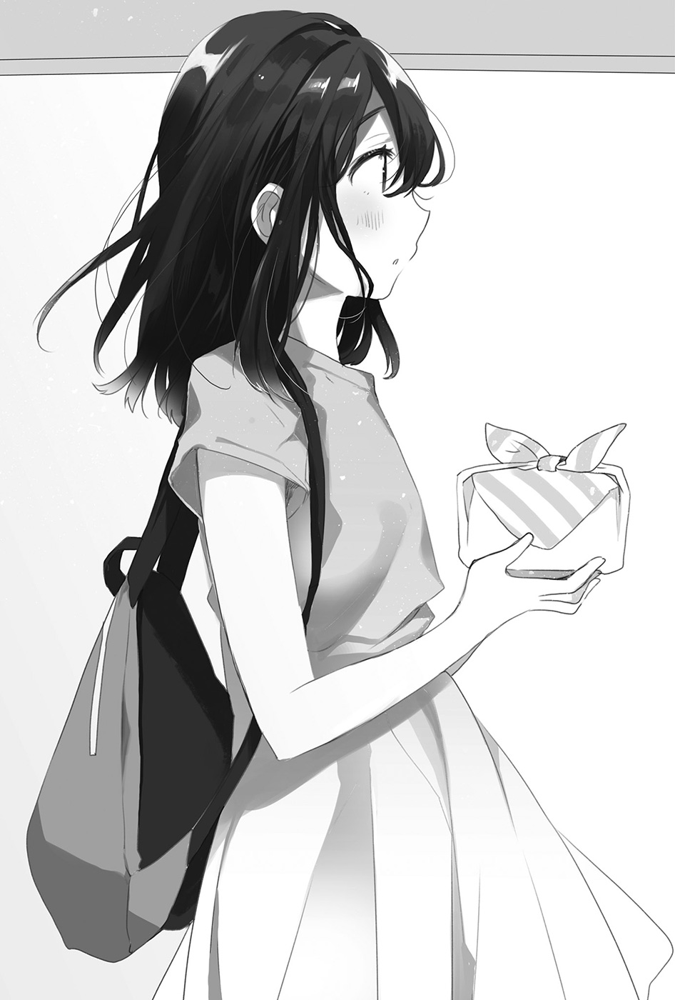「啊，难道说哥哥——已经吃过午餐了……？」
妹妹慢腾腾地，仿佛伸手喂食凶暴大狗般地窥视着我。
我努力不让吃过定食，已经有点撑的肚子打出饱嗝，装出欣喜的表情。
「不，我才刚在餐厅乱逛，烦恼中午要吃什么。你来得正好。」
我喜孜孜地接过便当，妹妹松了一口气，绽开笑容。其实我这样也不算骗她。
只要我待会儿变身成大胃王，把便当吃完就行了。
「谢谢你啊。」
我伸手想摸摸她那小巧的头，「啊！」但在途中惊觉这样不妥，又把手收了回来。
「怎么了？」
「我怕手上的味道会沾到你身上。」
味道有可能沾在妹妹的头发上。我的手掌失去目标地在虚空摇晃，妹妹以视线追着它。
「那还真可惜。」
「嗯。」
「那不然，等哥哥——回家之后要好好夸奖我哦。」
十九岁的妹妹露出洁白的贝齿，笑眯了眼睛。
在云量略多的天色下，那笑容耀眼到令人难以直视。
「哦——……那你就好好期待吧。」
莫名其妙的宣言脱口而出，可是妹妹却微笑着，毫不怀疑地相信了那如气球般无可依靠地在大气中载沉载浮的话语。好好地夸奖妹妹，具体来说该怎么做呢？把想得到的所有美丽辞藻全说出来？但是我没有立志想当小说家，没多少文采哦？
「那我就收下了。」
我把便当盒高高捧起，表示感谢，顺势向妹妹道别。
见她点头后，我转身走向工厂。
「加油哦！」
身后传来天真无邪的声音，我回过头。
心中百感交集，尽管不是所有感情都发展得很正确。
「嗯，我会加油的。」
我抬手作为回应。手臂没什么力气，我发现自己的精神呈枯竭状态。
为了在妹妹面前装模作样，我虚荣地抬头挺胸，挺直背脊。
打算维持着这种体态走进工厂里。
但是来到建筑物门口时，刚才那名同事却站在门边，看起来像在等我回来。怎么回事？我从他身边经过时，他低声问道：
「你女朋友？」
你也真爱管闲事……女朋友吗？
到头来，自从那件事之后我就再也没有见过她了，也没有打过电话。
这样其实也不错。双方都能如此接受的一天，真的能到来吗？
但是比起那种结果，对方身影从记忆中淡化的日子好像会先来呢。我有点不希望变成那样。
「喂，快回答啦。」
「不是，那是我妹。」
「什么嘛……我还以为你有那种兴趣，原来不是啊。」
「什么叫那种兴趣，对别人家妹妹太没礼貌了吧。」
虽然没说出口，但我也知道他想说什么。
「咦？国中生在平常日可以像那样跑出来吗？」
没什么不行吧。我随口答道，懒得花时间为他说明详情。休息时间所剩无几，得快点把午餐吃完才行。
我回头看向大门，豆子大小的妹妹正在向我挥手。
即使回头，也感觉得到同事的视线，不过我直接无视，完全不理他地走回餐厅。
同事也跟了过来，在我身旁坐下，看向便当的菜色。
「手作便当？你还真行啊——」
与工作无关的部分被称赞了。虽然我什么都没做，但是妹妹的厨艺被人称赞的感觉并不差，我有点得意地把筷子伸向便当。
「是说这便当盒还真逗啊。」
「……说的也是。」
卡通版一休和尚图案的便当盒，到底是打哪来的呢？老家吗？不对，我不记得小时候看过这盒子哦。而且就年代来说也不对。同事应该也是基于同样的疑问，才会那么说的吧。
算了，反正里面装的不是素菜就好。菜色很正常，而且放了不少热狗，那是我喜欢吃的食物。我把切段的热狗送入口中，想起小学时远足的往事。
「难道你是那种身材很瘦的大胃王？」
「是啊。」
不过只有今天是。我边咀嚼边追加道。
「喂。」
「嗯？」
「你妹妹长得很可爱嘛。」
「是吗？」
就想当小说家的人而言，讲这些话时倒是完全没有打算修辞嘛。
但也正因此，心声才能率直地传达给对方。
赞美人时，不需要什么修辞。
我最讨厌看迂回的描写或细腻的比喻之类的文章了。
算了，先不管这部分。
我妹妹很可爱吗？
「……呵呵呵……」
其实我从以前就这么认为了，但一直觉得有偏坦自家人的嫌疑，所以很少向其他人炫耀。
原来是这样啊。
就连不相关的人也觉得我妹妹很可爱吗？唔，有种得意又担心的感觉。
同事靠躺在椅背上，左右摇晃着身体笑道。
「期待她五年后的样子哦。」
「……应该和现在没什么不一样吧。」
「你白痴吗？女孩子在十几岁时的变化是很惊人的哦，变化之大，会让哥哥吓到腿软哦。」
「……说的也是。」
再不到一年，妹妹就要成年了。如果这段期间出现那种惊人的变化，我确实是会吓到腿软呢。
「哪天介绍你妹给我认识吧。」
「才不要。」
我一口回绝。不过，唔，又含糊不清地自语起来。
妹妹，要二十岁啦……
光是意识到这个事实，后脑的部分就开始放空。双眼失去焦点，视野内的东西全都因此变得模糊。因为没有真实感吗？妹妹一直是柔弱、幼小、紧跟在我身后的存在。假如不再是那样……就算理智上明白，感情上还是无法接受这种转变。
二十年后，妹妹会变成中年女性；再二十年，则会变成老婆婆。
到那时，双亲是否还健在呢？而我，到时候也已经是老人了，会佝偻着身子，满身病痛吗？那时候的我，会以什么心情观看日出日落呢？
难以想象。不过我至少知道，妹妹不久之后就要成年了。
毕业之后，那小子会去上班吗？假如不找工作，要怎么办呢？
回老家吗？还是继续和我一起住？
如果是妹妹，我总觉得她会选择后者。
可以一直住在一起的话，也挺不错的啊。
「……不对，不是这样的。」
我甩着头，让愈来愈模糊的意识清醒过来。
为了继续住在一起，所以我得在这座工厂里努力工作。
必须过着自己想要的人生，才算活着。不久前才刚听过这样的话。
所以我必须好好吃饭、睡觉，获得足够的能量。
我有非工作不可的理由。我下定决心，要挺直背脊，认真工作。
顺带一提，那个同事在三个月后辞职了。
据说是因为明白自己不适合这个工作。
对于他那即知即行的行动力，我有点心生羡慕。
「二十岁了！成年了！」
「……喔。」
「可以抽烟喝酒打柏青哥了！」
「全都不可以。」
为什么？据说已经加入成年人一分子的妹妹窝在暖桌里抗议道。
「因为你会被警察抓走。」
「可是我已经二十岁了耶——」
因为你一点也不像满二十岁了。
下班回到公寓，洗完澡，走出浴室后，妹妹开始提起成年的话题。早上已经庆祝过了不是吗？我边笑边以毛巾擦拭头发。严冬里，那股冷到仿佛要结冰似的水珠传来的寒意也多少因此远离。
妹妹的第二十个生日，是即使窝在室内也会全身发抖的大冷天。电视上明明说今年是暖冬的，难道说我家的电视机不小心接收到其他国家电视台的电波了吗？就是冷到不禁会冒出这种疑问的程度。
唯一值得庆幸的是，夜空与满布上方的云朵也冷到冻结了，没有变成雪花落下。
「你对那些东西有兴趣？」
假如她对那些有兴趣，就不能强硬阻止。
妹妹以食指关节卷着头发，眼神飘来飘去。
「我想喝一次酒看看。听说啤酒的味道是犯罪级的美味哦。」
「那是漫画里的剧情吧？」
嘿嘿——妹妹发出毫无紧张感的笑声。
看样子，即使成年，笑容与温吞的表情也没有改变就是了。
「要今天喝吗？」
「因为是今天成年的嘛，嗯，今天喝才有节日的感觉。」
「不然我去帮你买吧，买啤酒。」
我没有喝酒的习惯，也不爱喝酒，家里一向没有酒类饮料。
但总不能让妹妹晚上一个人外出买酒，我先发制人地采取行动。怎么说呢，我这样算保护过度吗？身为哥哥，为妹妹做这种程度的事不是应该的吗？我很想对世人进行一下意识调查。
不过，假如妹妹被卷入类似最近电视新闻天天大肆报导的那种重大凶案里……我实在没办法不担心那种事发生。其实我还想天天接送妹妹上下学的……这样算保护过度吗？
「啊等一下等一下我也要去！」妹妹跳出暖桌，从衣服堆里抓了件衣服走到玄关。她把那件深蓝色的上衣罩在家居服上，以发圈随意地把头发绑成一束，以快要向前栽倒般的姿势穿鞋。但是没有穿袜子。
「那是我的衣服耶。」
「因为这件很保暖嘛，所以我没差。」
妹妹以多出来的袖子包住身体，漾开笑容说道。可是，「噢哇毫冷！」但是一迈出大门，那笑容立刻变形、冻结了。是我不怎么愿意具体描述的表情。
「你可以在家等我回来啊。」
「没关系——没关系——我要和哥哥——一起去。」
妹妹带头走了起来。也许是因为手脚关节被冻僵了的缘故，动作颇为笨拙。
看着她的背影，我忽然想起很久以前的某个暑假。
不过现在是晚上，而且是冬天，应该不必拿出阳伞吧。
我一面走下公寓楼梯，一面仰望上空。从口中呼出的气息如白云般随风飞扬。每当那些白色的雾气在公寓灯光的照射下飘升、消散在夜色中，寒冷就更增一分。
虽然气温冷到让人很想立刻蜷缩在地上，可是我的心情却相当暖和。
也许是因为与下班时不同，脚步声有两道的缘故。
我和输给寒冷，一不小心就缩起上半身的妹妹一起走向附近的便利商店。店前宽敞的停车场上零星地停着几辆车，从店里向外透出的光线照射在地面上，有种濡湿的错觉。我们穿过水光粼粼的停车场，一踏入店里，妹妹僵硬的脸颊立刻融化。
「温暖真好。」
看着妹妹的脸，我不由得想点头同意。
「再顺便买点马铃薯炖肉、烤鸡肉串和洋芋片好了。」
因温暖而复活的妹妹喜孜孜地在便利商店的架子间穿梭，一听到这几样食物，就知道她是被哪部作品影响的了，不过她好像忘了起司竹轮。是说这些食物刚好可以代替晚餐，所以买了也没差。我趁着妹妹购物时随意挑了两罐啤酒。啤酒的种类繁多，我也不清楚哪个牌子比较合乎自己的喜好。我一面感受手上传来的冰凉，一面抬头看向冰箱上方。
上方贴着未成年请勿饮酒的警告标语，同时，冰箱的玻璃上映出了我的身影。
老早就满二十岁的我，正不停地眨着衰颓的眼皮。
这家伙是谁啊？我小声地自嘲起来。
我转过身，发现门口和收银台旁都挂着灿烂的布条。见到那些布条，我终于想起今天也是那个日子。我从店里找出妹妹，快步朝她走去。
「想不想要巧克力？」
我逮住正在到处闲逛的妹妹问道。随意绑起的头发早在活动时散得差不多了，结果还是和待在房间里时没什么两样。妹妹似乎也因为布条与相关装饰而意识到了。
她怀里抱着马铃薯炖肉和洋芋片，仰头看着我。
「如果是哥哥——买的，就想要。」
「好哇。」
我每年都会买巧克力送妹妹，假如今年不买，反而会觉得不太对劲。我会问这问题，也是很自然的发展。
「哥哥——也要吗？」
「你送我就收。」
因为所以，我们买了两个巧克力。反正回去之后也是两个人分着吃，所以故意挑了口味和类型都不同的两款商品。是说，这么做的话还有必要特地先送对方再吃吗？我稍微思考了一下这问题。
「哥哥——在公司那边没收到巧克力吗？」
我们排队等着结账，妹妹窥视我表情似地问道。
因为这动作，原本就岌岌可危的头发终于完全散开了。
「那边可是风花雪月不起来的地方哦。而且根本没有多少女生。」
虽然有女性员工宿舍，不过据说很少人住。通常都是一、二年内就会辞职了。
而我，会在那间工厂待多少年呢？一年？十年？三十年？
每天累得半死不活地工作那么多年，到头来可以得到什么？这种烦恼是与我无缘的。
不管有多了不起的成就，到头来终将一死。所以，惧怕自己不够有价值是没有意义的事。但是妹妹要做什么工作就另当别论了。我希望妹妹能如愿做她想做的事。可是……我看向身边的人，叹了口气。
她有打算找工作吗？我有种不妙的预感，暗自担心了起来。可是那想法在轮到我结账时消失了。
再过几年，那么娇小幼稚的妹妹就要出社会工作了，感觉像是开玩笑似的。
结账时我还顺便买了妹妹要的烤鸡肉串。回程的路上，装着热食的袋子给妹妹拿，我则是拎着装着啤酒和巧克力的袋子。温暖真好。既然妹妹都那么说了，当然就是这样的分配法。
回到公寓后，我们趁着加热马铃薯炖肉的空档拿出啤酒和杯子。妹妹抱膝而坐，伸长了手把杯子递过来，我将啤酒倒入她的杯子里。没想到会有帮妹妹倒酒的一天。肩胛骨与腋下周围都被软绵绵的棉制品包着，感觉就像脱离了现实似的。也许是因为不小心感受到了拂过身边的时间之风的缘故吧。
「好，那就……干杯吧。」
「干杯——」
我们高举杯子磕碰在一起，仿佛孩童玩家家酒似的。
妹妹把脸凑到杯子边缘，「呜呃恶，味道好重喔！」还没喝，脸就皱得和包子一样。你那是小孩子表达讨厌的方式哦。妹妹的表情让我很想这么说，但假如说了之后刺激到她，让她赌气把整杯酒一口气喝完也不好，所以我只是安静地看着她而已。妹妹一下靠近、一下远离杯子，似乎做不出喝下去的决心。
最后，也许是因为总算习惯了啤酒的气味吧，她的嘴唇终于抵在杯子上，噘起嘴，像是在喝什么滚烫的液体似地啜饮起来。起初喝得还算顺利，但是不消多久，动作就停了下来。拉长了背脊，僵着身体，嘴角开始抽搐。
我一边小口小口地喝着啤酒，一边观察着妹妹的反应。
只见她瞪大双眼，又用力闭紧眼皮忍耐，脸颊不停地变形，想找地方逃跑似地扭来扭去，整个人忙得不得了。最后，在瞳孔收缩了三次之后，她总算把口中的啤酒吞了下去。
嘴唇抿成一条线，如蚯蚓般蠕动不已，下眼皮不停地抽搐。明天她的颜面表情肌应该会很酸痛吧。
「请让小的为您斟酒。」
「喂！」
她把只喝过一口的酒全部倒进我杯子里，我好不容易才消耗了半杯酒，现在又满了回去，不对，是比原本的分量更多了。有种玩大富翁时掷骰子结果退回原点的感觉。
以犯规方式让杯中酒消失的妹妹依然苦着脸，比啤酒更苦的表情。
「好奇怪啊，明明我已经成年了说。」
「其实你根本还没成年吧。」
我开玩笑道。本来以为妹妹听了会生气，可是她却没什么反应。似乎是没多余心力转换成其他表情的缘故。这时，微波炉加热完毕的提示音响起，我起身去拿马铃薯炖肉，顺便打开冰箱，拿出已经开封的番茄汁。对妹妹来说，这应该比啤酒好喝吧。
回到暖桌时，妹妹也稍微平静下来了。「的确是犯罪级的味道。」妹妹喃喃说着，打开洋芋片的袋子，拿出几片扔进嘴里。仅存的苦涩从脸上消失，恢复成原本的可爱笑脸。
「我还是觉得这个好吃太多了。」
「我也比较喜欢洋芋片。」
袋口被拉到全开，放在桌子中间以便两人分食。我细细品味起很久没吃的海苔盐口味的咸味。
妹妹一面观察着空了的杯子，一面向我问道：
「习惯之后会变好喝吗？」
「在那之前，你的脸会先长满肌肉吧。」
我把已开封的番茄汁交给妹妹，她自己把饮料倒入杯子里。用番茄汁漱过口后，以筷子把马铃薯炖肉里的马铃薯切成小块，送进嘴里。虽然表情还是一样忙碌地变化不已，但不再包含苦瓜脸在内。
「热呼呼的，五脏六腑全都变得好温暖哦。」
妹妹以幸福的表情说道。虽然也和吃到温暖的食物有关，可是她的高昂情绪不只因为食物而已。我努力把啤酒喝完，以有点失焦的眼睛看向妹妹：
「你很高兴嘛。」
「因为我又变得更成熟了嘛。」
妹妹咧开嘴，露出无忧无虑的笑容。
让我羡慕万分。
「会因为多一岁而高兴，证明你还很年轻啊。」
说完，我觉得自己的发言很像老头子，开始自我厌恶起来。
「年轻吗？可是我和哥哥——只差三岁啊。」
「差三岁就差很多了。」
「说的也是。」妹妹把双腿缩成山型，抱着膝盖同意道。
直到这时，我才发现妹妹还穿着我的上衣。不过算了。
「我上国中时哥哥——是高中生，我上高中生时哥哥——是大学生，我成为大学生后没多久，哥哥——马上变成社会人士……总觉得哥哥——老是比我早前进一个阶段呢。」
既然是以「前进」来形容，可见她对我的评价应该算正面吧。
其实还有很多种否定我人生的形容法。
「啊，所以哥哥——才会是我的哥哥——吗？」
妹妹愉快地，自顾自地同意起来。听她这么说，我有点骄傲，又不禁苦笑。
「是这样的话就好了。」
害怕自己一直原地踏步，总有一天被妹妹追赶过去。
我将视线从她脸庞上移开，注意到与啤酒装在同一个袋子里的巧克力。
对世人而言，二月十四日似乎是所谓的情人节。
但是对我来说，那只是次要的节日。
「……喂。」
「什么？」
「生日快乐。」
我把巧克力拿给妹妹，恭喜道。
对我来说，这才是二月十四日最重要的意义。
妹妹大大地咧开嘴，「嗯！」笑着与我分享过生日的喜悦。
我出了社会，妹妹成年。
虽然不是特别重要，可是，是很有纪念价值的一年。
假如以预言的口吻来描述，我想，这两年应该是最重要的时期吧。这段期间没有发生任何大事，不仅如此，还风平浪静到极为安稳的程度，是段无可取代的时光。但是，得等到碰上了许多事之后，才能在回首过往时察觉这个事实。
在碰上许多，需要思考的事之后。
「你结婚啦？」
正当我一如往常地打开妹妹做的便当时，一名大婶向我问道。她是和我在同一个单位做事的打工大婶，从我进公司前就已经在这里工作了。
妹妹的第二十一个冬季已然结束，树梢上开始展露春意盎然的新芽。这阵子，我的工作内容都是烘焙、油炸面包。就工作环境而言，是气味最重、温度最高的作业区块。
工作时，会觉得时间漫长到必须抵达地球的另一侧，才能结束这些作业。
现在则是从那严酷场所解放的午休时间。
「还没。」
平常见面时本来就会打招呼，但她今天似乎是因为看到我的便当，才会特地过来搭讪的。从她的问题大概可以猜到，她以为这是爱妻便当。
「也是，你身上没有已婚人士的味道呢。」
大婶笑道。我身上现在只有面包的味道而已吧？一直搬运刚出炉的面包，使我腹部发烫。午休后会继续同样的业务内容吗？还是会被派到人手不足的产线帮忙呢？直到现在，我还是不太擅长命令工读生做事。
「因为这年头会自带便当的年轻人很少见嘛。」
员工餐厅会提供便宜的定食，自带便当的人确实不多。
「说不定这便当是我自己做的啊？」
大婶扎起的头发中落下一缕发丝在左肩上，只见她笑而不语。
怎么可能？言下之意就是这样。看来我似乎给人不会做家事的印象。
「可以坐这边吗？」不等我回答，大婶已经自顾自地拉了把椅子挨到我身旁坐下。反正她就是这种人吧，之前也有过类似的情况，不过那次是被她拉着大吐苦水。
大婶有三个孩子，大儿子毕业后不肯找工作，变成家里蹲。尽管这年头这种情况并不稀奇，但就算再怎么常见，也无法成为安慰当事者的理由。
问题，还是确实地成为当事者的烦恼与重担。
「是你女朋友做的？」
大婶看着便当，问道。听到女朋友三个字，让我想起她。
但是脑中影像很快地转换成妹妹的脸庞，看样子，她在我心中已经淡化相当多了。
对于这样的转变，我却没有产生任何愧疚感，这让我觉得有点寂寞。
「是我妹妹做的。」
我拿起刚开始吃的便当说道。今天的主食是炒饭。
「哦！真了不起。」大婶笑道，接着点点头：
「原来如此。你和家人一起住啊？真希望我家小孩可以向你们兄妹看齐呢。」
「咦？不是哦，我的老家在其他县市，现在是租房子和妹妹一起住。」
说完，我发现大婶的表情变得有点奇妙。有什么问题吗？尽管知道对方感到混乱，但我还是继续说下去。因为妹妹要念大学，住在我这里比较方便。说到这里，大婶总算露出理解的神色。尽管如此，我心中的疙瘩却没有消失。对社会大众而言，兄妹离开父母住在一起，是会让人想皱眉的事吗？
明明是家人，却认为兄妹住在一起很不自然，这种想法不是更奇怪吗？
「是说，有人帮忙做便当真棒啊。哪像我，都只有做给别人吃的分。」
大婶秀出她的手掌，以疲惫的神情打趣道。我回以苦笑，真是辛苦啊，这类的话一句也没说。也许是因为我在她每次的呼吸中，都能感受到精神方面的疲惫之故吧。
比起工作时狂操身体，休息时更容易意识到「疲劳」这件事。
老实说，我也很想吃得饱饱的，在餐厅地板上躺成大字型休息。
从产线传来的机械声消失了，安静到诡异的休息室里，说出来的每句话都无法以噪音蒙混过去，明显得有如飘浮在灯泡附近的尘埃，以具体的形式落下。
大婶手肘抵在桌上，拄着脸颊，表情单调地问道：
「上工时，你都在想什么？」
「咦？」
「以前我问其他人时，有人说会一直在脑子里唱歌。」
哦哦，确实有这种人呢。我笑着点头同意。由于工厂的作业内容极为单纯，不主动做点什么的话，精神很快就会干涸的。明明累到作业时不想使用大脑，可是又不能整个人放空地做事，真的是强人所难的职场。难怪员工来来去去的速度那么快，快到会希望除了面包之外，输送带最好可以连打工人员也一起送来。
在作业间的空档，我最常想的是妹妹。假如光听这句话，应该会觉得我是变态吧？可是就兄长而言，我实在没办法不操心妹妹的事。担心妹妹的将来，担心妹妹各方面能不能顺利。虽然我总是被她那软绵绵的态度疗愈心灵，但同时也很怀疑她那个样子，出社会后能不能顺利适应职场环境，并对这件事相当不安。愈是了解自己妹妹，愈是没办法不担心她。
不过，假如我把这些心声说出来，应该只会让大婶再次露出微妙的表情吧。我决定保持沉默。
因为我知道，只要闭着嘴，她马上会转换成其他话题。
「我介绍了很多工作给我儿子，啊，不过我没有介绍过这边，我知道他绝对做不来。虽然我介绍了很多工作给他，可是他老是回我『做那种工作可以得到什么吗？』、『那种工作有将来可言吗？』之类的话……总之就是找尽理由不肯工作。唉——为什么他变得那么难搞啊——」
大婶整个人趴在桌上，抱怨不已。
可以得到什么？如果我是那儿子的家长，我应该会回：「可以赚到钱」吧。所谓的工作不就是这么回事？假如想在工作中追求金钱之外的东西，就必须有相对的才能或专业才行。
而我，既没有才能也没有专业，可是我需要钱，所以我工作。光是这个理由就够充分了。
「不要一直说想睡觉或只肯做想做的事，可以骑驴找马，边做边找啊……」
如此这般的，大婶不停抱怨着自己的儿子，直到午休结束为止。
不久之后，这名大婶也因为腰痛而辞职了。
我很感谢父母生了一副比一般人强韧的身体给我。
这个季节的气候冷暖不定，今晚的温度偏暖。
理论上，被束缚在工厂里的时间是到晚上七点为止，但这规定几乎没被确实遵守过。我与一群看似喝了酒，吵吵闹闹的大学生们擦肩而过，回到公寓。妹妹正坐在桌前，撑着下巴打盹。旁边有本像是看到一半的书，被草率地倒放成人字型。
我小心翼翼地带上大门，脱下鞋子，发觉自己正在微笑。
沾黏在僵硬肩背上的疲劳渗出一股暖意。
我蹑手蹑脚地从妹妹身旁经过，顺便把快被压出折痕的书本放正，拿出换洗衣物前往浴室。每天下班回家的第一件事就是沐浴，因为我不想一直被工厂里的气味影响心情，也不希望房间里染上这股气味。
难以控制火力的热水器放出来的洗澡水忽冷忽热，偶尔还会冒出非常极端的温度，杀得人措手不及。尽管如此，工厂的气味明显变淡，还是令人感到安心。拨开头发，热水深入头皮的感觉十分舒服，使人微觉晕眩，陶醉在「一天结束了」的解放感之中。
我把额头靠在墙上，很想直接滑到地板上睡着。
关上水龙头，从头发与下巴滴落的水滴感触使我浑身颤抖。
擦干头发与身体，穿上衣服后，我大大呼了口气。
清洗完身上污垢后的疲顿感，沉重得令人舒坦。
接着，我走到流理台，把空便当盒上的污垢也清洗干净。准备便当的是妹妹，洗便当盒则是我的日课——假如妹妹一直住在这里的话。如果她毕业后回老家，或是迁就上班地点，搬出我房间另外租房子，我应该会改成在员工餐厅吃定食或买便利商店的便当作为午餐吧。手作便当消失可能会招来误解，被同事看成让老婆跑了的男人。是说，也不算误会啦。
洗好便当盒，我回到起居室。在离妹妹有点距离的地方坐下，面对墙壁开始发呆。
肚子有点空虚。但是比起饥饿，我现在更想躺下来呼呼大睡。
我连打了好几个呵欠，让自己漂荡在短暂的自由时间中。
有种载沉载浮的感觉。
即使在这种时候，我还是不停地思考，不停地烦恼。
眼前这种生活，能够持续到什么时候呢？
妹妹是为了念大学才住在这里的，所以最后期限是到毕业为止吗？如果是那样，那么今年结束时，这样的生活也就结束了。不对，妹妹已经把毕业需要的学分修完了，没必要再去学校上课，所以已经没有继续住在这里的理由了。就算四月理所当然地到来，每天的生活也没有任何变化，可是在妹妹心中，难道没有觉得哪里不对吗？
至今为止，我很少使用大脑思考事物。不特别去意识什么，只是随波漂流地活到现在。啊，又是这副德性。我不禁厌烦了起来。当初就是因为对这种被动的人生态度必然漂流抵达的终点心怀恐惧，才会离开老家到其他县市念书的。一旦不小心松懈，似乎又快要变回那种生活方式了。
意识着未来而活，很难。在筋疲力竭时，更难。
正当我郁闷地想着这种事时，妹妹醒了过来。她咀嚼空气似地动了动嘴，软软地睁开眼皮。微微充血的眼睛注意到我的存在。
「咦？哥哥——……你回来啦？」
「是啊。早安。」
我无视时间地使用问候语。妹妹暂时停下动作，有如开机中的电脑，半睁着眼定格了。也许是被干涩刺激，我的眼睛需要滋润的缘故，我在等待妹妹开机完毕的期间吞下了两个呵欠。不过这下子泪液反而分泌过头，多余的液体夺眶而出，难看地濡湿了双颊。
我的眼皮因温热的泪水而肿胀起来。
老实说，在无关感动的情况下流泪，只会让人觉得悒郁而已。
我仰着头等待泪水收干，这时候，妹妹动了起来。
她扭了扭腰，拉了拉右臂，让手肘啪嚓作响。最后又压了压右腿，让脚跟也发出同样的声音。结束了就打盹而言很夸张的醒脑伸展操后，妹妹转头看向我。
有着柔和圆弧的眼眸，难以想象是成年人拥有的。
那双眸子总是注视着我，而我，也总是注视着那双眼眸。
「欢迎回来。」
「嗯。」
「我现在就去煮晚餐。」
由于工作时一直闻着面包的味道，因此就算现在胃咕咕作响，脑子也已经对饥饿无感了。但是自从我开始意识到像这样与妹妹相处的时间所剩无几后，就无法拒绝妹妹了。
「我不是说过很多次，你可以先吃啊。」
我下班时间不固定，有时甚至会很晚才回来，你大可先吃，把我的份留下来就好。但是妹妹总是笑着不把那些话当一回事。「嗳——噫。」妹妹边发出怪声边站起来，摇摇晃晃地朝厨房走去。刚才做了那么多动作，身体仍然没有完全清醒吗？但就算如此，做菜时还是不曾切到手指，煮出带着血味的味噌汤，也算是很厉害的特技吧。虽然有过脚趾撞上流理台边角，倒在地上十分钟爬不起来的情况就是了。
妹妹突然又走了回来。眼睛依然半睁半闭，软绵绵地咧开嘴角笑道：
「刚才忘了说——」
说什么？我心里感到疑惑，但是又很快地意会过来，是指刚才我向她说早安，她没有回应我的事吧。
「哥哥——工作辛苦了。」
「…………………………………………」
是因为这个时节不像冬天那么干燥吗？
妹妹的话没有被空气风干，而是轻柔地抚过我的脸颊，润湿了我的肌肤。
「哥哥——好了不起——哥哥——好努力——哥哥——好棒～～」
「……总觉得变得好廉价啊。」
主要是感动的部分。眼球上的水分已经干了，取而代之的是笑容的绽放。
妹妹也跟着笑了起来，把头发绑在头上较高的位置。又是那种马上就会散开的危险绑法，不管经过多少年依然没有进步。我笑着眯起眼睛。
洗过脸，妹妹打开冰箱。我愣怔地眺望着她的身影。
看习惯后，会觉得妹妹的个子果然还是非常娇小。
自从没必要去大学后，妹妹大部分时间都窝在这个房间里，顶多只有周一和周四会出门到超市采购必须品。也许因为时间很多吧，她平常会打扫房间，如果还有多余的时间，就会钻进被子里睡觉。除此之外就是做菜。简单来说就是负责大部分的家事。
老实说，妹妹包办这些事帮了我大忙。要是她不在了，我应该又得花不少时间才能适应新状况吧。
就在她把油豆腐切成条状时，「哦哦！」发丝纷纷落下。虽然妹妹想继续做事，但也许是因为刘海太碍事吧，她用力甩起头，想把头发甩到两旁。看不下去，我起身过去捞住她的头发。妹妹停下动作回头，两人在极近的距离凝望着彼此。
「我来帮你绑好。」
我让妹妹重新看向前方，开始帮她绑头发。发稍划过拇指指根，使我泛起一阵麻麻痒痒的感觉。微卷、柔软的发质，仿佛本人特质的具体呈现。抚摸着那发丝，我觉得心中平静安宁。
是因为那触感与小时候毫无二致的缘故吗？
绑好头发，脖子周围变清爽的妹妹轻快地回过头：
「谢谢哦。」
柔和的表情溶化在空气中，渗入我的喉咙深处。
记得以前有个同事称赞过妹妹的长相。尽管没有亮眼的艳丽，可是五官相当惹人怜爱。
虽然也有偏心自家人的成分在内，不过我家妹妹果然长得相当可爱。
所以身为哥哥的我才会这么为她操心。
接下来，就是安分地等晚餐煮好了。但其实我一点也不安分。要是什么事也不做，只是沉默地聆听烹煮料理的声音，眼皮立刻会开始变重。因此我时而起立蹲下，时而换位置坐下，为了赶走瞌睡虫而忙碌不已。
不消多久，妹妹端着晚饭走来。今晚的菜色是昨天煮的白饭（已加热）、纳豆、味噌汤，还有加了马铃薯与培根的欧式煎蛋。虽然这些料理看起来很简单，但我自己可做不来。
我的妹妹也成长了很多呢。我感慨万分地想着。
虽然这些菜色比较像早餐就是了。
我啜饮了一口味噌汤。温热的液体流入胃里，原本停工的内脏开始活动。
我一面咀嚼着汤里的油豆腐，一面问道：
「你明天有空吗？」
「我多的是时间哦。」
妹妹的说法相当正面。
就算换成这种说法，没事做的事实也不会有任何改变，但既然多的是时间，那么——
「那么，要不要出门去哪里逛逛呢？」
连我都觉得自己说这些话很稀奇，但我还是问了。
妹妹的反应不大，只是定定看着我。
「和哥哥——一起吗？」
「是啊，和我一起出门逛逛。」
我想起工厂大婶那微妙的表情。
不过，随便啦。我并不想收回邀约。
「好啊，我要去。」
妹妹爽快地答应了。回答得如此干脆，难道她没有我以为的那么居家吗？
话说回来，她的反应算奇怪吗？一般而言，这种年纪的妹妹听到要和哥哥一起出门，是不会觉得高兴的吗？难不成我个人的「常识」上头，其实出现许多纰漏，长了许多蛀虫，只是我自己没有发现而已吗？
……就算这么说。
但是再怎么思考也没有用。因为我的妹妹只有一个。所以，这就是我的「一般」。
「啊，原来哥哥——明天休假啊？」
妹妹看向月历，发现这件事。
「是啊。」
我一面咀嚼着油豆腐，一面点头。
「可是哥哥——你不是一直都很累吗？不休息好吗？」
「这是对疲劳的反抗。」
这什么鬼话啊？就连自己说完后都有这种感想，妹妹的表情当然不遑多让。
每天从事重劳动的工作，当然很累。休假时待在家里让身体好好休息，是很一般的想法。
可是，那种「一般」会引来「理所当然」，让人在不知不觉中随波漂流。
而我，因为发现了这件事，所以想稍微试着反抗一下那波流。只是如此而已。
在那之后，又过了一段时光，五月黄金周前夕的周四早晨。
母亲难得地打电话过来。上次听到她声音，是正月过年的时候。
连句寒暄也没有，母亲劈头就问我连假有没有休假。
「基本上，我是有拿到三天假啦。」
其他日子当然还是要上班。但就算真的多放几天假，我也无事可做。
对于没有休闲嗜好的人来说，时间是淡而无味的。每当这种时候，我就会有这种感想。
那好，到时候你和妹妹一起回来。母亲命令道。
「啊？哦，可以啊。」
但其实正题才刚要开始。母亲话锋一转，谈起妹妹的事。你妹妹已经大四了，毕业后有什么打算？是要找工作？还是先回家住？你去找妹妹好好谈一谈，到时候跟我报告她的想法。
母亲若无其事地把极为麻烦的差事推到我头上。
「欸？让我去谈？」
对，就是你。母亲断然说完，挂上电话。干脆果断的个性，和儿子截然不同。
我们兄妹都没有遗传到那种个性。应该是因为心灵不够坚强，难以承受那么强烈的个性的缘故吧。
原本在厨房叫嚷着「酱汁光束！」、「海苔粉闪光！」的妹妹端了两个盘子过来。炒面上浓郁的酱汁香气令人食指大动。
可是上面没有海苔粉。喊出没使用的招式名称，这不是虚张声势吗？
「妈妈吗？」
「嗯。」
妹妹问起是谁打来的，我点头答道。从我说话的口气，应该也猜的出对方是谁才对。
「怎么了？」
「她叫我们连假时回去一趟。」
「这样啊——唔——说的也是——」
妹妹挪动了一下身子，从正座改成较为轻松的坐姿。觉得她的回答有点含糊，应该不是我的错觉。
她应该也隐约察觉到，母亲之所以找我们回去的原因了吧。
我装傻着吃起炒面，除了高丽菜之外，今天还加了花枝。
平常加的是切段的热狗。用料不一样的话，味道也会不同呢。我感叹地想着。
「好吃吗？」
「很好吃。」
那个妹妹居然会做菜了。每次吃饭时，我都会感动不已。
光是面对面一起吃饭就会觉得感动，我也真是太忙了。我心想。
与妹妹四目相对，妹妹什么都不问地朝着我微笑。
感觉得出她打从心底信任我。安宁的表情在我心中凝结成滚烫的水珠。
我不禁想象起来。假如有那么一天，妹妹结婚了，她也会像这样，看着她的丈夫微笑吗？
食道忽然收紧，食物难以下咽。消化能力好像也跟着变差了。
饭后，我面对窗户的方向坐下，稍微陷入沉思。
毕业后有什么打算？其实不久前妹妹已经主动对我说过了。
她想继续住在这里。虽然顺序颠倒，但总之我已经知道妹妹的打算了。可是，把这些话告诉双亲后他们能不能接受，就是另一个问题了。母亲想问的应该是更宏观一点的展望吧。重点在于毕业之后到底想干嘛。
多多少少，觉得妹妹似乎会继续赖在我房间里。
为人父母者，能接受自己小孩选择那样的未来吗？
假如这样问我，我和妹妹应该都会很困扰吧。
「哥哥——」
「嗯？」
被妹妹一叫，我抬起头。妹妹一脸不可思议地看着我。你才是那个最不可思议的人吧。
「你今天要上班吧？」
听她一说，我疑惑地看向墙上的挂钟，时间过得比想象中快。
「哦哦也是，我去上班了。我出门后你要记得锁好门窗哦。」
「嗯。」
「不管是谁按门铃都不能开门哦。我有钥匙，可以自己开门。」
我叮嘱道，妹妹傻眼似地抬起眉头：
「哥哥——你每天都说一样的话哦。」
「因为我每天都去上班啊。」
我不是这个意思。妹妹以这样的表情移开视线。其实我知道她想说什么，可是，我搔着头发：
「没办法啊。放你一个人在家，我会担心嘛。」
假如有什么万一却无法挺身保护妹妹，那么还同居做什么呢？
「不管过了多久，哥哥——还是把我当成小孩呢。」
好像爸爸哦。妹妹笑道。总觉得以前好像也被她这样说过。
那是一部分的事实。但不只小偷，我也很担心色狼闯进来欺负妹妹。虽然我把妹妹看成小孩，但同时也把她视为女性。
概括这一切，才是我的妹妹。
我收下便当后走向玄关。妹妹也跟到门口送行。
「工作加油，慢走哦——」
妹妹为我打气，双手在我背后轻轻一推，我向前踏出一步。
隔着衣服传来的，妹妹手掌的触感，让我的意识融化了好一阵子。
我停下脚步，闭上双眼享受着那滋味。
回过头，妹妹有点担心地蹙眉：
「怎么了？背痛吗？」
「不是。」
「呃？」
「你用力打我的背，最好打到我会觉得痛的程度。」
欸欸欸？妹妹大惊失色地看着我。确实，我在说完后也发现自己的说法会招来误解。
「我不是那个意思。」
「哥哥——你平常总是欲求不满的样子，难道说……」
「……我平常，都是那种表情吗？」
总之你快点打就是了。我催道。「既然是哥哥——要求的……」妹妹特地卷起袖子，转动臂膀。而且不知为何还高举双手。
「用拳头打吗？」
「不，用手掌就好。」
妹妹的手很小，就算用拳头打应该也不会多痛。但比起被妹妹打痛，如果妹妹的手因打我而发疼就不好了。担心妹妹是身为兄长者的义务，不过我好像有点保护过头了？我自己也不禁这么想。但真的只是「有点」而已，不算太夸张，所以应该没关系吧。大概。
可是，妹妹一直没有打过来。我才刚那么想——
「呜哇！」
上衣忽然被掀到一半高，我还来不及惊讶，啪啪！妹妹的手掌已经打了下来。
「痛痛痛，痛啊。」
冲击力之大，让我身体不由自主地向前倾斜。而且还一次两掌，大概是高举之后一齐打下的。我重新拉好衣服，布料与肌肤摩擦造成的刺激，让我联想到红色的什么。但我还是转过头，朝着妹妹微笑道：
「打得好。」
「是、是吗？」
妹妹有些退避三舍地道。就说不是那种意思。
「我是希望能够有一些比较具体的东西，让我实际感受到自己身上背负着什么啦。」
如此一来，这种现实感薄弱的生活，应该也能变得开朗一点吧。
简单来说就是需要工作的动机。虽然说人类是为了生活才工作的，但工作也是生活的一部分，所以会觉得这种理由还是有哪里怪怪的。赚钱很重要没错，但只为了薪水而工作，总有一种不来劲的感觉。
既然如此，想成是为了和妹妹一起生活而工作，就没问题了。
这样的我，应该算是所谓的傻哥哥吧。
「哥哥——……」
「嗯？」
「你是不是有看过《第一神拳》？」
「……这么说来，我的确有看过呢。」
经她一说我才发现这件事。虽然没有特别意识那部作品，但应该是被内容影响了吧。
装模作样耍帅的脸似乎因此有点肿肿的，不过我还是乖乖去上班了。上午时分，我一面期待着妹妹做的便当，一面努力制作各式面包。背部的疼痛意外地持久，假如坐着时不小心靠在椅背上，就会觉得刺痛不已。还挺有力气的嘛，我不禁对妹妹的成长苦笑起来。
今天的便当是炒饭、冷冻食品的烧卖、蛋丝炒豆芽。明明是中式料理，上面却谜般地洒了海苔粉。是海苔粉闪光攻击没错。但是你用错对象了吧我的妹妹啊。
尽管如此，我还是心怀感激地吃起便当。边吃边思考着妹妹的事。
我的心中一向只有妹妹。
她正在睡午觉吗？毕业后会回老家吗？
我一面感动地吃着午餐，一面操心起各种事情。
离开对方后会活不下去的，说不定是我。
五月的连续假期，我照着母亲的吩咐，和妹妹一起回老家。老爸正在外头的停车场洗车。
「我们回来了。」我和妹妹一齐寒暄道。父亲微笑似地眯细眼睛，但是又难以判断是否真是如此。他原本是更火爆一点的人，近年来随着白发的比例增加，开始变得愈来愈沉稳。是说腰围也愈来愈稳重，这部分应该留意一下比较好吧。
我和妹妹随着时间长大，双亲也随着时间苍老。「成长」总有一天会变成「老化」，不论是我，或是妹妹，全都不例外。尽管明白这点，我还是不够有自觉，是一种半瓶水的领悟状态。我觉得这其中好像潜藏着什么错误。
进入家门时，母亲已经站在玄关了。她似乎正在化妆，眉毛一边粗一边细。
今晚你睡客厅吧？打过招呼后，母亲如此说道。我正想说好，可是妹妹却插嘴道：
「为什么？哥哥——的房间在二楼啊。」
那是你的房间。母亲道。「是啊，」妹妹点头。
「是我和哥哥——的房间哦。」
对吧？妹妹朝我笑道。「也没错啦。」我一面窥视着母亲的反应，一面肯定妹妹的话。
如我预料的，母亲的表情变得相当微妙。带着困惑的复杂感情旋转搅拌不已，以细纹的方式呈现于还没化妆的眉毛周围。就成年兄妹来说，你们是不是太黏了？客观而言，确实是这样没错。
先不论妹妹的外表看起来不像成年人这点。
妹妹带头走向二楼，我正想跟上，你给我等一下，我被母亲叫住。感觉很像被不良少年揪着领子找碴。你有好好问清楚妹妹以后想干嘛吗？母亲省略所有前言，劈头如此问道。看来母亲的急性子并没有像父亲那样随着岁月变沉稳。
……因为找不到适合发问的时机，所以我就这样直接回来了。
但是，不用问也知道答案。
「她好像还想继续和我住在一起。」
我简短地替妹妹表明想法后，逃上二楼。母亲并没有追来。
踏上楼梯的最后一阶前，我回过头，与母亲对上视线。
我就知道。虽然母亲没出声，但我觉得她的嘴型仿佛在这么说。
那反应让我有点记挂，但我还是走向卧房。一踏入曾经被称为儿童房的那房间，我就吃了一惊，房间的模样与当年我和妹妹共用时毫无二致。妹妹的高中时期，这房间可说是她的个人房，但房间里几乎没有增加任何她的个人物品。
房间的景象、从窗户看出去的天空、红色的铁塔，全都与当年一模一样。
就连混着尘埃的空气，闻起来也与当年相同。
「宝宝熊，让你久等了——」
一进房，妹妹马上拿出手机和充电器。手机电池太老旧了，不一直充电的话，撑不到十分钟就会没电，变得和固定电话没什么两样。但是对妹妹而言，这似乎完全不构成问题。「因为我很少和哥哥——打电话嘛。」她如此说道。
其他会打电话找妹妹的人，就只有双亲了。没有任何非得以手机紧急联络的对象。
妹妹的社交圈始于家人，终于家人。除此之外就是宝宝熊。不过我认为，这也算不上什么社交缺陷。
既然有希望相交满天下的人，当然也有满足于只有少数朋友就好的人。
既然她本人对这样的社交圈很满意，其他人就没必要多嘴多舌。
房间里只有一床被子。我也要一起睡在这里吗？
妹妹似乎觉得那是理所当然的事。我们兄妹俩原本就是睡在同一个房间里，对她来说这么做是很普通的行为；但是父母怎么想，就另当别论了。年过二十还睡在一起的兄妹，没有多少家长会不担心吧。这种事我还是知道的。
就算知道，我还是放下了行李。
直到晚餐时间为止，我在房间或躺或卧，翻着怀念的漫画打发时间。品尝着与休假时无处可去，或者该说没事可做的感觉相去无几的乏味时光。
我不是热爱工作，只是不知道该如何消耗假日。
妹妹似乎也和我差不多。她在房间里或躺或卧，偶尔想到什么似地拿出记事本写字。在写什么？我将头凑了过去，「呀啊！」可是妹妹却抱着记事本逃走了。不怎么可爱的惊吓反应。
「哥哥——不可以这样哦。」
「难道你在写什么见不得人的东西？」
「……唔——」
妹妹歪头思考了起来。我是以开玩笑的心情发问的，没想到居然是个难以判断善恶，无法马上回答的问题。和学校有关的事吗？但是又很难说。
「不是坏东西，的样子……嗯，应该不是坏东西。对吧？」
「就算问我，我也……」
不知道哇。
到底是怎么回事？
虽然不知道是怎么回事，但是只要拉长脖子，装出想偷看的样子，妹妹就会脱兔般地逃走，还挺有趣的。
那晚的深夜，妹妹已经睡了，可是我没有睡意，所以下了楼。尽管说不上心潮澎湃，但是在久违的故乡氛围中，躺在久违的老家床铺上，会难以入眠也是难免的事。
客厅的灯光还亮着，我自然地走了过去。父母正在喝茶看电视。
原本注视着茶杯的母亲抬头看我，问起妹妹在做什么。「她已经先睡了。」我说着，在一旁坐下。父亲正在啃饼干充当茶点。
会胖哦。我忠告道。来不及了啦。回答的人不是父亲，而是母亲。
母亲说完喝起茶。正当我觉得沉默的时间长得有点奇妙时——
你们两个该不会到现在还一起洗澡吧？母亲忽然开口。
我不由自主地瞪大眼。正在看电视的父亲也转过头看着我们。
「我们两个，是说我和妹妹？」
还有其他人吗？你根本没女朋友吧？母亲轻笑道。是这样没错。
「哪可能啊。」
说到洗澡，你们不是一起洗到小学时吗。
当时的妹妹，全身肌肤没有一处不是光滑细致。
把当时的身体与现在该成长的部位都有所成长的身体做比较，我的心头不禁猛烈悸动了起来。
白痴吗我。
「我们很普通好吗？又不是什么奇怪的兄妹。」
我们只是理所当然地关心对方，尊重对方，和对方一起生活而已。
我啊，很担心你们走错路哦。有话直说的母亲正面发动攻击，自上而下斜斜地深砍一刀。老爸虽然没有插嘴，但是捏紧了还没拆开包装的饼干。
「什么叫，走错路啊？我说啊——」
我一时半刻说不出话。被父母说成这样，有谁能保持平静吗？最不想被碰触的部分被母亲毫不犹豫地狠狠扼住。面对那样的母亲，我毫无招架之力。同时我察觉到，神经那么大条的母亲，怎么可能需要透过我打听妹妹将来想做什么事呢？应该是在找借口试探我吧。
走错路是不行的哦。父亲以事不关己的口吻喃喃道。不可以哦。虽然他接着又这么说，但我觉得他好像只是说说看而已，矫揉造作的感觉很强烈，至少拿出洗车时的热情教训孩子啊。
你离家念大学后，妹妹从来没提过你的事哦。
母亲说道。
可是到了要选志愿时，她只选了你念的那间学校，完全不考虑去其他大学。
听到那些话的瞬间，我冷水浇头般地起了鸡皮疙瘩。
随便忖度妹妹的想法。这种不尊重妹妹的做法让我觉得相当不高兴。
有种喝了太多水般的感觉，累积在胃底的东西不愉快地蠢动着。
该怎么说呢，我觉得自己爱护妹妹的症状，已经到了无可救药的末期了。
这样真的没问题吗？我仿佛感染了双亲的忧虑似地回到房间。我蹑手蹑脚地爬上楼，打开门。五月的夜晚，门窗紧闭的室内有点闷热。妹妹不会又踢被子了吧？就算年纪增长，习惯也不会说变就变。我正想确认她有没有踢被子时——
「哥哥——快点来睡觉——」
「喔哇！」
忽然听到妹妹的声音，我吓了一跳。适应了黑暗的双眼注意到妹妹眼中的晶亮。
「你还没睡？」
「刚醒。」
不过又要继续睡了。她躺了下来。嗯嗯，你快睡吧。我看着她躺好后，也钻进被子里。
也许是基于不久前才刚诞生的内疚之情吧，我有种想对妹妹道歉的念头。
可是事到如今才又重新提起这件事，也只会让气氛变得很奇怪，所以还是算了。
就算合眼也无法立刻入睡。最后，我闭眼闭得烦了，睁开眼睛。
「喂。」
我出声叫道，妹妹立刻应声。
我知道妹妹也还没睡着。同住那么多年，可不是白过的。光是从她呼吸的状态，就能明白她睡了没有。
「什么事？」
「你之后想做什么？」
深夜里，妹妹的视线朝下方移动。
「我在想，明天要不要出门采购必须品。」
「不是那个，是更之后的事。比如想做什么工作之类的。」
毕业之后想不想找工作。首先要确认这点。
「工作……毕业之后，不工作就不行呢。」
「嗯，是啊……所以说，你有没有什么想做的事？」
我不抱期望地问起母亲吩咐的出路问题。
妹妹露出有点为难的表情。柔和的脸庞罕见地出现皱纹。看见那张带着皱纹的脸微微点头，呼，我松了口气。
「有吗？」
自主性薄弱的妹妹也有想做的事啊？我暗暗心想。
从以前到现在，我从来没有萌生过希望。梦想或目标、想从事的工作、能实现未来展望的路标……这些我全都没有。我总是随波漂流，在现状中挣扎，只求自己不被溺毙。尽管我人生经验不算太多，但我早已领悟自己没有任何特出之处。我没有那种能以梦想来圆满自己世界的长才。
「你想做哪方面的工作？」
该不会想和我一起去面包工厂上班吧……好像有可能。
被我一问，妹妹吞吞吐吐了起来。
「要是听了，你一定会笑我。」
「自家人的梦想耶。我怎么会笑呢。除非太离奇。」
说完我开始思考，什么样的梦想才会被人嘲笑。
就算是不可能实现的白日梦，人们也在其中寄托了想振翅高飞的心念。
那分尊贵与脆弱，究竟有哪里可笑呢？
就算我那么说，妹妹还是难以启齿地沉默着。我本来就没有逼问的打算，只要知道她有梦想就够了。可是躺进被窝后就很懒得订正自己的话。浸泡在被子带来的，稍嫌过剩的温热里，思考也跟着怠废了起来。
正当我动也不动地等待睡意到来——
没有任何决心可言的眸子荏弱地看着我。
「我啊，」
「嗯，」
妹妹仿佛以布块遮住嘴巴似的，以模糊不清的声音小声说道。
「我在想，如果可以当小说家，就好了。」
柔软的声音钻入我耳中，意外尖锐的感觉。
「小？」
小说家？还真的冒出了「梦想」耶。我不由自主地掀开被子坐了起来。妹妹像是以我的反应为耻似地，拉高被子遮住脸。但就算隔着被子，我也知道她正在嘟嘴。
「你果然在笑我。」
「不对，我没有笑。你仔细看清楚。」
我惊讶到没有余力笑她。那个一向没主见的妹妹说出的愿望，大大超过我的预期。虽然我不认为自己对妹妹的事完全了若指掌，可是我原本以为，妹妹在想什么，自己大致上是很清楚的。
「看不到。」
「因为你用被子遮住脸啊。」
不过就算隔着被子，我也想象得出妹妹的表情。真是不可思议。
其实妹妹应该也想象得出来我的表情吧。
「这样啊……嗯。」
我含糊地点头，再次躺回被窝，一面看着天花板，一面反刍着妹妹的话。
「想当小说家啊……」
这么说来。
我想起那个有同样梦想，后来辞职的同事。
最近流行当小说家吗？因为好像很容易过日子？还是因为觉得容易当上？不像漫画还得画图，只要写字就可以了，所以有容易办到的错觉？可是反过来说，因为小说只有文字，不能借助图像的力量说故事，所以是一种孤高的创作活动。真的有办法办到吗？我的妹妹啊。
我觉得前途昏暗，侧过身子问道：
「是说，真的没问题吗？」
「什么问题？」
「因为你明明连日记都没办法自己写完啊……」
小说的篇幅可是比日记长很多的哦。
「讨厌啦——！」
妹妹跳了起来，手脚并用地朝我这边大力爬来。
「你——要——一——直——提——那——种——古——代——的——事——到——什——么——时候——啦——！」
她隔着被子不停打我。虽然不会痛，可是灰尘被拍得四处飞扬。抗议完，妹妹又用力爬回被子里。虽然她躺了下来，不过八成正气呼呼地鼓着腮帮子吧。
因为她以被子盖住整个头，所以有点难猜就是了。
「你想写什么样的故事？」
「秘密。」
听得到被子里传来的布料摩挲声。
「可以让我看看你写的小说吗？」
「咕嘎嘎。」
怎么了？刚听到那声音时我惊讶了一下，过了半晌才意会过来，那是在假装打呼。
比起打呼，更像含糊不清的笑声。
「有在投稿吗？」
「……还没。」
妹妹拉下被子，露出眼睛。以被子代替屏障，偷窥似地朝我看来。每个举动都是如此令人怀念，有种连我都缩短手脚，变回往日少年般的错觉。
【？？？】
「但是你有在写作吧？」
应该不会连篇故事都没写过，就作梦想成为小说家吧。应该。
只作梦不行动，就不是梦想而是妄想了。人们必须献上时间与人生，才能把脑中的梦想编织成现实。由于我本来就没有梦想，就某方面来说反而乐得轻松。
「是有写……趁着上课之类的时候。」
「喂。」
我稍做斥责，又继续说下去。
「你可以去投稿，参加比赛啊。」
我随口说道。
真的是，没多想就说了。
妹妹似乎对我的态度很傻眼，反驳道：
「要是被刷掉了怎么办——」
「被刷掉了就……再写再投稿啊？」
投稿一次就得奖，又不是所有人都能那么幸运。
「可是被刷掉的话，感觉好像被人说，我没有才能……」
「有才能又不一定能得奖。」
能不能得奖，和评审的口味，甚至和机缘都有关系。
说得更极端点，也许问题出在看文章的人那边呢。
所以不该只投一、二次稿就放弃，而且光凭有没有得奖来决定作者的优劣，也是很让人很困扰的心态。
……之前看的某本小说后记里，作者提到了这种辛酸与恨意。
写出那么露骨的抱怨，不怕会招人反感吗？或者是因为大家都知道那作者的个性就是这样，所以他才特地写出来，好符合读者的期待呢？
我也一样，是因为身为哥哥，所以才会扮演哥哥的角色。如果我不是这妹妹的哥哥，现在的我是不会有哥哥样的。
……嗯？这样一说反而更混乱了。虽然是理所当然的事，不过转化为心声或言语之后，感觉就诡异了很多。虽然灵魂能理解那是怎么回事，但是很难用道理来解释。
「不过能得奖的人通常都有才能啊。」
「那倒是没错。」
那些人的脑中一定有着我想象不出来的思考之海吧。
我没有沉浸在那种海洋中的本事，但我想——
「你一定也是有才能的啦。不过我不是因为有什么根据才这么说的。硬要说的话，是因为你是我妹妹。」
因为是我妹妹，所以我偏心。相信我的妹妹拥有能够实现梦想的才能。
「后半段根本莫名其妙……」妹妹如此嘟哝着，但还是露出了软绵和缓的笑容。
「哥哥——」
「嗯？」
「虽然我想当小说家，不过我也很喜欢和你住在一起哦。」
「嗯……哦——……嗯。」
这是可以相提并论的事吗？虽然有这种疑问，但是能听到这些话，还是觉得很满足，而且有点腼腆。
我也是哦。我看着相反的方向，低声说道。
「反正——总之你好好加油，我会支持你的。」
「好。」
除此之外，为了在明日继续努力——
「晚安。」
「晚安。」
我将目光从妹妹眼睛移开，再次看向天花板。
我发呆了一会儿，连呼吸都忘了似的。
接着，我感受到妹妹入睡后的稳定呼吸声。那声音神奇地让我的心境变得安宁。
我没有做大事的长才。不过，我已经接受了以这妹妹的兄长身份活下去的命运了。
那是其他任何人都做不到的事。
所以我对自己的人生没有什么不满。我一边想着，一边合上眼皮。
原本焦虑地转动不已的眼球也安定了下来，这次应该真的能睡着了。
日后回想起来。
重要的话语，总是在没有多想的情况下脱口而出。
水面风平浪静，水底暗潮汹涌。就是眼前这种表面祥和的情况吧。照理来说，家族团圆的时光应该令人欢喜的，而事实上每个人也都表现得和颜悦色。我想，那神情应该不全是装出来的，可是，没错，必须接上「可是」这个转折词才行。
可是，在暗潮涌出水面之前，我和妹妹就一起回到公寓了。不难想象目送我们离去的父母，特别是母亲的心里有何感想。因此，我也尽可能地不回头看他们。走在我身旁的妹妹话虽不多，但是有一种放松下来的感觉。
仿佛一起遁逃似的。
宛如被某种令人厌恶的预感从背后推着走似的。
觉得整个社会，周遭，他人的目光都很让人悒郁。
假如把自己的世界缩小到最终极，是否连父母都会被排除在「外」呢？我觉得害怕，有种无法呼吸的感觉。这样真的好吗？心中被自问自答的狂风吹得凌乱不堪。
可是，就算思考那种事，也没有任何用处。
即使心中存在着后悔之情，我也无法回头了。
……不对，不是这样的。
人生原本就无法重来。不像电车一样可以来来去去。
不论从哪里起步，不论走向何方，每个人都只能朝着自己相信的方向前进。
我和妹妹搭着电车回到公寓。只要往前直走，就有可以回归的场所。
至少，目前那儿还是亮着灯光，欢迎着我们的。
来到玄关，我正要脱鞋，又回过头。
拿着行李的妹妹不解地看着我，我也回望着她。
纤细的双肩，柔软的发丝，以及，不曾从我身上移开的眼眸。
有种身上佩戴着宝物的感觉。
「哥哥——？」
「你就留在这里吧。」
妹妹瞪大双眼。
不管世人或双亲怎么想，只要我允许就行。可是在说完后，我又用力拉扯头发，加以订正：
「……不对，不是这样的。请你留下来陪着我。」
不只是接受对方的存在。而是主动表明，我也需要对方。
说完后，我终于发现这种说法很像是在求婚。啊啊，我的视野边缘有些泛白。
总算能理解双亲说的「走错路」是什么意思了。
可是，那想法在妹妹抱紧我的瞬间，倏地烟消雾散。
隔着她的肩膀，我听见了行李落地的声音。
我单手搂着妹妹的后头部，茫然地仰望天花板。
平时从没注意过的天花板很低，只要伸手往上跳，就能构到。
我默默承受着那低矮天花板造成的，仿佛要把人压垮似的压力。
什么叫做走错路呢？是指像这样被妹妹抱着吗？
我们正朝着不正确的方向前进吗？
那么，谁能告诉我正确的道路在哪里呢？
即使长大成人，依然会被不懂的事耍得团团转。假如这种情况会从出生持续到死亡，那么人类不就没有成为迷途羔羊之外的选择了吗？
「……不对，不是这样的。」
已经完全变成我口头禅的话语冲口而出，我眯细眼睛。
假如没人指出该走的路，我们就根本就不知道自己成为迷途羔羊。
我们不是走在铺设好的道路上，而是在拓荒。为了揭开没有人知道的，关于自己人生的一切，因而走上未知的荒野。我们不是迷途羔羊，是开拓者。
听起来真不错。开拓者。比迷途羔羊浪漫太多了，好听又顺耳。
从古至今，一定有许多人被这个辞汇欺骗吧。
我也会成为其中的一分子。一面自我催眠这是在拓荒，一面不负责任地闯入未知的地带。
就算新天地的尽头沉眠的是身上镶着只是幻影的宝石的怪物。
相信自己珍视妹妹的想法，不是错的。
四季更迭，妹妹多了一岁，春天再次到来。
妹妹在樱花缤纷散落的时节毕业，理所当然地继续住在我的房间里。
至少在当时，这还是理所当然的事。
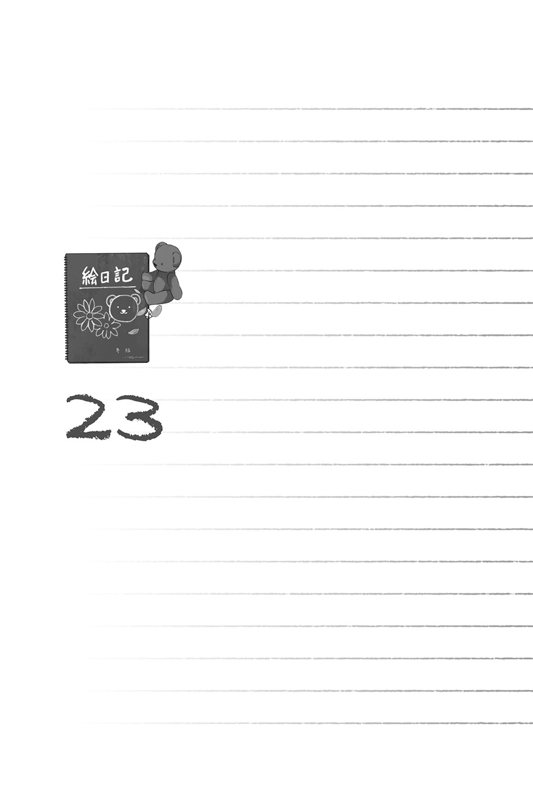所谓的爱，究竟是什么呢？……尽管我没有特别想成为诗人，不过最近在做面包时，我经常思考这个问题。现在的我已经很熟悉作业内容了，应该是因为做事时不需要动脑，大脑因此闲下来的缘故吧。
假如有人问，我爱不爱妹妹。
要我老实回答，我宁愿咬舌自尽，但我确实是深爱着妹妹的。
当然，是爱家人的那种亲爱。可是到了这把年纪，向世人大声宣称「我爱我妹妹」，不难想象会被曲解成什么样子。所以我才会烦恼起这个问题。
是珍惜对方吗？
还是借由对方为自己的付出来得到满足？
要偏重哪边，才算是爱呢？
只要稍有差池，就会变成青春期少年的烦恼。看看这把年纪依然烦恼那种事的自己，说不定我的精神年龄从高中之后就再也没有成长过了。话说回来，所谓的成年人又是什么呢？问题带来更多的问题。假如能够无视这些问题，若无其事地活着，不知该有多好？我常常有这种感想。
可是，对自己生出的东西视若无睹地活着，我没有那么不关心自己。
毕竟自己得和那些东西纠缠到老死，而且我也不讨厌那些东西。
已经熟练到即使闭着眼睛也能完成的一日工作结束。疲惫如凉冷的汗水，自背后扩散开来。我并不讨厌这种感觉。
我旋转着因长时间持续相同动作而僵硬的肩膀，膝窝的肌肉因解放感而松弛。
工作。活到明天。
说白了，所谓的长大成人，就是指工作赚钱。我一直是那么想的。
「唔——……」
妹妹哼哼唧唧起来。我等了半天，等不到她接下来的动作。
不得已，我只好主动发问。
【？？？】
她在被子上扭来扭去。虽然好像忙碌得很愉快，可是脸上没有笑容。皱着眉烦恼的模样实在很不适合她。到底怎么了？我抬头看向月历，今天是三月下旬的平常日，日期的格子里没有写上什么特别的预定，而且妹妹的生日已经在上个月过完了。虽然说她早就成年了，但还是毛毛躁躁的，离成熟稳重很遥远。
「我有个东西，要请哥哥——过目……」
说到这里，妹妹暂停了一下，嘴巴有如腹语术用的人偶般开合个不停。
「才怪。」
「所以没有东西要让我看？」
「本来有。」
过去式。结果还是没有东西要让我看吗？可是看她的样子，却又不是如此。
好像有什么内情。我不动声色地等她做好开口的决心。
妹妹的脸颊红得像两团红毛线球。房间里的温度不算高，应该不是因为太热的缘故。她时不时地偷瞧着我，我则是笑着看她。
妹妹似乎稍微安心了一点，拉长脖子，但是又马上缩了回去。动作之多让人眼花缭乱。
那模样让我也跟着有些坐立难安了起来。
最后，妹妹总算战战兢兢地把抱在胸前的东西如贡品般朝我递出。
那是一叠略厚的纸张。
「这啥？」
我接过那叠纸问道。
「……小说。」
「啊？」
妹妹低着头，音量又小，很难听清楚她在说什么。不过一会儿之后，我还是理解了话中之意。
小说。这个，是妹妹写的小说吗？
我想起前年妹妹在老家时说过的梦想。
我不由得凝视起手上那叠沉甸甸的稿纸。
「写完了啊？」
妹妹点点头。我偷眼看向她身后，信封袋之类的已经准备好了，只差把稿子寄出去参加新人奖征稿就大功告成。看来妹妹似乎是想在寄出去前先让我读过。
「自家人写的小说呢……唔……」
总觉得连自己都难为情了起来。所谓的小说，应该会比漫画更赤裸裸地展现作者的心境与想法吧。虽然这正是小说的有趣之处，可是在眼前这种情况下，反而让人相当难为情。
稿纸的右上方打了洞，以绳子串成一册。由于这是参赛用的原稿，我的动作也不禁谨慎了起来，得小心翻阅才行，要是弄皱封面或折到边角就不好了。
「唔——让我看看，小说标题是……」
「不要念出来啦——！」
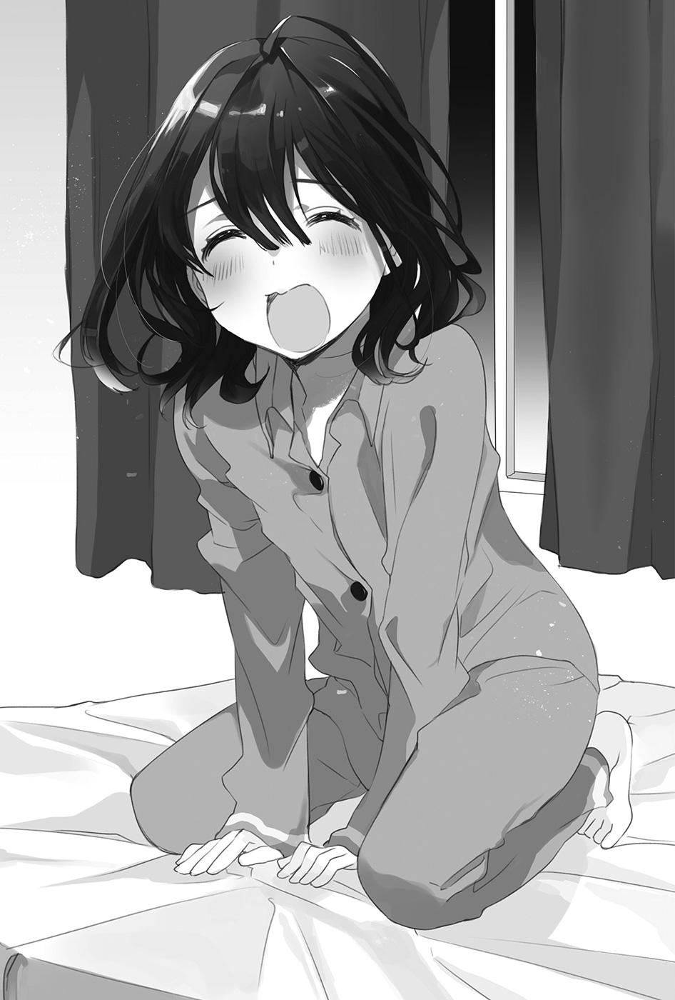妹妹跳起来制止我。我被她激动的样子吓了一跳，但还是告诫道：
「喂，别太大声。」
这里是公寓，不是老家，而且现在是晚上。妹妹立刻冷静下来，低下头。
「对不起——」
「嗯。」
「可是我觉得哥哥——也有不对的地方。」
「欸？我吗？」
「为什么要念出来呢？」
不行吗？我用眼神询问，不可以，妹妹也以眼神回答。看来不能念出声音。
「是说，你现在就要看吗？」
「唔，是啊。」
毕竟除了晚上，我没有时间看这些原稿。再说虽然我不知道收件日期是什么时候截止，但还是早点看完早点把稿子还给妹妹比较好。我看了一眼壁钟回道，妹妹原本就红冬冬的脸颊鼓了起来。每个动作、每个反应全都如此可爱。真的会让人忘了她的年纪。
「呜呜——」
妹妹躲到房间角落，背对着我跪坐在地上，捂住耳朵，身体无法冷静地左右摇晃不已。真有那么难为情的话，大可不必给我看啊？不过想想，妹妹应该也很想知道别人对自己作品的感想吧。这就是所谓艺术家的烦恼吗？
我有点疑惑地微微歪头，注意着不让自己念出声音，看向标题。
《魔塔》
大大地列印在稿纸上的两个文字。有种老派的感觉。
「这是严肃型的故事吗？」
「没听到。」
「是吗？话说回来今天的晚餐很好吃哦，谢谢你。」
「嗯。」
可以依情况决定听不听得见我的话，真是个伶俐的妹妹。
「这是推理小说？悬疑小说？还是爱情小说？」
我根据标题，把联想到的类型说出来，但妹妹只是捂着耳朵，听若罔闻。
唔，看过后就知道了？
稿纸上标有页码，我直接跳到最后，总共将近一二〇页。看来没办法轻轻松松地一下子看完。我调整姿势，伸直背脊正座，以严肃的表情面对稿纸。
也许是维持捂耳朵的姿势很累人吧，妹妹拉出被子，把自己裹了起来。他人在自己眼前阅读自己的作品，想象得出来妹妹现在的心情。虽然明白……但如果真的这么难为情的话，为什么想成为小说家呢？小说家的作品可是会被不特定多数人看到的哦。
「想睡觉的话，先去刷牙吧。」
「呜——」
妹妹从被子里伸出一只手挥动着，表示自己不会睡着。看她这心神不宁的样子，一时半刻应该也无法睡着吧。为了让妹妹早点冷静下来，我快马加鞭地看起小说。
「哦——」
「…………………………………………」
「嘿——」
「…………………………………………」
「嗯——」
「那个……不要发出声音啦……」
我无视妹妹的微弱抗议，埋头阅读。
接着。
在指针转了好几圈后。
「看完了。」
不知妹妹睡着没有，我压低音量说道。妹妹立刻从被子里弹起，跪坐地朝我蹭了过来。她默默挨到我胸前，仰头看着我。
眼中带着强烈的热度，混杂了焦躁、期待、不安等等的情绪。
脸上则深深印着被子的压痕。
「老师，您觉得如何呢？」
「不对不对，你才是老师啊，未来的大作家。」
「没有啦，哈哈哈。」
妹妹搔着颈子，自顾自地腼腆起来。对奉承话挺不行的嘛，真意外。
我小心翼翼地把原稿还给她，老实地说出感想：
「很好看哦。」
妹妹双眼圆睁，眼神发亮。原本浮动的热度汇集起来，转变成璨璨光芒。
「不过有错字就是了。」
「欸？在哪在哪？」
我把看的时候顺便做的笔记交了出去。妹妹接过写有页数与行数的纸片，扛着原稿跑到房间角落。有必要每件事都在角落做吗？
「怪了——我明明检查过那么多次——」
妹妹急急忙忙地确认起错字。我看着她，回想着小说的内容。
那是以高楼大厦为场景的悬疑小说。把大楼比喻成现代的高塔，以这样的观点叙事。主角无视他人的各种想法，任性妄为造成的结果，潜移默化地影响了许多人。是这样的故事。主角不但任性，或者该说没神经，而且还是个会在半夜穿着沾有死者肉片和血糊的衣服在大楼、城市里到处穿梭的怪人。妹妹居然写得出那样的角色，我反刍着这股奇妙的余味。
妹妹一向给人温和无害的感觉。从这样的她笔下迸发的暴力。
到底是从哪里生出这种东西的呢？人类真是深奥的生物。
先不管这点。坚持到最后，写出一个完整的故事，光是能做到这点就绝对比我有才能了。如果是我，还没写完第一张稿纸就会开始不耐烦，把笔扔了吧。以前在学校时，我最讨厌的就是作文了。不过妹妹应该也一样才对。
「以前明明连日记也没办法自己写的说……」
从当年到现在，也算是走了很长的一段路程呢。回忆着往事，我闭上眼睛，沉浸在老人家般的感慨里。
虽然觉得应该很难，不过，假如妹妹真的成为了小说家的话。
「……的话？」
现状会有什么改变吗？收入会增加，应该可以过得轻松一点吧。
……只有这样吗？
觉得不会有任何变化，是因为我缺乏想像力的缘故吧。
忽地，我想起了当年的她。
迷恋着她的那段日子，我一直相信那种快乐的情绪与氛围可以持续到永远。恋爱是盲目的，使我看不到终结之处。
可是那永远，并没有停留在这个房间里。
妹妹寄出小说后，过了两个月。初审结果似乎会在一个月后的七月公布。尽管妹妹表面上装得很平静，可是心里应该觉得很焦虑吧。
这是个开始。虽然不一定是结束，但还是会影响到妹妹的人生。
实际投稿过后，妹妹不再隐瞒自己写小说的事。放在房间角落小桌上的中古电脑没有接上网路，是写作专用的电脑。下班回家时，经常可以看到妹妹坐在电脑前，微微驼背地打字。有时也会热衷玩着电脑里的接龙游戏。
发现我回来，妹妹小跑步地跑到玄关迎接我。那模样就像猫咪一样。
「结果不是还没出来？已经在写下个故事了吗？」
「因为要是落选了，就得重新投稿啊。」
「……说的也是。」
主动说出有落选的可能，算是预先拉好防线吧？
虽然不知道妹妹说这些话时的真心程度，但光是表现出正面乐观的姿态，就已经很了不起了。而且还身体力行，就更不简单了。我一如往常地冲完澡，一面擦着头发，一面眺望着妹妹的背影。
为了帮妹妹实现梦想，有什么事是我能做的呢？直接帮忙写作是不可能的，帮忙收集必要的资料或者在妹妹和我讨论剧情时提供看法……我的意见有参考价值吗？毕竟我是个没有文学素养，而且经常被人嫌弃说话时不够风趣幽默、精彩生动的男人。
思考到这里，我稍微想起她的事。事到如今，除非像这样回忆过去，从记忆深处把她拉出来，否则她已经不会在我的日常生活中露脸了。如此一想，不再与她见面、大学毕业也已经过了好几年。回顾着自己的人生之路上的脚印，那是足以向所有人自豪的痕迹吗？
我会就这么一直马齿徒增吗？每星期工作五天，或者是六天，接着休息一天，如此不断重复，随着季节变化，愈来愈老。将来会是什么样子？我以远观的心情回忆开始衰老的双亲，想象自己的将来，但是，想不出会是什么样子。
下定决心做某事的妹妹，背影还是一样娇小，可是有一种坚毅的感觉。
就连不安的心情，也是独自面对、处理。
而我，能为这样的妹妹做的事，顶多只有维持目前的生活而已。
工作赚钱养她。这是我能为她做的事中，最有用的一件。
就算妹妹的梦想无法成真，我也会陪着她走到最后。
没有其他的选择。正是因为没有，所以现在，我才能和妹妹在这房间里一起生活。
「呐，哥哥——」
「嗯？」
「我真的有办法成为小说家吗？」
妹妹偶尔会寻求肯定似地这么问我。
每当这种时候，为了让妹妹的眼神变安稳，我总是会这么说。
「你想当不是吗？」
因为不是心想就一定能事成的梦想，所以不能轻易说出「当得上」。
但是，我相信妹妹的才能与种种努力。
「是——啊。」
穿着无袖上衣的妹妹做出卷袖子的动作，将又细又不堪一折的臂膀弯成L字型。
就算是现在，在我心中，妹妹还是那个年幼的小女孩。
可是现在，她正准备一个人完成什么事。
……真了不起。
这一定是值得欢迎的成长吧。
……可是。
我缓缓摇头，甩开某些蒸腾而起的情感。
目前最重要的是支持妹妹实现梦想，不是抱着负面想法的时期。
为了妹妹的梦想，努力赚钱。
我以许多美妙的言词填满心中的空洞。
原本朦胧不清的工作理由，现在有了淡淡的轮廓。
在工厂做到腰酸背痛时，我总是以妹妹作为精神泉源。
依季节不同，有时会差点被炎热打败、被厌倦的情绪压得抬不起头。那种时候，我通常也是以思念妹妹的力量来撑过去。
为了妹妹，所以我工作，所以我在这里，所以我活着。
通常，只要有强烈的动机，就能挨过困难、不满，以及痛苦。重要的是挨过，不是克服。就算不和困难正面冲突，还是有解决的方法。
人类真是很知道变通的生物呢。我心想。
对我来说，最能成为动机的事物，就是妹妹。
就兄长而言，我做得无可挑剔。但是公开说出这种话，应该只会被周围的人当成恶心的变态吧。之前曾共事过的打工大婶的眼神，至今还是令我难以忘怀。
能做出这种判断，表示我还没抛弃世间的常识。
但是，拼命地伪装自己，把真正的自我隐藏起来，反而使我个人的常识出现扭曲，开始惨叫。
「…………………………………………」
今天早上，妹妹一面煎着半熟荷包蛋，一面说道。
「今天会公布初审结果。」
「这样啊？」
「就是这样。」
妹妹不知为何一直旋转着手臂。这算是所谓的坐立不安吗？
「结果出来，我会传讯息跟哥哥——报告的。」
「好。」
等你的好消息。直到出门，我都说不出这句话。
由于早上有这样的一段对话，因此在午休时，我打开了手机的电源。这是自家人的重要大事，让我觉得心脏发疼。
我略带紧张地打开了妹妹的信件。
『被刷掉了(〉_〈)』
没有内文，只以标题报告结果。虽然加了表情符号，但是，内容很简短。
见到结果的瞬间，除了眼珠子留在现场之外，我觉得脑子好像飞到很远的地方去了。有种乖离的感觉。
「是这样啊……真可惜。」
我对着没有开启通话功能的手机安慰道。直接打电话和妹妹说，应该会比较好吧？我单手拿着电话，或站或坐，拿不定主意。该出声安慰她呢？还是让她一个人静一静好呢？
附加的表情符号中也许有什么含意，可是我不知该如何解读。
我已经不再年轻，搞不懂这些了——我困扰地搔着头。
迷惘到最后，我决定不打电话。因为如果是我，会希望能够独处一阵子。到头来，行事基准仍然都是自己。完全以对方为基准采取行动，实在是很难做到的事。
也许是因为这件事的影响吧，下午开工后，我的工作态度变得有点潦草。近乎动摇的感情使我的动作变得很危险。下班回去前，同事叮嘱我今天做得很心不在焉。我干脆地低头道歉后直接离去。边走边想着，我该以什么样的表情回家。
走到公寓前，我才想到应该买点东西给妹妹作为安慰，不过已经太迟了。要回头买糖果点心吗？我犹豫了一会儿，最后决定两手空空地进门。为了买礼物而晚归，还不如早点回去。
希望气氛不会太凝重。我一面祈祷，一面打开门。
我站在玄关，妹妹一如往常摇摇摆摆地跑出来迎接我。
脸上没有哭过的痕迹，让我暗暗松了一口气。
「我回来了。」
「欢迎回来——」
妹妹有些羞涩地笑道，似乎也在烦恼该以什么样的表情面对我。
打过招呼后，话题自然地转到落选的事。
「真可惜。」
我一面脱鞋，一面说道。妹妹点点头：
「是啊……不过——也没办法嘛。」
妹妹沉稳地，缓慢地选择着词汇，笑着说道。虽然有点柔弱，但看不出悲观的成分，我觉得是很坚强的笑容。
「我觉得很好看啊。」
「嗯——其实我本来也有一点点信心。」
所以很失望。妹妹以夸张的动作垂头丧气，开起玩笑。
这种时候应该笑才对吧？我配合着妹妹，抖动肩膀笑了起来。
波折，是有的。但两人很有默契地，尽可能地把影响降到最低。
就夏季的夜晚而言，算是很平稳的场面。
晚餐后，收拾过餐具，妹妹扑到电脑前坐下。
「你不再偷偷写作了呢。」
「自从让哥哥——看过之后，我胆子就变得有点大了。」
「哦？」
这就让人想考验看看真假了。我趁着妹妹看着萤幕，露出许多破绽时——
「哇！」
冷不防地在她背后叫道。妹妹从座垫上弹起，不明所以，慌慌张张地转过头。由于不能吵到邻居，我的叫声不算大，不过受惊的程度和声音大小似乎不一定成正比。等到妹妹稍微冷静下来，我奸笑道：
「看来火候还不够呢。」
「咕噜噜～～」
妹妹露出贝齿，可爱地呲牙裂嘴，感觉起来好像还有乳齿混在其中似的。
与小说家什么的无缘般的稚嫩形貌。
「这么说来，我有件事一直忘了问你。」
「耶？」
「你为什么想当小说家啊？」
虽然从以前就知道妹妹想成为小说家，但是没问过动机。
妹妹欲言又止地把手指放在下巴上，沉吟了起来。
「唔——……秘密。」
「秘密？是不能说的事吗？」
我追问着。妹妹笑着打哈哈道：
「等真的当上小说家再说。不过可以给一点点提示，就是和哥哥——有关。」
「啥？我吗？」
「因为哥哥——几乎是我人生的全部嘛。」
妹妹若无其事地，理所当然地，略带自豪地说道。那因该是她的无心之言吧，但是光是满脸笑容地说出那样的话，就足以让我万分惊讶了。
就日语而言，是有点微妙的句子。但我没有不识相到会去指出这点。
而且最重要的，是这句话让我感到相当难为情。
就如同妹妹是我人生中的主要成分，她也同样是如此。
我脑中闪过不再与我们联络的双亲身影，不过，我还是不想否定我们的关系。
「等我靠版税变成有钱人时，就让我来养哥哥——吧。」
「哈、哈哈哈。」
我心窝有如被人轻打一拳似地吐了口气，为了掩饰这事笑了起来。
「啊！你不相信。」
「不，不是这样啦。」
不是不相信妹妹的梦想，只是单纯觉得那种场面没有真实感。
让妹妹养我。
「到时候，我就改叫你姐姐吧？」
我努力地开玩笑道，妹妹视线飘来飘去，琢磨起来。
接着，软绵绵地苦笑道：
「感觉很不对呢。」
「是啊是啊。」
「你要说『没这回事』啦——」
妹妹微噘着嘴巴说完，又回去写作了。这次我不再打扰她，安分地坐下，打开电视，调小音量，撑着下巴看了起来。
电视节目的内容我几乎没有看进去。
刚才那些不关紧要的对话在我脑中转来转去。
假如妹妹真的能独立生活，甚至能养活我。
虽然现在只是开开玩笑，但假如真的有那么一天。
不需要抚养妹妹的话，我应该只剩下惰性吧。
没有比靠着惰性活着的无意义人生更可怕的事了。
一旦意识到这件事，我有种被倾盆大雨浇淋似的感觉。
我并不热爱劳动。
也不想每天工作到腰酸背痛。
如果可以脱离那种生活当然很好，可是。
必须逃避真正的想法。不能老实地面对它、接受它。
直到这时，我才发现自己胸中一直抱着一股不安定的感情。
半夜醒来，微弱的光线隐约地照亮房间。是电脑萤幕的光。
虽然亮度无法看清墙上时钟，不过夜应该已经很深了。妹妹仍然醒着没睡。
比自己晚睡的妹妹身影，该说看起来有些朦胧吗？……总之，我觉得有种别扭感。
「还不睡啊？」
我问道，微驼着背打字的妹妹回过头，萤幕照亮了她右半侧的脸庞。
「再一页就满一百页了。」
「哦……」
也许是因为身体还没完全清醒吧，我的回应听来有些口齿不清。
「而且我白天睡得很饱，所以没关系啦。」
「是吗？」
「虽然说在哥哥——辛苦赚钱时睡觉，有点良心不安就是了。」
「哈哈哈……不过啊，还是要早点睡，对身体比较好哦。」
提醒过妹妹后，我再次以被子盖住肩膀，闭上双眼。侧躺时，双手会自然地交叠在胸前，这是我在睡觉时的特殊习惯。之所以会养成这种习惯，也许是因为原本分隔在躯干两侧的双臂能够靠拢在一起，让我感到安心的缘故吧。
我以键盘声为背景音乐，凝视着黑暗。感觉起来，那硬质的敲击声，似乎直接敲进我脑内似的。
我听着那声音，意识渐渐被黑暗所埋没。
妹妹在这狭窄的房间里孕育她的梦想。
我则支持着妹妹追求梦想。
两者都是让这个房间成为我俩容身之处的主要原因。这些原因有如温暖的棉被，令我感到安心。同时，也有种再也无法回头的想法。
兄妹俩相依为命的生活是如此舒适，舒适到再也无法脱离了。
「呶啊——」
妹妹正抱着头，不住地扭动。瓶颈……是陷入那类的情况之中吗？
由于她的惨叫声太可爱，听起来甚至有点像在开玩笑。
陷入低潮的模样已经有大家风范了。不对，其实我也不知道作家们陷入低潮时是什么样子。
「怎么啦？大作家。」
虽然我不认为自己帮得上忙，但还是姑且问问看。
妹妹想参加的新人奖投稿截止日期在四月上旬。她去年似乎也是参加同一个比赛。为什么要挑那里投稿呢？因为那是大出版社办的比赛。妹妹如此回答。想以写作维生的话，最好还是从大出版社出道比较有机会成功。似乎是基于这样的理由。
没想到那个妹妹有做出如此脚踏实地发言的一天。
先不论「想成为小说家」这个愿望本身就已经够不脚踏实地的这一点。
「呶啊——」
妹妹继续苦恼着，看样子，她没听到我刚才的发问。
「喂——」
我从旁介入电脑与妹妹之间。极其苦恼的妹妹将目光放在我身上。
表情与当年那个仰望着我说写不出日记的小女孩如出一辙。
「我想不出怎么收尾嘛。」
「收尾？」
「就是结局的部分，照目前这个样子，剧情没有高低起伏，太无聊了——」
「哦……」
「炸药……爆炸……唔——」
妹妹喃喃自语着一些危险的字眼，自顾自地沉吟起来，看来似乎没有和我讨论的意思。跟当年写日记时差很多嘛。寂寥般的感情涌上心头，我轻轻耸了耸肩。
我偷眼看向萤幕中的文件。
从档案名称可以推测，第二部作品的标题应该是《秘宝》。
又是个老派的标题。
不知妹妹是抱着什么样的意念，才会如此命名的呢？
如此这般地，妹妹寄出了她的第二部作品。
三个月后的七月，初审结果公布。妹妹传了短讯，向我报告比赛结果……与去年一模一样的发展，令人有种该不会连结局都一样吧？的想法。不过说到毫无变化，我自己也同样一成不变。工作内容没有任何变化，唯一的差异，只有运来的面包种类不同。
员工们来来去去，面包种类换来换去。一直停留在原地的，只有我而已。
我趁着午休时打开信箱。喂喂喂，连这部分也一模一样吗？我不禁苦笑起来，多少做好觉悟后，我点开了妹妹的信。接着，眨眼的次数自然而然地多了起来。
之后。
『没被刷掉(〉_〈)』
「哦哦……哦哦？」
强烈的既视感。不论是字句，或者表情符号。
我找出之前的通讯记录，果然整句话和去年的信几乎一模一样。
这个表情符号有这么万用吗？
「唔，总之……太好了。」
至少今天回家时，不会有两张阴沉的脸面面相觑了。
紧绷的肩膀垮了下来，我呼了口气，仰头看向天花板。视线因疲劳而显得有些模糊。
下班回家时，妹妹正岔开双脚地站在门口迎接我。
「哇哈哈——」
妹妹神气地……神气？地笑着。手交叉在胸前，小孩似地挺直了背脊。
「恭喜啊。」
我摸了摸她的头，妹妹的嘴角发痒似地扭动不已。就妹妹而言，得到外人的正面评价是很稀罕的情况，所以要大肆庆祝一番才对。虽然有这种想法，可是我的心却不怎么雀跃。
「不过接下来才是重点呢。」
「嗯。」
「得努力祈祷才行——」
唔呣唔呣——妹妹搓着十指，对墙壁发送起诡异的念力。
是因为通过初审，兴奋过头了，才会出现这种奇妙的行径吧。我对此一笑置之。
如果明天还在继续，再来担心吧。
「哈哈哈……」
笑声如空气般地，从牙缝之间透出。
初审不是什么大事。
没错，接下来才是重点。
我是真心希望妹妹成为小说家吗？
对于将来可能发生的情况，目前的我只有模糊的预感，还没产生自觉。
但继续前进的话，说不定会让自己笼罩上阴影。
举个例子，现在我的脚并不痛。
可是只要一个不留神，跌一跤擦伤的话，就会出现痛感了。
平安无事，是一种脆弱、容易受到破坏的状态。
不到一个月，那预感就成真了。
早在第二次复审结果公布前，妹妹的手机就响了起来。
一开始，妹妹不知道是谁打来的，「喂？」她疑惑地歪头接起手机。我一面以筷子分解晚餐的青花鱼，一面看着她讲电话。「是——！」接着，我被突然正襟危坐，毕恭毕敬说话的她吓了一跳。在那之后，妹妹宛如点头娃娃般不停地点头。我想，对方说的话，她应该有一大半都没听进去吧。
「跟你说跟你说——」
「哦，哦哦……」
结束通话后，妹妹兴奋地挥舞双臂，滔滔不绝地说明。
尽管内容相当跳跃又没头没脑、难以理解，但是经过整理后，简单来说，就是妹妹的作品其实已经通过第三次复审，进入最后的审查阶段了。而且，来到这阶段的话，不论最后会不会得奖，妹妹的作品都有很高的机会付梓成书。
慌手慌脚、双眼圆睁、张口结舌。就是这种程度的冲击。
口中的晚餐因此变得干枯无味，也是理所当然的事。
在那之后，又过了约两个月。对我来说这是转眼即逝的时间，但是对妹妹而言，应该是相当漫长的时光吧。九月底，编辑再次来电与妹妹联系。照妹妹的说法，那是声音听起来很正经的男性。不过一般而言，谈公事时本来就该很正经吧。
妹妹前倾着上半身与那男性应答着。事情发展到这里，连我也不由得紧张了起来，绷着脸，屏气吞声地等待后续。半晌后，结束通话的妹妹满脸通红地对我宣布结果。
听到结果的瞬间，我想，我的意识应该存在于比后脑勺略高之处吧。
居高临下地俯视自己。没有接受这件事的真实感。
为什么呢？这不是重要家人的人生大事吗？
心情与现实的距离变得相当遥远，仿佛为了闪避疼痛似的。
妹妹得的似乎是特别奖或鼓励奖之类的奖项。尽管没有得到大奖，但作品确定会出版问世。也就是说，妹妹真的要成为作家了。
哦——哦——听到这话的瞬间，我有种眼珠上翻，快要昏倒的感觉。
在那之后，妹妹接到出版社叫她到东京参加颁奖典礼的通知，慌了起来。
「我没去过东京啊——」
「我也没有哇。」
看着慌乱不已的妹妹，当哥哥的我也无法掩饰自己的动摇。乡巴佬兄妹头碰头地烦恼着该怎么做才好。但是我想，我们两人担心的事应该完全不同吧。
「总之，得换新手机才行呢。」
我看着映入眼中的手机，建议道。妹妹被浇冷水似地眯起眼睛。
既然要长时间待在东京，就只能以手机互相联络了。但是妹妹的手机太旧，假如不插在充电器上，几分钟后就会没电，没办法在外头使用。
「可是……」
「就算换新手机，旧手机还是可以留下来啊。」
「嗯……」
对妹妹而言，重要的不是通话功能，而是她的朋友宝宝熊。
只要留下手机，就能继续和宝宝熊交流。我如此说服了妹妹，让她答应换新手机。
如果是以前的她，可能不会接受这提议吧。但是为了梦想，也只好妥协了。
尽管是我主动建议的，但是对她的反应，却有种坐立难安的感觉。
明明不是什么大事，为什么会觉得这件事将会成为一道裂痕呢？
虽然如此，我还是为了克尽身为兄长的职责，行动了起来。
我趁着休假，带着妹妹前往大型购物中心的手机店（我也不知道这种称呼方式正不正确）换手机。妹妹只花十秒左右就选好新机，对她而言，每只手机应该都差不多吧。向手机店问各种问题，请店员推荐方案，签约等等的事全是由我一手包办，妹妹只负责坐在一旁，安分地等我办完手机。
这样真的没问题吗？真的有办法好好与编辑进行交涉吗？我不禁担心了起来。
……但同时，这样的态度让我感到安心，也是事实。
花了一点时间换好新手机后，我请店员把旧的蓝色手机还回来。对方却在归还前警告道：
「这只手机的电池和充电器的接点部分已经快坏了哦。」
「咦？」
「充电时手机本身会发热，这样有点危险哦。」
不用说，妹妹的脸庞因此出现阴霾。
直到踏入家门为止，妹妹一直紧握着旧手机，看也不看新手机一眼。虽然建议她换手机的我觉得也该负点责任，可是不知该说什么才好。然而，不用理店员的鬼扯啦，那种话我也说不出口。虽然无法确定机率有多高，但既然有可能酿成火灾，就不能随意否定店员的意见。
「要是发生火灾，就不好了呢。」
一路无语地回到公寓后，妹妹以有气无力的笑容如此说道。
说完，她不把旧手机插回充电器上，而是小心翼翼地将其收进柜子的角落。在那之后，妹妹似乎对我说了什么，但我的心思在看着她收起手机时飞得老远，听觉也跟着变得朦胧，无法理解妹妹的话。
某些事情开始发展，某些古老的事物则不断地被取代……所谓的物换星移，从这件事中可以窥见一二。
但是，我一点也不喜欢这样的变化。
我趁着妹妹不在房间时，将那只蓝色手机拿在手上。
失去朋友的妹妹，现在应该很失落吧？
但是。
就像在我心中，与她相处的回忆、与她分手的感情逐渐淡化，总有一天，妹妹应该也会遗忘这分友情以及丧失朋友时的伤痛，打从心底绽放笑容吧？
想到这里，我不禁毛骨悚然。
颁奖的那天，我理所当然地，一如往常地在工厂里上班。尽管妹妹脸上写着希望我也一起去东京，但我无法把工作丢着不管。
……不。不对，不是这样的。
其实我大可请假陪妹妹去东京。
明明做得到，却不肯做。
为什么不想陪妹妹去东京呢？类似固执的，惰性般的，绝对算不上正向的情感与意念呈漩涡状搅拌不已。歉疚感紧勒着内脏，呼吸中带着胃酸的味道。
我放空大脑做事，偶尔喃喃自语。
「东京吗？」
只在电视中看过的大都会。如今，妹妹一个人在那里。
妹妹超越自己，跑到前头去了。这个事实撼动着我的体内器官，让我有种忧心如醉的感觉。
东京那边应该正在进行颁奖典礼吧？
在妹妹头上熠熠生辉的，过剩的照明。彩虹般既辽阔又斑斓的梦想。
那是与花费太多力气在生存一事上的我无缘的场面。
工作到一个段落，午休时间，我仰望着天花板。
不管再怎么看，工厂的天花板仍然只有单调的颜色，看不到任何美梦。
夜深了。总算从劳动中解放的我坐在房间里。
妹妹的电话响起时，我正处于不知该做什么才好的迷惘状态。
我看了一眼放在房间角落的，妹妹的旧手机，拿起自己的那只。
「喂？」
电话接通。妹妹还没开口，背景的喧闹声已然钻入我耳中。
『啊，哥哥——晚安。』
「噢。」
『颁奖典礼刚结束，现在出版社要带我们去吃饭兼开庆祝会。』
「哦……颁奖过程怎么样？有很紧张吗？」
『超——紧张的啦——』
回话的声音比平常轻快，多半还带着点高亢。
这也是当然的。因为梦想成真了嘛。
『上台时，我两脚一直发抖呢！』
「应该的啦。」
我最后一次上台，是在高中领毕业证书时。大学的毕业典礼，我没有参加。
『不过怎么说……好像作梦一样呢。』
「是吗……是说——你在那边没有可以说话的对象，不会很无聊吗？」
与其说是担心，不如说更接近期盼妹妹孤伶伶的场面。我心中多少怀着这样的想法。
流经手腕和颈部的血液，仿佛凝滞不动似的。
『唔——？』
「嗯……？」
『因为有哥哥——认识的人在，唔——所以有一点点还好？』
「……认识的人？」
谁啊？我怎么可能认识出版界的人。
『这个人。』
妹妹说完停顿了一会儿，传来一张照片。
「啊。」
照片的背景是热闹的店内，中央有个人影。一见到那张不修边幅的脸，我立刻想起来了，是和我同时进面包工厂的同事。虽然说是同事，但对方只上了三个月的班就辞职了，没想到还有再次看到那张脸的一天。而且，因为是这样的场面，所以他还显得有点意气风发。确实是那家伙没错。最后一次见到他，应该是四、五年前的事了吧。
既然他和妹妹在一起，表示他真的成为小说家了？
我的脑子既混乱又迷惑。
『哥哥——和他一起工作过对吧？』
「嗯。他那时有看过你呢……居然还记得你啊？」
也许是因为妹妹的外表与当年完全没变的缘故吧。
『他说要和你讲电话。』
「咦？啊、啊！」
虽然勉强算得上泛泛之交，但我和他又没什么好聊的。
『唷。』
听筒中的声音变成低沉又兴奋的男声。
「哦，好久不见……」
『你还是在那边上班？』
劈头就询问近况。虽然我觉得不太舒服，但还是老实答道：
「是啊。」
『哦——』
预感只有在不好的事时才会特别准。
会觉得对方那极为普通的反应中带着嘲弄之意，是我自己的问题吗？
「把电话还我妹妹。」
『好好好。』
还有，快点从我和我妹妹眼前消失！
我很想追加这句话。我们只是当过一阵子同事而已，可不是特别熟。
听筒中的声音变了回来。
『哥哥——你已经下班了？』
「是啊。」
『真了不起——』
「哪有……」
『我有很多话想跟哥哥——说，不过，唔，还是回去之后再说吧？』
「是啊……还是当面听你说比较好呢。」
我做出看时钟的模样。照理说隔着电话，对方是无法明白自己正在做什么动作的。可是现在和我通话的，是彼此亲密、熟悉到能够明白我会有什么举动的人。
但就算是那么了解我的妹妹，也无法明白我现在的心境。
「你就好好享受庆祝会吧。」
『唔——嗯。』
尽管知道妹妹没那种兴致，我还是为了早点结束通话而那么说了。切断通话后，我把手机扔到一旁。疲劳如一面厚实的墙，从正前方朝我逼来，使我跌坐在被子上。
深秋的夜晚，即使窗户紧闭也不会觉得不透气。热水澡泡太久，使我出现耳鸣。我把毛巾挂在没怎么擦拭的头发上，让自己漂荡在泡澡后的晕沉感中。
我还有工作要做。没陪着妹妹去东京，不是错误的决定。
一个人待在这个房间，应该是正确的选择。
尽管如此，今晚还是有特别疲惫的感觉。躯干僵硬得有如墙柱，沉重得不像自己的身体。就算只是一点小事，即使只是落在睫毛上的，轻飘飘的细雪，有时也会意外地沉重难耐。因为人类的身体不是单纯靠着肌肉动作的，因为，燃料是从心产生的。
喉咙与嘴唇保持着沉默。酸液在胃底不断翻滚，仿佛被温火炖煮似的。虽然很累，可是闷在胃中的东西无处宣泄，即使不想坐着，也不得不坐下。让人很想抓狂。
很想以双手紧抱身体似地，疯狂地抓烂全身肌肤。我静静地忍耐着，直到这股冲动过去。
妹妹不在这里，是正确的决定。
但是，很多东西好像因此产生缺损了。不是指这几天的事，而是对于遥远未来的预感。我明白自己即将面临各种失落。
一条粗大的直线隔开了我与妹妹。
位在分隔线另一侧的妹妹即将加速离去，离我愈来愈远。
我无法缩短两人间的距离。迟早，会变成只能以目光追随她那又远又小的身影。
在远方受人赞美的妹妹。连欢呼声都很遥远。
那欢呼里似乎带有棉花的成分，不断膨胀，撞到我的额头。
「……啊啊。」
对了。
是这样啊。
我的妹妹相当可爱。我想起了这件事。
我让脚踝朝躯干靠拢，维持着盘腿的动作，向后倒下。
肌肤感觉得出秋天已经结束的时节，至今为止一直没有用处的妹妹手机开始频繁响起。妹妹的处女作预定在明年二月出版，编辑经常打电话找妹妹讨论改稿及其他的事情。对于无视昼夜之别打来的电话，妹妹总是很有精神地回应。每当那种时候，我都会安分地坐在房间角落，盯着脚尖，捏着趾甲，避免打扰妹妹。
不论要等上一小时，或者两小时。
碰上那种情况时，我总是不思考任何事。不是故意那么做，而是因为心情紧绷，无法进行思考的缘故。整个身心变得如铜像般僵硬，只能没有想法、没有作为地任凭时间流逝。
「是……页数的……是，没问题。这边的话，唔——……是这样吗？我不是很清楚……」
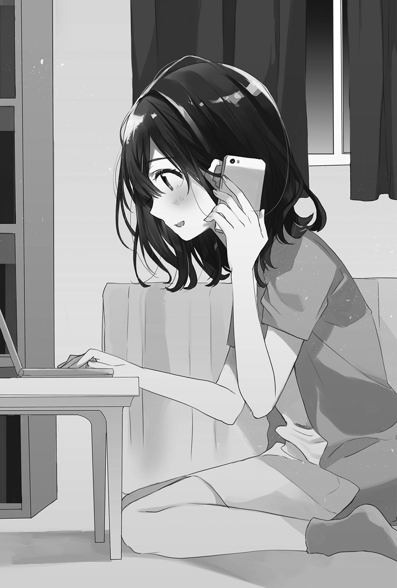说起话来条理分明，有时还会因为对方的话而发出笑声。
仔细想想，这可能是我第一次见到妹妹一本正经地与家人之外的对象说话吧。
「…………………………………………」
铜像上多了一道刮伤。不会痛，只是掉了漆而已。
名为哥哥的涂料，碎成粉末，灰飞烟灭。
与编辑的讨论不只在电话里进行，有时还会被叫去远在东京的出版社当面讨论。由于没办法当天来回，因此妹妹会急急忙忙地收行李，出门搭乘地铁。
「真辛苦。」
挺快乐的嘛。只有一次，我差点对妹妹如此说道。
「嗯。不过我会加油。」
加油——妹妹卷着袖子，仿佛想展示她那手无缚鸡之力的臂膀似地说道。
当初叫她好好加油的人是我，所以我也只能笑着目送她离去。
只是如此一来，我就变得形单影只了。深夜下班回家，面对空无一人的房间，不只心情，连身体都会沉重到仿佛灌了铅似的。
重力把身体扯得变形，精力从拉扯造成的缺口中奔泄而出。
那样的日子，我通常是粒米未进地躺到天亮。
当然，也不会有妹妹的便当。我连白天时吃过什么都想不起来。
对妹妹而言，从十月左右到出书为止，应该是段忙到不可开交的时间吧。相对地，我则是无可避免地面对着自己的生活如此单调、呆板的事实，厌烦着每天为何如此漫长。想叹气的次数飞跃性地增加，但我还是努力不让那些气吐露出来。
忍耐、累积在身体里的东西，就算哪天爆发了也不奇怪。
这样的日子持续着，直到二月。
月份转变成二月的那天，妹妹的出道作寄到家里。
作者似乎能在出版日前十天左右拿到样书。妹妹解开横绑成长条状，有如法国面包般的包裹，从其中拿出自己的书。接着双眼闪闪发亮，仿佛划破黑夜的曙光。
「哦哦……锵锵锵锵——！」
享受了一阵子感动后，妹妹把书举到与额头齐高之处。封面上印着可爱的插图，以及妹妹的笔名。看惯了的那名字，被印在书皮上。见到那一幕，一种浓稠的感情在我身体里流动起来，胃液因那绝对称不上愉快的感情而翻腾不已。我不断地吞着口水咽下胃液，撑着脸颊的手，指尖部分像是为了分散注意力似地抖个不停。
「嘿嘿——」
妹妹天真无邪地把书秀给我看。眼皮上似乎有什么东西在不停地闪烁。
原本的标题《秘宝》，在印成实体书时，已经消失得无影无踪了。
「真是太好了。」
从我喉咙发出的声音听来如此遥远，仿佛出自别人之口。
我站了起来。妹妹以把玩着新玩具的表情仰望着我。
「哥哥——？」
「不知道为什么，看到你就想起有东西忘了买。」
我说着，套上外衣，准备出门。
「为——么？」
「我也不知道。」
我抓着头发，焦躁的情绪使得朝玄关前进的脚步自然而然地快了起来。
妹妹从身后摇摇摆摆地跟了上来。
「我也要一起去。」
「不用了，外面很冷。我马上就会回来。」
「欸——」
「反正机会难得，你就好好欣赏自己的书吧。」
坚持独自出门的我，如此说服了妹妹。
一走到屋外，原本上扬的嘴角立刻垂下，被寒冷凝固成型。
我大大地呼了一口气，离开公寓。
没有什么必须买的东西。
尽管不是特别想去，但我的双脚还是朝着大学的方向迈进。走在坡道上，擦过耳畔的风冷冽到好似会划伤人。呼吸仿佛卡在后方的齿缝间，不自然的感觉让我很焦躁。
就算如此，我还是不停步地走到通往大学的上坡路前。夜深了，但沿着坡道上升的微弱灯光还是隐约可见。我仰望了那些灯光一会儿，试着向上爬。
来学校接妹妹时，我总是在上坡路的下方等她。有多少年没走在这条坡道上了呢？大学的寒假很长，印象中没有太多机会走在冬季的坡道上。我对此觉得新鲜，同时又感到委顿。
下班后的夜晚，上坡路比想象中的更难走。
腰背酸痛，没办法继续前进。
我放弃爬坡，倒在路上。
倒下时，我没有做防御动作，身体重重地撞在柏油路上。幸好我是朝着下坡向后栽倒的，因此是屁股先着地，接着是背部，最后才是后脑狠狠磕向地面。尽管知道这么做会摔痛自己，但我还是无法控制自己不去做。我躺在地上，发出呻吟般的叹息。
血液流经遭到碰撞的部位，地面上的碎石和砂粒仿佛隔着衣服沾黏在肌肤上。我动也不动地躺在地上。由于我是头下脚上地躺着，血液因此集中到脑部，开始耳鸣。
「妹妹的书，是吗？」
不论深呼吸多少次，还是无法把那种与睡意相似的迷惘感觉排出体外。
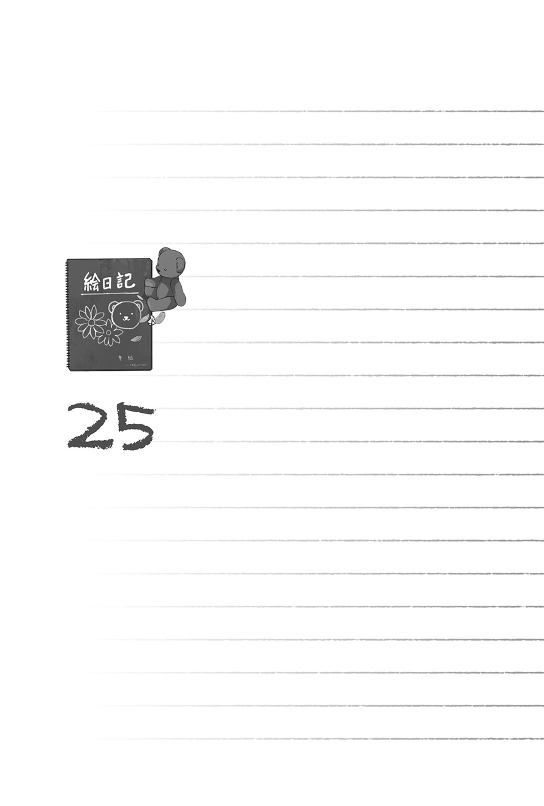让雏鸟不长出羽翼地长大，鸟儿会感到幸福吗？
尽管活着，难道它们不会觉得，无法展翅翱翔的生活圈极为局促吗？
假如妹妹一直趴在我背上，不肯下来自己走路，等同于亲手摘除潜藏着某种才能，将来可能开出美丽花朵的嫩芽。所以，妹妹从我背上跳下，挑战世界，是正确的决定。
我想，大多数的人都宁愿让所谓的才能在世界中不断巡环，不想见到才能沉淀吧。
身为人类，身为兄长，我很肯定这是极为正确的决定。
可是，那么做只迎合了「正确」两个字，对我个人而言，除了失去还是失去。
「正确」无法拯救我。
『果然还是该改在其他日子才好呢。』
窝在饭店里的妹妹，八成是一边摇晃着双腿，一边这么说的吧。
我忍住同意她这些话的冲动，端出哥哥的架子说道：
「说什么傻话啊，这可是为将来事业铺路的重要应酬哦？」
舌头不因酷寒的气温而冻结。与我的心境相反，灵活地翻动着。
「所谓的社会人士在这方面是很严格的哦。大概吧。」
『怎么觉得你说得不太有信心呢？』
「你想太多了。」
因为我自己也没多少经验，又硬要说大话的缘故。
『可是我不习惯和哥哥——之外的人吃饭啊……』
妹妹嘟哝道。啊啊，说的也是。我感慨良多了起来。
「得快点习惯才行呢……」
安慰妹妹的声音听起来有气无力，有如泄了气的皮球。
你也差不多该出门了吧。如此催促完妹妹后，我切断了通话。
我用扔的似地把手机放在地板上，呈大字型躺下。
平时显得狭窄的房间，现在，即使手脚全部张开伸直也构不着墙壁。
今天得一个人过生日了。不是我的，而是妹妹的生日。
二月十四日。今天是妹妹第一本书上市后的第四天，也是第一个本人不在场的生日。为了庆祝处女作的出版，妹妹被出版社叫到东京，顺便也受邀参加同届得奖作者的同期交流会。基本上我会去露个脸啦，妹妹是这么说的。和我待过同一个工厂的那个前同事，应该也会去吧。
「算了，反正就是这么回事吧……」
妹妹已经是社会人士了。像这样时间上无法配合，没办法凑在一起的情况，理所当然会增加。
只不过，这次刚好碰上她的生日罢了。
「……不对……不是这样的……」
只不过，刚好，罢了。这些话完全是违心之论。显而易见的消沉情绪，让我无法继续坚持这些谎言。
失落感与疲惫感交叠在一起，显得又重又苦。
那天是我生日，还是请对方改日期好了。妹妹从一开始就是那么说的。
既然和事业有关，你还是去吧。如此说服她前往东京的人，是我。
为了假装自己是明白事理的好哥哥。下场就是，孤伶伶地品尝凄苦的滋味。
不过是一、两天见不到面而已，又没什么大不了的。应该有人会这么认为吧。
可是，看到被虫子啃蚀过的痕迹时，应该没有人会不心生厌恶之情吧。
就算啃蚀的痕迹再小也一样。
为了接电话而来不及擦干的发丝黏在颈部，沾湿了皮肤。胃部翻绞不已，口中满是焦渴的味道。明明才刚出浴，身体又已经开始哭诉起好冷好冷了。
一个人在房间里发冷很没意思，但说到出门，就更加提不起劲。身上残留着工作造成的疲劳，而且即使再不愿意面对，明天还是要上班，没有余力也没有时间去接妹妹。从各方面来说，我都没有余裕那么做。
「习惯这种事，吗……」
话脱口而出。尽管是自己的声音，我也无法不感到憎恶。
我真的有办法接受渐渐习惯与其他人在一起的妹妹吗？
只要稍微想象一下，就知道那是不可能的事。
可是再多想一下，就知道尽管不可能，早晚还是要面对这样的现实。
一旦想象起那样的将来，肠子就开始痉挛似地发疼。空腹与压力让人身心俱疲。
心情之所以如此沉重，还没吃晚餐的事实也是帮凶之一吧。
必须趁着身体完全无法动弹之前，切断眼前这种恶性循环才行。
不得已，我换上外出服，拿起钱包离开房间。由于走得匆忙，因此头发仍然是湿的。
即使再不愿意，冷冽的夜间空气还是透过呼吸，侵入体内。
我很快就对出门的决定感到后悔。
要是再下一场雪，我就差不多死定了。可惜天空几乎万里无云，不可能下雪。没有浮云的夜空感觉不出深度，就算仰望苍穹，也无法将胸中的阴霾一扫而空。
走着走着，有种身体从小腿部分开始崩裂的错觉。织线无力地从由布块组成般的肉体簌簌掉落。疲劳、困倦与饥饿，身体没有余力承受三重痛苦带来的心神耗弱，难以维持自我的形态。
不是因为想改变什么。
应该说，是因为不想改变。
不论是妹妹，或是只一起工作过三个月的前同事。
看着那些实现梦想的人，我完全没有羡慕之情。
我有属于自己的生存方式。鸟类与人类的居住场所高度不同，可是没有优劣之分。
重点是，我那生存方式的根底部分正在动摇。虽然目前只有极细微的裂痕。
可是我有预感，龟裂会渐渐、渐渐地扩大。
今后，我与妹妹间的距离将会愈来愈远。
别说明天了，人类连五分钟后的未来都无法预测；尽管如此，却又能模糊地察觉自身所处的波流中的微妙变化，看得出潜藏在其中的阴影，实在是一种很麻烦的生物。假如能更驽钝一点，察觉不到所有细节地活着，不知该有多好呢？
我从地铁出入口前方经过，忘却目的地在何方般不停地走着。
呼出的气息中，带着一股沉重感。
每向前踏出一步，身体就变得更加衰弱。渐渐无法按捺「我好累！我好累！」的心声。
路过便利商店门口时，我无法不注意到商店前方的巧克力广告。
室内的过剩照明流泄到屋外，不知为何，我有一种被那光线狠狠殴打的错觉。
喘不过气，再也无法撑下去了。
肉体崩解殆尽，仅存的真正想法被赤裸裸地暴露出来。
不得不承认。
我喜欢的，是软弱无能的妹妹。
被那样的妹妹依赖着，让我觉得自己很重要。
实在太明显了。
我想要的，不是「成为小说家的妹妹」，而是「我在背后支持着怀抱梦想的妹妹」的情境。
「啊啊啊啊啊……」
我不由自主地以手掌掩住脸，发出窝囊的呻吟。路人的视线一点也不重要。
尽管没有流泪，但是自觉难堪、不中用……懦弱无能的情绪无法抑止地涌上胸口。到了这把年纪，我也只剩这些了。那是从小奠定下来的生活基础，除此之外，我什么都没有。我已经走到无法回头的地步了。
我，哪里都不能去。
只能留在这里。
然而，让我留在这里的原因，正被剥除。
假如那原因消失了，我还剩下什么呢？
无法以世界平等地赋予所有人的事物构筑自我。只会剩下这个事实吗？
只会留下时间的残骸吗？
想要逃避现实。消极的心境令我别过脸，看向他处。
也有可能，是命运在引导着我吧。
夜晚与车辆的气味冷冷地从我身边呼啸而过。就在此时。
一张令人怀念的脸孔出现在马路对面的人行道上。
我倒抽了一口气。
她，正独自走在路上。
我停下脚步，出神地凝望着她，连呼吸都忘了。
仿佛与妹妹接替登场似的，巧合到不能再巧合的情况。不过也有可能是幻觉。多少年没见到她了，没道理一眼就认出来。
再说，毕业后才搬到大学附近这点也……总之，太巧合了。是因为太想填补心中的空隙，才会看到她的幻影。这样的解释还比较能让人接受。她正朝着与我相反方向前进，完全没注意到我这边。我伫立在原地，只以目光跟随着她。
要追上去吗？我不住想着。
追上去后能怎样呢？不知道。
可是，说不定能满足我心中的什么。
这种自私的想法不断地蠢蠢欲动。
但是，已经太迟了。
就算想张开手掌捉住其他事物，也已经来不及了。
无法调头回踏来时路了。
到头来，我只能无言地看着她那幻觉般的身影愈走愈远。
「…………………………………………」
到底是谁说的呢？
能够感受孤寂，才能正常地认识这个世界。
孤独才是人类的本质。
可是，接近真理不等于接近幸福。
因为人类需要名为幸福的错觉，所以才会互相依存地活着。
记得有人说过这样的话。
与我素昧平生的某人发现的真理，究竟有没有后续呢？
我……
我……
我……
「哈，也好啦。」
我笑了起来。
笑到肩膀抖动不已。
明年，我就要迈入三字头了。
其实我还是处男。
这不是将一生奉献给谁的故事。人生的道路不管走到哪里，都只能是自己的路。所以，不论如何抉择，不论觉得这些有多好，或者被多么沉重的事物攀附，全都是我在活着的过程中得到的，属于我的东西。
因此，只要妹妹能漾起愉快的笑脸，大部分的事我都能以「随便啦」带过。这就是我注定会走上的路吧。而且，必须经过相当长的时间才能发现，这种近乎草率的随便态度将会左右自己的一生。但就算发现了，整个世界也早已建构完毕，没办法进行任何修改了。所以，我们也只能继续以这样的方式生活下去。
即使因此失去青春与梦想，只能老实地在地面行走，也是如此。
→下集待续
下集预计在秋天发售。
感谢各位购买本书。
【中日对照版】
录入：Raindrop213
除了原版注释以外还会针对中日一对一的排版进行少部分内容的增改的注释，有发现错误的请您联系我
【原EPUB】
作者
入間人間
插画
フライ
译者
呂郁青
妹妹人生 上
入间人间
德国夏里特医院骨科急诊室「634606458」
图源：杜若楪葉
制作：江火如画
校对：江火如画
仅供个人学习交流使用， 禁作商业用途。
不可修改文本档， 转载请务必保留资讯。